| 子ひつじは迷わない 贈るひつじが６ぴき: 贈るひつじが6ぴき (角川スニーカー文庫) | |
| 玩具堂 & 籠目 | |
| 角川書店(角川グループパブリッシング) (2012) | |
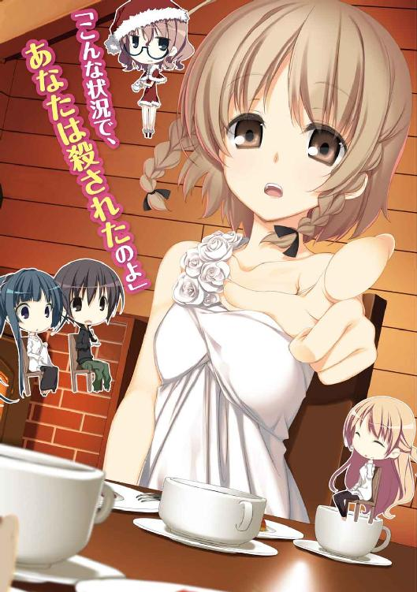
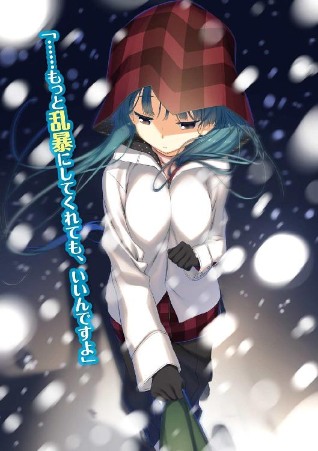
子ひつじは迷わない
贈るひつじが６ぴき
玩具堂
角川スニーカー文庫
本作品の全部または一部を無断で複製、転載、配信、送信したり、ホームページ上に転載することを禁止します。また、本作品の内容を無断で改変、改ざん等を行うことも禁止します。
本作品購入時にご承諾いただいた規約により、有償・無償にかかわらず本作品を第三者に譲渡することはできません。
本作品を示すサムネイルなどのイメージ画像は、再ダウンロード時に予告なく変更される場合があります。
本作品は縦書きでレイアウトされています。
また、ご覧になるリーディングシステムにより、表示の差が認められることがあります。
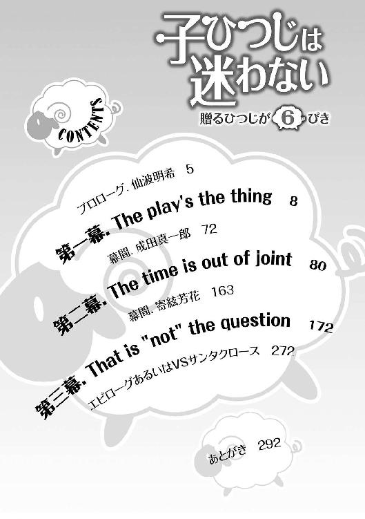
CONTENTS
イラスト／籠目
デザイン／福田功（imagejack）
プロローグ．仙波明希
ぱち、ぱち、と。
真っ赤に染まった暖炉の中で、藪のように絡まった薪が弾けている。
煉瓦造りの暖炉は自重でみっちり引き締まり、厳格な祖父の如き強面な寛大さで惨めなわたしを見下ろしていた。
その惨めな仙波明希は、暖炉の前の長椅子でうずくまっている。と言って、三角座り未満の、左足だけ投げ出した格好だ。
不意にがたと窓が揺れ、思わず体をこわばらせた拍子に声なくうめく。左足首で鈍い痛みが銅鑼を叩いた。眉をひそめながら見やった窓は雨戸で塞がって外は見えなかったが、一時も留まることなく揺れ続けていることからして、外は相変わらずなのだろう。
滅多打ちの吹雪。
街中でも外出の厳しそうな天気だが、山中の川辺に建ったこの小屋は完全に降り籠められていた。今、「外」と言われて反射的に脳裏に浮かぶのは景色ではなく「ただの白」だ。生まれて初めて遭遇する、猛吹雪。
かなり古い小屋なので、風向きの変わる度に壁を通して三半規管に圧力が掛かるような気がする。造りがしっかりしているのか、雨漏りやすきま風の心配はなさそうなのが救いだった。
暖炉から放射される熱はひりつくほどに強くても、冷え切った体の芯にはまだ遠い。吹雪の中この小屋に転がり込んでから、その程度の時間しか経っていない。
コートの襟に顔を埋め、吐き出す息が眼鏡を曇らせる。外と同じ、白が視界を塗り潰す。そして、それを拭うでもなく、思う。
──どうしてこうなった？
呆けたわけではないが、近い心境ではあった。ここ数日──冬休み前の連休の数日は、色々な事がありすぎた。雪山ロッジだとか、奇妙な姉妹だとか、芝居だとか、サンタだとか、成田真一郎が殺されるだとか......記憶も入り組もうというものだ。
しかし最早、わたしに猶予は残されていない。この雪山の一件を解明し、彼女にしてしまったことの責任を取るために、考えをまとめねばならない。
わたしは胸に引き寄せた片足を抱き締めて、事の発端──冬の初めの文芸部室で交わされた会話から思い出した。
ガタゴトと、隣の部屋で殺人事件の調査が行われる音を聞きながら。
Part-1：成田真一郎
冬である。文芸部室である。コタツである。
新手の三題噺ではない。その日、文芸部室の扉を開けた僕の前に現出した光景だ。
四方を囲む重厚な本棚をも圧倒する、古典的暖房器具の存在感。
「......なぜ部室にコタツが？」
「冬ですからねぇ」
思わず口走った僕の疑問に（答えになってない）答えを返してくれたのは、コタツの上座に陣取った東原史絵女史。後頭部で折り返した黒髪と垂れてこぼれ落ちそうな黒目。生徒会でも子ひつじの会でも何かと顔を合わせる、純和風美人といった三年生だ。
ちなみに、もう東原文芸部長ではない。あの──思い出深いような、思い出したくないような──文化祭の後しばらくして部長を引退し、二年の羽賀さんに職を譲っている。
とはいえ、妙に似合う褞袍を着込んで八〇センチ四方くらいの小さなコタツに根付くその姿は、飄々幽玄たる「東原部長」以外の何物でもない。今は羽賀さんの姿がないせいか余計にそう思える。
いないのは羽賀さんだけではない。今、部室に居る文芸部員は東原さんを除けばたった一人だった。しかもその部員は、自他共に認める幽霊部員だった。
その幽霊部員はいかにも幽霊らしい、眼鏡越しにも陰鬱な視線を僕に向けると、
「早く閉めて。寒い」
寝起きめいた不機嫌声で言ってきた。
「あんまり寒そうには見えないけどな」
後ろ手に扉を閉めつつも言い返してしまったのは、小柄な幽霊部員は東原さんに後ろから抱えられるような状態でコタツに入っているからだった。前門のコタツ後門の東原さんで寒さを訴えるのは、さすがに贅沢だろう。正直、ちょっと、羨ましい。
幽霊部員の色白な肌が微かに赤みを帯び、ぼさぼさの髪から跳ね出た一房の毛がぴくりと揺れた──気がした。
「あ？ もう冬なんだから常時通電してる暖かい家電の中とかに潜んでるはずの黒くて平べったいカサカサ動く生き物が場違いにも視界中に現れたかと思ったら、おぎろ巫山戯た羽音を鳴らしてくれたわね」
ははは、仙波さんの照れ隠しは心魂を剔るなぁ。あの体勢はまず間違いなく彼女を猫っ可愛がりしている東原さんに強要されたもので、それを見られるのが恥ずかしいんだろうけど。............はぁっ。
──この、僕に容赦のない幽霊文芸部員の名は仙波明希。僕の天敵にして......なんだろう？ 多分、僕の方の認識を言葉にしたら物凄い目で睨み付けられる。そんな間柄だ。
平常以上に強烈な仙波の「あいさつ」に溜息を吐き、僕はひとまず東原さんに訊いた。
「それで......今日はどんなお話ですか？」
「まぁ、まずは我が部のおコタでおくつろぎ下さいな」
「はぁ」
仙波のぼさ頭を鞠のように抱えて言う東原さんに生返事を返し、僕ら──僕と、会長と、佐々原は、コタツの三辺に散った。上履きを脱ぎ、なんとなく正座で座布団に落ち着く。
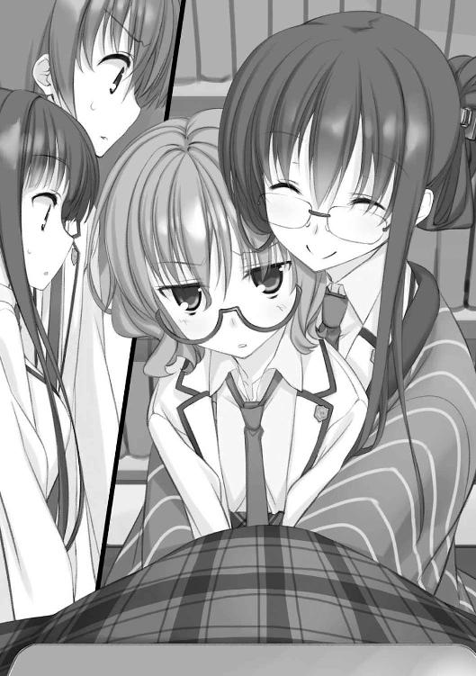
放課後、生徒会の活動をしていた僕らは、生徒会室を訪れた東原さんに後で部室に来てほしいと請われた。呼ばれた三人とも特に不都合はなく、今に至る次第だ。
一一月半ばの夕日は早くも暮れかかり、秒の刻みで着実に寝床へ落ちていく。そんな黄昏の空をたたえた窓を背に負って、東原さんは湯豆腐のようになめらかな声で切り出した。
「実は、折り入ってお頼みしたいことがあるのですよ」
東原さんが下級生にも丁寧語で話すのはいつものことだけど、今日はいつもよりちょっとだけ真摯な響きに思えた。子ひつじの会に相談へ来る時に近い。
会長が、天板に胸を載せるように乗り出して聞き返した。
「と言うと......文化祭の時に言っていた、雪山がどうとかの？」
「はいな。一二月の末、終業式前に四連休があるでしょう？ 聞けば皆さん、特に御予定はないとのこと」
祝日や自治体の休日なんかが重なってできる連休だ。冬休みとの間に終業式が挟まるので半端な感はあるが、クリスマスが休みになるということで、特に恋人のいる──つまり僕とは階級の違う──連中は首を長くして待っている。
そう言えば、文化祭のちょっと後に、会長が佐々原のクリスマス前後の予定を訊いていた覚えがある。......ちなみに僕は何も訊かれていない。端から予定などないと決めつけられたのだろう。実際何もない辺りが悲しい。
なんとなく──ホントになんとなく対面の仙波に視線をやる。目が合った。そしたらなぜか、コタツの中で足を蹴られた。仙波は力も体重もない上に今は靴を履いていないので痛くはなかったが、靴で蹴られるのとは全然違う柔らかな感触に思わず後ずさる。
ほんの一瞬、服越しに体温を感じただけでこうも戸惑ってしまう。僕にとっての仙波明希は、要するにそういう相手だ。
僕らの小競り合いに気付いているのかいないのか、東原さんは頼み事の内容を語り出した。
「そのお休みを、わたしの親戚が営んでいるロッジで過ごしてほしいんです。
──その親戚のお家はいわゆる事業家って奴で、まぁいろいろと手広くやってるわけですが、副業の一つとして、雪山に建てたロッジをシーズン中だけ宿泊施設にしてお客を取っているんです。
とはいえ不況の折、コンスタントなお客さんがあるわけじゃありません。そんなわけでここ数年は、クリスマスの数日間はわたしら親戚の若い者で集まって、オーナーのお嬢さん方と遊ぶのが習慣になってます。
......正確には「遊ぶ」と言うより、ちょっとしたゲームを行う感じなんですが。
ところが今年は、わたしは受験の追い込みで忙しいですし、他の人たちも就職したりで行けなくなってしまいました。でも、ちょっとした事情があって集まりそのものを中止するわけにはいきません。
そこで皆さんに、わたしたちの代わりにロッジに泊まってきてほしいのですよ。
ロッジのサービスについては保証します。一流ホテルとまでは行きませんが十分快適に過ごせるはずです。辺鄙な場所ではありますがすぐ近くまでバスが通ってますし、周りは自然がいっぱいでスキーや川釣りも楽しめる好立地。
申し出を受けてくれれば、それを往復の交通費のみで楽しんでもらえます」
東原さんの長い説明を思い思いに咀嚼して、僕ら三人は顔を見合わせた。会長の顔にも佐々原の顔にも、多分僕が浮かべているのと同じ色が浮かんでいた。怪訝。
会長に目交ぜで促されて、まずは僕が疑問を口にした。
「ちょっと好条件すぎませんか？ なんだか申し訳ないような」
東原さんを信用しないわけじゃないけど、さすがに話が旨すぎる。不安にもなろうというものだった。
「それに、なんでまたわたしたちが代役に選ばれたんでしょうか？」
佐々原が問いを重ねる。同感だ。適当な部外者でいいなら、何も僕らに頼まなくても、例えば文芸部の後輩にでも紹介すればいいように思える。
それらの質問は想定していたのだろう。東原さんは仙波の前髪を指で梳きながら、あっさりと答えてくれた。
「ええ、それには至極単純な理由があります。
──今回の件に必要なメンバーは、女性三人に男性一人。それより多くても少なくてもいけません。その条件に見合うグループが、わたしが頼み事をできる知り合いの中ではあなた方しかいなかったというわけです」
？ 人数制限が四人というのは解るけど、男女の内訳まで決まってるというのは奇妙だ。しかも二人ずつでなく、一対三。
......ん？ いや、それ以前に──
「女性......三人？」
引きつった声を出したのは、当然仙波だ。
僕だったら、その拒絶に満ち満ちた声音に背をすくませるところだが、東原さんはあくまで東原さんだった。
「そうですよ？ 会長さんと、佐々原さんと」
小柄な仙波を背後から抱きすくめ、行くも退るもままならない彼女の耳元に、ほがらかな声を流し込んだのだ。
「それに、仙波っちゃん」
続けて何か囁かれながら、耳元の声に身悶えする仙波を眺めつつ。
僕は、この依頼への参加を即断した。
＊
時は早くも流れ行き、師走もラストスパートの頃。僕らは、雪山に出発した。
その間、子ひつじの会でいくつか相談を受けたり、サトウ（仮）が自分も雪山に行きたいとゴネたり──受験生が床に臥し転んで駄々をこねる姿に、僕は我が校の明日を想って暗澹となった──、それはもういろいろあったわけだが、ともかくも無事に旅立ちを迎えることができた。
目的地はかなり遠く、片道の移動時間だけでもほぼ一日がかりになる。しかもスケジュールも予算も厳しいため、僕らは連休前日、授業が終わってから一度帰宅し、近隣最大のターミナル駅に集合してそこから夜行バスに乗ることになった。
御近所なので真っ先に合流した会長と二人、夜中に人気のない街を歩くというのも初めての体験で面白かったし、待ち合わせ場所の改札前で仙波や佐々原を待つのも新鮮な感覚だった。それぞれ青と白のコートを着込んだ仙波と佐々原のコントラストに思わず見とれていたら、会長に蹴られた。
「ぼーっとしてないで、さっさと行くわよ」
「ちょ、ちょっと待ってよ」
僕はあわてて、会長の背中を追いかけた。
バスは横並びの四席を確保できなかったため、佐々原と仙波、会長と僕が前後に分かれて座った。夜行バスなので大声で喋るわけにもいかず、カーテンが閉まってるので景色も見られない。寝るくらいしかすることがなかった。
重苦しい慣性をともにバスが走り出して数十分、毛布に埋まってうとうとしてきた頃、前の背もたれ越しに佐々原の声が聞こえてきた。
「仙波さん。飴を舐めますか？ 車酔いに効くそうですよ」
「今は平気」
「じゃあ麦茶はどうです？ 美味しいですよ」
......なんか、言うことがお祖母ちゃんみたいだな佐々原。
そう思いつつ、彼女のささやき声は普段聞き慣れないもので、顔が見えていないせいもあってか不思議に耳へ沁みる。寝る前に聞くには良い声だと思った............寝る前......寝る前か......ぅふふふ。
などと、寝入り端の謎テンションで多幸感に浸っていると、今度は肩に重みを感じた。ふわりと鼻をくすぐる、シャンプーの匂い。
びくっとして目を向けると、先んじて眠りに落ちた会長の頭が肩に載っていた。いきなり目が覚めたが、席が狭いため身じろぎもできない。会長にしても、窮屈だったから僕の方にはみ出して来たのだろう。それにしても、でも。
いくら子供の頃から慣れ親しんだ相手とはいえ、こんな至近距離に異性の顔があっては心穏やかではいられない。睫の一本一本まで見分けられる間合い。薄くリップを塗った唇が小さな寝息を紡ぐのに合わせて、セーターの良好な伸縮性を証明してやまない起伏がゆっくり上下する。
「っ............！」
困った。
困ったけど、安らかな寝顔を見てしまうと、起こすのはためらわれる。年末で、旅行前ということもあって何かと忙しく、ここ数日寝不足だというのを知っていればなおさらだ。しかし起こさずに距離を取るのも難しい。
進退窮まって──
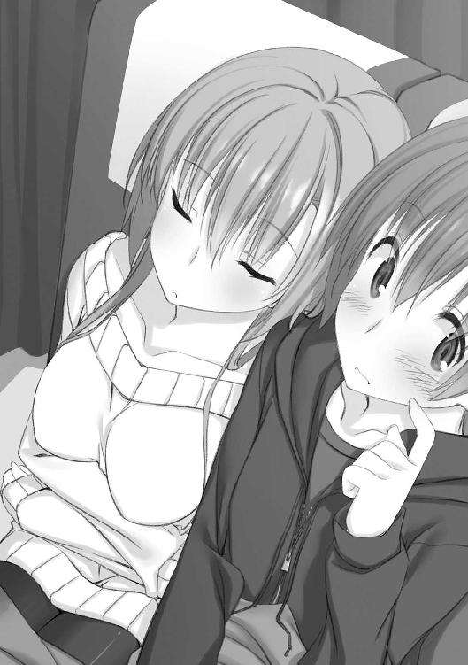
僕は、諦めた。僕の肩で安眠できるならしてもらおう。
諦めが付いたら、会長の安らかな寝顔が懐かしいそれに見えてきた。小さな頃、同じタオルケットを腹に載せて昼寝した相手だと思えば緊張も緩もうというものだ。
薄甘いような思い出が頭をゆっくり弛緩させ、眠気がぶり返してくる。僕はずれ落ちかけていた会長の毛布をかけ直し、唇だけで「おやすみなさい」を言って、目を閉じた。
胸はまだしばらく、高鳴っていたけれど。
「エア枕使いますか？ よく眠れますよ」
「......なんでそんなに用意がいいの？」
前の席で続く佐々原と仙波のささやかな会話が、良い感じの子守歌になった。
翌早朝には目的の駅に到着し、そこからさらに鈍行を乗り継いで、目当ての雪山近くの駅に辿り着いたのは昼頃だった。
さすが雪山の麓だけあって、そよ風が頰にひりつくような寒さだ。最近雪は降ってないはずだが、駅舎の屋根や郵便ポストの上、植え込みなどあちこちにぽつぽつと雪の塊が残っていた。
目的のロッジはスキー場への直行便バスに乗り、そこから少し歩いたところに在る。駅前のそば処で掛け蕎麦など食べてから出発した。
朝からスキー客で混み合ったバスには閉口したが、今度は三〇分もかからないし、景色を見ることもできる。カーブの多い山道に翻弄されつつも、真っ白な山肌に立ち並ぶ霜枯れした木々の連なりに、別世界へ入り込んでいく心地よい違和感を覚える。
そんなしっとりした情趣の景色と、隣で窓に張り付いて静かに目を輝かす佐々原の横顔。どちらに目を置くかが悩み所だった。
到着したスキー場前のバス停でほとんどの客と別れ、ロッジへの道を行く。東原さんから聞いていた通り、バス停のすぐ近くに道標の看板が立っていたから迷わずに済んだ。
──『ロッジ天幕荘 この道三〇〇メートル先』
両側の森に深となずんだ雪が清かな日差しを薄蒼く照り返し、街育ちの僕らには「神秘的」なんて小説めいた感想をもよおさせる、雪山の小径。
見上げれば黒ずんだ梢が頭上まで伸びて、のっぺりした紺碧の空にひびを入れている。そのどこか硬質な空に、仙波の欠伸が白く曇って吸い込まれていた。
十数分も歩くと、ほどなくして目的のロッジに辿り着いた。
小高い丘を背に建てられた、外見はログハウス風の建物だった。壁は鮮やかな赤塗りで、三角屋根に積もった雪の白さが映える、そんなコントラストなたたずまい。
基礎の高い二階建てで、離れのような小屋が二つある。物置か何かだろうか。
近付いて行くと、軒下に大きな『天幕荘』の看板が掛かっていた。間違いない。ここだ。
僕らの厄介になる、個人運営のロッジ。東原さんの言う通り、がっちりした造りでいわゆる民宿とはかけ離れた仕様に見える。夏に行った寄絃さん家の万鏡館と違って、オーソドックスな高級山荘といった趣だった。
商業ホテルと言っても違和感ないほど整っているが、玄関ポーチの傍らに大きな雪だるまが立っているのが個人の別荘を兼ねている実態を感じさせる。東原さんの親戚の誰かが作ったんだろうけど、子供でもいるのだろうか。
「ここみたいね。なかなか良さそうな所じゃない」
手庇を作って会長が言う。同感だ。なにせ無料で泊めてくれるという話だから、こんな上等な建物だとは思っていなかった。
ぐんとテンションが上がるのを感じながら、振り返る。
「着いたぞ仙波......って、大丈夫か？」
さっきから無言でうつむき歩いていた仙波だったが、今は自分のバッグを地面に置いてしゃがみ込んでいた。昨晩からの乗り物疲れに加え、荷物を負っての歩きが仙波の乏しい体力を尽かしかけているらしい。
しかし仙波は、すぐに膝を手で押して立ち上がった。疲れより、僕に心配される屈辱の方が鬱陶しいとでも言いたげに。
そうやって顔を上げた仙波は、僕を睨んで──心なし弱々しかったが──口を開いた。
「平気よ。このくらびっ」
語尾が変なことになったのは、顔が雪まみれになったからだった。空は晴天。当然ながら、降ってきたのではない。
突然飛んできた雪玉が、仙波の顔を直撃したのだ──正確には会長に飛んできたのだが、あっさり避けたので後ろにいた仙波に当たった──
何事かと反射的に雪玉の飛んできた方向に向き直る。と、二発目の玉が今度は僕に向かって飛んできた。咄嗟に手で顔をかばって、雪玉を摑む。よく固めずに投げたのだろう、脆い雪玉で、握るとそのまま崩れ落ちた。
佐々原があわてて仙波の顔を払っている。それを背にかばいながら、会長とともに雪玉の投手を見やった。
「なんだ......？」
雪玉は雪だるまの方から飛んできた。当たり前だが、だるまが投げたわけではない。
雪だるまの後ろに隠れていた少女が、不意に飛び出して奇襲をかけてきたのだ。
「ふーむ、なるほどなるほど......大体解ったわ」
いささか舌っ足らず。たとえるなら砂糖菓子のように甘く、ちょっとした衝撃でぽろぽろこぼれ落ちそうな、声。
それはそのまま、彼女全体の印象になった。
羽織ったケープが、ポーチの階段を下りる軽やかな足取りに合わせてふわり、ふわりとそよ風をはらむ。亜麻色がかった髪の上には白いベレー帽が載っていて、少女の奇矯な第一印象と妙に調和していた。
年の頃は僕らとそう変わらないだろう。顔立ちはやや幼く見えるけど、背は仙波と佐々原の中間くらいある。ミルクの色の肌と黒目がちな瞳が奇麗な、はっきり可愛らしいと思える女の子ではあったけれど、いきなり雪玉を投げてきて満足げに笑っているのを見ると警戒が先に立つ。
少女はゆったりした足取りで僕らの前まで来ると、スカートの両端を指でつまんで持ち上げる一礼をした。そんな大時代な仕草がよく似合う人だった。
「いらっしゃませ、お客様。
わたしは葉村千代。このロッジ天幕荘のオーナーの娘です。史絵ちゃんから聞いてると思うけど、これから四日、一緒に過ごすことになるわ。
よろしくね」
柔らかな笑顔が、純白の雪景色に映えていた。
「これはどうも御丁寧に。わたしは東原さんの後輩で竹田岬と申します」
相変わらず外面の良い微笑であいさつを返す会長に促されて、僕も自己紹介する。雪玉の件で面食らっていた佐々原も、見た目は冷静に返した。微妙に嚙んだのか「佐々原みっき」と聞こえたけど。
で、物理的に面食らった我らが仙波さんはと言えば──
「わたしは仙波......ところで、訊かせてもらっていい？」
雪は佐々原が落としたが、微妙に眼鏡がずれたままの仙波の目つきは、酷く無感情なものだった。
「はい。何かしら？」
しかしケープの少女──葉村千代さんの浮かべた表情は、かけらの屈託もない笑顔で、僕はそのすれ違う交差に不吉なものを覚えた。千代さんの笑顔は血筋からか東原さんのそれによく似ていたけれど、全て解った上で遊んでいる東原さんとは違って、この人は天然で仙波の不機嫌を感じ取れていないように見えたから。
「さっきの雪玉には、なんの意味があったの？」
怒っていると言うより、面倒臭さが早くも臨界に達しつつある感じだった。佐々原が手をはらはらと宙にさまよわせ、会長が面白そうに見守る。そんな中、千代さんの反応は、その場の誰もが予想しないものだった。
「よくぞ聞いてくれたわ！」
ぽふッと手袋を合わせて──音が籠もったのが不満だったのかいそいそと手袋を脱ぎ、再び手を打ち合わせた。パンッ！ そうしてすすっと仙波に近付いて、ぴっと人差し指を立てて見せる。
「今のは『七人の侍』よ」
ふふンと鼻息が漏れていそうな得意顔からすると、それだけで一同の感心を得られると確信しているようだった。
しかし当然、意味は解らない。いや、『七人の侍』って映画は知っているけど、それがどうして、宿泊客に雪玉を投げることにつながるのか。あの仙波ですら、毒気を抜かれてぽかんと千代さんを眺めている。
しかしその不理解は、意外なところから解消された。佐々原が怖ず怖ずと口を開く。
「もしかして、葉村さんは、わたしたちを試したんですか？」
「そういうことね」
どういうこと？ と僕と会長が目で尋ねると佐々原は「映画の中で、スカウトしようとする仲間の腕を試すために不意打ちしてみるシーンがあるのです」と神妙な顔で教えてくれた。......佐々原は、なんと言うか、意表外な知識を持っているな。
一次的な意味は解ったが、まだ得心にはほど遠い。会長が頰に手を当てて訊いた。
「と言うと、東原さんのおっしゃっていた、このロッジに泊めていただく『条件』に関係あるのかしら？」
「ええ、そう。詳しくは後で説明するけど、これは必要なことだったのよ」
悪びれるでもなく秘密めかした口調が、千代さんの甘ったるい声にカラメルのような焦げ臭い風味をまぶす。
狐につままれたような思いを味わいつつ、なんとなく視線を巡らせると、妙に厳めしい表情の雪だるまと目が合った。
千代さんに誘われて入った天幕荘の中は、パンフレットぽい修辞で言えば「木の温もりの感じられる空間」だった。
木目を活かした内装で、塗装されている部分や壁紙は淡い暖色でまとめられている。玄関でもこもこしたスリッパに履き替えて中に進むと広間になっていて、切り株風のテーブルや椅子が並んでいた。
「まずはその辺で暖まってちょうだい。他の人呼んでくるから」
千代さんに勧められるまま、コートを脱いで荷物を下ろす。ようやく暖かい室内に落ち着いて、思わず深い吐息を漏らす。これがいわゆる人心地つく、という奴か。
広間には暖炉が据え付けられていたが火は入っておらず、普通にエアコンで暖房しているようだった。佐々原が物珍しげに暖炉をのぞき込み、会長はその傍らの火かき棒を持ち上げて「これがあの、昔のスリラー映画とかでしょっちゅう凶器になってる火かき棒ね！」と唸っている。
僕は、切り株形の椅子に座り込んでぼーっと天井を見上げている仙波の隣に座った。
「疲れ切ってるな。大丈夫か？」
すっかり見慣れた、物憂げな一瞥が返ってきた。それだけだったが、いつものことだったので気にせず続けた。
「雪玉がとどめだったか」
やっぱり答えは返って来なかった。それでも待ちながら天井を見上げる。剝き出しの梁が燻されたような色味になった、なんと言うか、味のある天井だった。そこにある旅愁。
ちらと視線を下ろすと、意外にも可愛らしい飾りの付いたセーターを着込んだ仙波の姿。若干だぶついているし、家の人から借りたとかかも知れない。......いやまぁ、僕は似合ってると思う。バスの中でも見た冬の私服姿だけど、まだまだ、新鮮だ。
暖房の温さに身を緩めながら盗み見ていると、昼食の後で佐々原にリップクリームを塗りたくられていた小さな唇が、ほんの小さく、動いた。
「......あの子、苦手だわ」
仙波の苦手な千代さんは、すぐに戻ってきた。年配の男性の手を引いている。
年は五〇歳くらいだろうか、恰幅のいい、人の良さそうな顔をした小父さんだ。千代さんにぐいぐい引っ張られながらあわててエプロンを脱いでいるところからして、彼女のお父さんということはなさそうだが──
「まずは尾関さんを紹介するわね。このロッジの管理人さんよ」
「ぁ、尾関と申します。ようこそいらっしゃいました」
エプロンを畳んでいる内に千代さんに紹介されてしまい、尾関さんは恐縮の体だった。父親くらいの齢の人にそんな態度をされてしまうと、こっちが落ち着かない。
僕らも続けて名乗ると、千代さんのお父さんに雇われてシーズン中だけ管理人をしているのだと教えてくれた。シェフも兼ねている......と言うか、本業は料理人なんだそうで、シーズンオフはそちらの仕事をしているらしい。
千代さんもよく懐いているようだし、腰の低い、気さくな人みたいだ。
「尾関さんのお料理はそこらのレストランよりずっと美味しいわよ」
尾関さんの腕にぶら下がるようにして、千代さんは我が事のように自慢して笑ったが、ふと顔をしかめた。似合わない表情だった。
「......もう一人、わたしの姉さんが来ているんだけど、ちょっと変わり者でね。失礼があるかも知れないけど、気にしないでね」
いきなり雪玉を投げてきた千代さんより厄介な人というのは、にわかには想像できない。夏にとびきり極端な例と知り合ったせいか「お嬢様」という人種に落ち着いたイメージを持っていたが、大きく修正した方が良さそうだ。
「倉子さんはアトリエの方にいらっしゃいますよ」
「アトリエ、ですか？」
耳触りになじみのない単語に、会長が首を傾げて聞き返す。今度は尾関さんが、誇らしげな笑顔を浮かべた。
「ええ、隣に小屋が建っていたでしょう。千代さんのお姉さんは画家をなさっていて、そこを仕事場にされているんです」
千代さんとは逆に、尾関さんは千代さんのお姉さん──倉子さんと言ったか──に好意的なようだ。その印象を補強するように、千代さんが口を尖らせる。
「画家って言うか、道楽絵描きよ。なんだかぐちゃぐちゃした、よく判らない絵を気まぐれに描いてるだけ......まぁ、奇麗で面白い絵だとは思うけど」
「たまに買ってくれる人もいるのよ」
玄関の方からした新しい声に振り向いて。
目が合った瞬間、息が詰まった。
二十代半ばくらいの女性だ。スレンダーな体型ですらりと背が高く、無造作に着込んだシャツとジーンズがよく似合う人だった。伸び放題の前髪からのぞく化粧っ気のない顔立ちが、千代さんに似ているように見えるのは先入観だろうか。
特に変わったところがあったわけじゃない。それなのに得も言われぬ緊張を覚えたのは多分、僕らをちらりと見た時の眼差しに、どこか痛々しいものを感じたからだと思う。でも、その感覚もすぐに消えてしまったので、気のせいかも知れない。
千代さんはその女性に向き直ったけど、何も言わなかった。相手は相手で、佐々原のそれとはまた違った、茫洋とした無表情で千代さんを見下ろしている。
反応に困る僕らを助けてくれたのは尾関さんだった。
「やぁ倉子さん、ちょうど良かった。この方たちが、東原のお嬢さんの紹介で来て下さった皆さんです」
女性二人を補うように、愛想よく僕らを紹介してくれる。こんな状況でも全く動じていないのは年の功か、単に慣れているのか。
倉子さんはと言えば、僕らが一人ずつ名乗るのをぼんやりと聞いていたが、その返事は至って素っ気なく「そう......倉子です。よろしく」で終わった。最初は何か不機嫌なのかと思ったが、どうも僕らが気に入らないとかでなく、単に興味がないように見えた。
倉子さんは尾関さんと二、三言交わして、そのまますたすたと、広間の隅の階段を上っていってしまった。広間から見た感じ、寝室は二階にあるのか。
「ね？ 失礼でしょ」
倉子さんの姿が消えるなり最前の勢いを取り戻した千代さんが、内緒話のトーンでささやく。なんとなく目が合ったのは佐々原だった。薄い表情の中にも困惑が垣間見える。恐らくは、僕と同じ感想を抱いたのだろう。
仲の悪い姉妹......なのだろうか？
尾関さんは人数分のお茶とお菓子を用意してくれた後で夕食の仕込みに戻り、僕らは千代さんに促されるままにテーブルを囲んで座った。
千代さんがコンッとくしゃみのような咳払いをした。僕らは意図を汲んで注目したが、仙波だけは両手で包むようにした湯呑みを見下ろしたままだった。僕は胃痛に顔を引きつらせたが──出先でくらい愛想よくしてほしい......──千代さんは気付かなかったのか気にしなかったのか、ともかくそのまま口を開いた。
「さて。これで、ここにいる人たちの紹介は終わったわね。お互いに」
「他にはいらっしゃらないんですか？ 御親戚の方とか」
会長の問いは当然のものだろう。東原さんの話では親戚の集まり、ということだったので、もっといろんな人が来るものだと思っていた。
「ええ、そうよ。五年前からずっとそうなの。元々、親戚の中でも年の近い子供たちが遊んだり最近のことを話したりする集まりだから。尾関さんは昔から家と付き合いのある人で、親戚中から信用されてるしね。
今年は史絵ちゃんたちが忙しいって言うから、代わりにあなたたちを御招待したの。来てくれて本当にありがとう」
「いえいえ」
会長はうなずいてからお茶に口を付け、それから目立たないように唇を舐めたようだった。ここから先が本題だ。
「でも、どうしてお招き下さる『条件』が、男性一人に女性三人だったんでしょう？」
結局、東原さんは男女比が決まってる理由を教えてくれなかったのだ。「行ってからのお楽しみです」という言いぐさはいかにも東原さんらしく、同じ理由で深刻なことにはならないだろうと、強いては訊かなかった。
「もちろん、理由はあるわ。理由しかないと言っても言い過ぎじゃないわ」
ちょっとおかしな日本語だとは思ったが、それだけに意気込みは十二分に伝わった。千代さんは聖歌の似合いそうなソプラノで続けた。
「この集まりで重要なのはキャスティングなの。
──みんなには、お芝居をしてもらうわ」
「お芝居......ですか？」
「ええ、お芝居。ここに居る間、ある役柄を演じてほしいの。それでね、その配役にはね、男の子が一人と女の子が三人要るの。
それが四年前から毎年続けてきた、この天幕荘の行事なのよ」
芝居。それが、東原さんの言っていた「中止にするわけにはいかない」ゲームなのだろうか。それも......四年前から、毎年続いているという。
なんだか、儀式めいてきた。にわかに胸がこわばる。
時と場所に根付いたシステム。僕らはそれに組み込まれようとしている。
そんな何かを感じたのは僕だけではないのだろう、いつの間にか仙波も顔を上げて、千代さんを見ていた。
改めて全員の視線を集め、千代さんは両手を広げた。このロッジを、内側から抱き留めるように。
「舞台はとってもリアルよ。なにせ演目が実際に起こったのがこのロッジなんだもの。
そしてあなたたちに演じてもらう役は、わたしたち」
彼女の羽織ったケープが、翼のように翻った。
「五年前のロッジにいた、四人よ」
Part-2：仙波明希
......らしくもなく、欲をかいたのが馬鹿だった。
あの日──いつものように部室棟資料室でだらだらしていたら東原先輩に拉致され、このロッジに行ってほしいと頼まれた、あの日。
わたしは即座に断った。暑がりと同等に寒がりで、有酸素運動と苦役がシノニムなわたしが雪山なんぞ冗談じゃない。そもそも成田真一郎が同道するとあれば、桃源郷だろうと神田神保町だろうと梅田のかっぱ横丁だろうと、たちまち八甲田山死の彷徨である。七里けっぱい、峻拒します。と。
しかし東原先輩は、そんなわたしの防壁をもあっさりと突破する誘惑のカードを有していた。わたしは背反する面倒臭さと欲望の板挟みに苦しんだ末、結局、先輩の用意した報酬に釣られてこんな雪山くんだりまで来てしまったのだ。
卒業を間近に控えた先輩に対する義理も、少しは、あるし。
しかし、やはり失敗だった。夜行バスは窮屈だったし、夜中に起きてトイレに立ってみれば後ろの席で会長さんと成田くんがべたべたと不愉快な寝様をさらしてるし、それに気付いた佐々原さんが「成田くんは、なんかもう......まったくもう......」などとぶつぶつ呟きながら変なタイトルの付いたメモ帳を真っ黒に塗り潰してて怖かったし、雪山の道はじっとりとして普通の五割増しで歩き疲れるし......極めつけは、あいさつ代わりに雪玉を投げてくる妙ちくりんなお嬢さんだ。
葉村千代。
わたしたちと同じ高校一年生だそうだが、あの子を見ていると、あまり思い出したくない別の顔が浮かんでくる。明るく、素直で、マイペースなようでいつの間にか周りを巻き込んでいる──疲れる、相手だ。
そして彼女がわたしたちに要求してきた「芝居」の内容は、考えるだに頭の痛くなるものだった。
唯一の救いはと言えば、ロッジの概要を聞いた後で通された客室が、予想以上に快適だったことだろうか。
殊に、寝具は清潔で見るからに質が良く、そこだけ見るならあの万鏡館よりも上かも知れない。心身の疲れが限界に達していたわたしは、部屋に入るなりベッドに倒れ込んだ。ふわふわと軽やかな掛け布団の感触と、不安になるくらい抵抗のないマットの柔らかさに一種感動すら覚える。
「ふぁ......」
我ながら気の抜けた声を上げながら、ごろんと寝そべって部屋の中を見回す。内装は広間とそう変わらない。ナチュラル志向な壁や床に、人為をこらした家具が並んでいた。とかく慣れない環境だけに落ち着くとまではいかないが、逆に言えばその程度の不満しかない。暖房がほどよく効いているのもありがたかった。
一つだけの窓は縦に開けるガラス窓で、何かの補強なのか外側にがっちりした格子が付いている。今は薄赤く染まった日が注ぎ込んで、床の絨毯に網を描いている。これから夕食までの一時間ほどは、各自休憩ということになっていた。
「なんだか、おかしな話になりましたね」
ロッジの二階に並んだ客室は三つで、全て二人部屋。わたしの同室は、夏の万鏡館に続いて佐々原さんだ。他の連中といっしょは御免だということもあるし、この部屋割りにはちょっとした意味もあった。
目だけで声を追うと、佐々原さんは着替えをベッドの上に並べ、服を選んでいるところらしかった。わたしはあまり気にしていなかったが、昨夜から今まで着た切り雀だったことに気付く──いつもは妹がうるさいので自分で管理する習慣がない──。冬とはいえ、そろそろ着替えるべきか。
適当に靴下を脱ぎ捨てながら、いらえを返した。
「五年前、このロッジで実際に成立していた人物関係をなぞれ......当たり前だけど、初めて聞く演目ね」
確かに、おかしな話だ。あまつさえ、そんなおかしなことを四年前からずっと続けているという。東原先輩は中学生の頃からそんな芝居に参加してきたことになる。しかし、学校でも演劇部のヘルプに入ってたりした東原先輩はともかく、およそ演技など向いてそうもないわたしに何ができるというのか。
そもそも。
「どういう意味があるんでしょう？」
着替えが決まったらしくシャツをまくり上げる佐々原さんが言うように、そんなことをする意図が判らない。
「さぁね。夕食の時に言うんでしょ」
役柄の詳しい説明といっしょに、夕食の席で語ると千代さんは言っていた。寝転んだまま、脱皮するようにずるずるとセーターを脱ぎながら「多分ね」と小さく付け足す。四年も続いているわけだからそれなりに要領はまとまっているはずだが、どうもあの千代さんのやることは見当が付かない。
どうにもあの子は......と、頭に像を結ぶ千代さんのイメージとともに、思い出す。わたしだけは、夕食時の衣装が指定されていた。配役はもう決定しているらしく、わたしのそれにはあらかじめ用意された服があるとのことだった。
夕食の席に着てくるように言われているが、せいぜい一時間後のことだし今着替えてしまった方が手間が省けるだろう。
ベッドの上に放ってあった紙箱を手元に寄せる。千代さんに渡された「衣装」とやらだ。
他の連中には、ラフすぎなければ適当な私服でいい、とアバウトな指定だったことからすると、何か特殊な服なんだろうけど......
そんな予想に漠然とした不安を抱きながら箱を開けて。
わたしは、絶句した。
数十分後。
着替えを終えた佐々原さんの姿は、気のせいか既視感のあるものだった。会長さんが昨日から着ているセーターに似た物を着込んでいるせいだろうか。
......わたしの方も、着替え終わっている。一時は千代さんに服を投げつけてそのまま帰ろうかと思ったくらいだったが、帰るのは帰るので面倒だったので──バスもなくなる時間だった──、心身の労力の単純な引き算から着替える方を選んだ。
「よく似合ってますよ」
向かいのベッドに腰掛けた佐々原さんの感想は、彼女一流の変則的な感性に従った上での本心なのかも知れないが、どうにもお愛想にしか聞こえない。わたしは死体のようにベッドに転がったまま、目だけで睨んだ。
「そう思うんなら代わってほしいわね」
「いえ、仙波さんの役の衣装らしいですし......それに、わたしでは」
言いかけて言葉を切った佐々原さんの視線は、自分の体を見下ろすものだった。
......まぁ、そうだろう。なぜだかわたしのサイズに合う衣装は、佐々原さんの体にはキツいだろう。背丈も、体型も。
後のことを考えると気が重くなる。いろんな意味で特殊な佐々原さんはともかく、会長さんに見られたら大笑いされることは想像に難くない。他の人ならともかく、あの憎たらしくも余裕ぶった生徒会長に嗤われるのは相当な屈辱だった。
そして成田真一郎。あの男にこんな姿を見られたら......それを思うと、なんだか胸が詰まる。悪心という奴か。
胸中で綿飴を練っているようなもやもやを持て余していると、不意にノックの音がした。反射的に身をこわばらせたが、扉の向こうから聞こえてきたのは思い浮かべていた相手ではなかった。
「おくつろぎのところ失礼します。尾関です」
わたしが居住まいを正す間に、佐々原さんが「どうぞ」と応える。尾関さんはもう一度失礼しますを繰り返してから扉を開けた。
でもって、わたしの姿を見るなり人の良さそうな顔をほころばせた。
「おや、もうお着替えでしたか」
「......お陰様で」
「よくお似合いですよ。いやぁ、五年前を思い出します」
見覚えのある表情──あれは確か、七五三の時のわたしを見る父さんの目だ──からすると、わたしの皮肉には気付かずに本気で和んでいるらしい。......それだけ、この衣装が思い出深い物だということか。
心中で嘆息して、訊いた。
「何か御用でしょうか？」
まさかわたしの仮装を見に来たわけでもあるまい。尾関さんはハッとして口を押さえた。
「おや、これは失礼......
部屋に何か不備がないかのおうかがいと、夕食の仕込みが終わったので予定通り三〇分後に来ていただきたいというお知らせです」
わたしは佐々原さんと目を見合わせ、そこに何の不都合もないのを確かめ合った。
「お部屋は問題ありません。ただで泊めてもらうのが申し訳ないくらいです」
「それは良かった。何かあれば、いつでもおっしゃって下さい」
尾関さんはどこまでも柔和な笑顔を浮かべて身を引き、扉を閉じかけたか、つと動きを止めると、わたしたちに頭を下げた。そうすると、頭頂のまばらな白髪が目立った。
「千代さんのお芝居の件、酔狂にお思いでしょうが、彼女には必要なことなのです。ここにいらっしゃる間は、どうかお付き合い願います」
エキセントリックな千代さんの世話を任されているだけあって、尾関さんは優しげな人格者に見える。その言葉に強圧的なところは少しもなかった。もしわたしたちが千代さんの指示に従わなかったとしても、ロッジを追い出したりはしないだろう。
だが、苦労人然とした年長者に頭を下げられて否と言う度胸は、少なくともわたしにはなかった。
しかし......と、尾関さんの去った扉を見つめながら、首を傾げる。
──彼女には必要とは、どういうことだ？
＊
夕食までの三〇分は、佐々原さんと二人して部屋の設備をためつすがめつしたり、無事に到着したことを家族にメールしたりしている内に過ぎた。
食事は一階に在る食堂で摂ることになっている。八人ほどが楽に食事できるテーブルのある部屋で、広いからかわざとなのか照明が行き届いておらず、部屋の隅には薄黒い影がこびりついていた。趣と言えば趣だし、わびしいと言えばわびしい。
佐々原さんがトイレに行くのを待っていたため、食堂に入ったのはわたしたちが最後だった。いつも通りの胡散臭い微笑を浮かべた会長さんも、にこにこと無邪気に笑う千代さんも、昼間と同じ無造作な格好で眠たそうな目をした倉子さんも、すでに食卓に着いている。
おや、会長さんの隣では、暖房が効きすぎているのか雪山だというのに巨大なゴキブリが猖獗している。
「せ、仙波......？」
......でもって、そのゴキブリが、わたしの姿を見るなり妙な声を出した。呆然と、尻子玉を抜かれたような間抜け面をさらしている。
「あら可愛い」
「へぇ、なかなか似合ってるじゃないの」
会長さんは口元に手を当てて──上品めかしてるが、絶対に発作的爆笑を押さえたに違いない──、千代さんは上機嫌でわたしを迎えた。倉子さんはわたしを一瞥して一瞬瞳を揺らした気がしたが、それ以上のリアクションはない。......どうもこの人は、この集まりに無関心なようだ。
おおむね予想通りの反応に溜息を吐きつつ視線を成田くんに戻すと、まださっきと同じ顔でわたしを見つめていた。
......もしこの場に都合良くバールが落ちてたら、衝動的に殴りかかってその視線を消していたと思う。そんな、全身の細胞がむずかるような感覚に自分を抱き締めて。
「............なに？ 笑いたいなら笑えばいい」
サンタ服のわたしは、自暴気味に言い捨てた。
ただのサンタ服ではない。いや、赤地に白いファーの付いたその有り様はまごうことなく一般に浸透したサンタクロースのものなのだが、逆に言えばその必須記号だけを残した服でもあった。
本物のサンタが着ていたら凍傷を起こすか職質を受けるかという布地の薄さで、防寒機能には明らかな難がある。さらに言えば、恐らくはフリーサイズの子供服だった。パーティーグッズか何かなのだろうが、こんなニッチな代物、一体どこに売っているのだろう。
悠久なまでに無意味なナイトキャップの力なく垂れ下がる様が、今のわたしの心境を象徴するかのようだった。
「笑うだなんてとんでもない。とっても可愛いじゃない」
言葉とは裏腹に目が笑っている──いや、いっそ目から悪意の嗤笑が奔流の如く吹き出している──会長さんは、隣で固まっている成田くんの肩をぽんと叩いた。
「ねぇ、たまくんもそう思うでしょ？」
「ゑっ？」
話しかけられてようやく我に返ったか、成田くんは上擦った声を出した。
放心したようになっていた成田くんの視線が意識を取り戻して、改めてわたしに向けられる。
......なぜだか急に、無駄にひらひらした足下が気になり出した。急に寒さを感じた時のように、自然と脚がすり合わさる。わたしは制服以外のスカートを着慣れない。こうも感想に困られるとは、よほど変なことになっているのだろう。
......だからと言って、成田真一郎ごときに侮られるいわれはない。何かを支えるように裾を摑み、ぎろりと睨め上げると、成田くんは返事を急かされたと思ったようだった。
「や、あの......うん、すごくかわ──あ、ぇえと......」
何やら大袈裟に狼狽して、熱々の食べ物でも含んだように口の中で砕けた言葉を転がして──それから不意の思い付きに飛びつくように、言った。
「さ、サイズぴったりだな！」
........................
卒然、体の中の不落着がぴたりと収まり、自然と冷たい声が出た。
「顔を真っ赤にして人の発育不良を揶揄するとは良い度胸ね」
「え？ いや、ちが──」
成田くんはまだ何か言い募ろうとしたが、いろいろとどうでもよくなったわたしは無視してテーブルの隅に着席した。
佐々原さんも続いてわたしと成田くんの間に座り、ポケットから取り出したメモ帳にさらさらと一行を記した。
「時々、とても意気地がないです......マイナス一〇」
成田くんは糸が切れたように突っ伏して、テーブルに頭を打ち付けた。会長さんがついに堪えきれなくなったかうつむいて失笑に肩を揺らし、千代さんが不思議そうにわたしたちを眺めていた。
「さて──」
千代さんが自慢するだけあって、尾関さんの用意したディナーは見事な出来映えだった。和洋折衷の料理が、物足りなさも過剰さもなくテーブルを彩っている。
その御馳走を前にして、いただきますの礼の直後に千代さんが宣言した。
「これから、お芝居の配役を発表します」
座長気分ででもいるのか、むしろ自分が芝居に入り込んでいるかのようにもったい付けた口調だった。
「五年前にこのロッジにいたのは、管理人の尾関さんを除けば四人よ。
一人はわたし。生まれつき病気がちで、小学校に上がってからも学校がお休みの間は空気の良いここに来ることが多いの。特にクリスマスの前後は、歳の近い親戚の子たちと会うのが楽しみだった」
とても病弱には見えなかったが、そう言われてみると色の薄さや刹那的な感情表現は腺病質にも思える。
五年前なら一〇歳くらいか。精神年齢はその頃から成長してないようだが。
「二人目は、そこに座ってる姉さん──葉村倉子。見ての通り、偏屈で無愛想な人。五年前はもう、ほんのちょっとだけ明るかったけど」
千代さんは視線は向けず、手振りだけで倉子さんを示した。倉子さんは倉子さんで反応せず、一人で食事を始めてしまっている。マイペースな態度に似ず、食器の扱いは堂に入ってる辺りは育ちの良さだろうか。
......それにしても、嚙み合わない姉妹だ。わたしまで落ち着かなくなる。
「三人目はわたしの従兄弟に当たる人で、祖父江静一さんってお兄さん。
五年前の時点で二〇歳の大学生で、大学野球の選手だったわ」
祖父江さんとやらを語る千代さんの声音は、ここに来てから初めて聞くものだった。起きて夢を語る、ような。
「体格が良くて、でも当たりのきついところのない紳士で、おまけに頭も良い、とっても素敵な人よ。高校の時に甲子園ですごい成績を残して、いくつものプロ球団が卒業を待ってた」
「祖父江選手......聞いたことがあるような。いつだったかの甲子園決勝で、最後の三イニングを九球で抑えたっていう人でしたか」
会長さんは心当たりがあるようだ。どうやら、そこそこの有名人らしい。野球に興味のないわたしは全く知らなかったが。
「そうよ。当時は『伝説の九球』なんて呼ばれてね。打線の弱いチームを優勝に導いた奇跡のピッチャー。決勝以外にもいくつもスーパープレーがあったんだから」
千代さんはどうも、身内の手柄を自分の物のように語る癖があるようだ。行きずりのわたしたちなら微笑ましく聞き流せるが、何度も聞かされる立場の人には鬱陶しいかも知れない。現に、無関心を貫いていた倉子さんが心なしうつむいて、スプーンを動かす手を止めていた。
「そして四人目は、静一さんのお姉さんの織乃さん。静一さんより四つ年上の奇麗な人で、その年に集まった中ではみんなのお姉さんって感じだったわね。
実際、早くに御両親をなくしてお祖父さんの家で育ったから、静一さんのお母さん代わりでもあった人よ。だから世の中の姉弟みたいに間遠にはならなくて、大人になってもいっしょに行動することが多かったみたい。織乃姉さんは静一さんを可愛がってたし、静一さんはお姉さんを慕ってたわ」
まぁ、広い世の中には、高校生にもなって幼馴染みだとか称して公衆の面前でみっともなくべたべたと構い付け合ってるゴキブリと乳牛もいることだし、それに比べれば仲良し姉弟など珍しくもないだろう。
「だからお客様は、女が三人に男が一人でなければならなかったの。
──それで、配役だけれども」
千代さんはまず、会長さんを指差した。
「会長さんは、今言った織乃さんよ。
──配役の根拠は、胸が大きいから」
会長さんが「あら」と頰に手を当て、成田くんが反射的に視線をさまよわせて──結局ぎッと正面に固定した。隣の佐々原さんが無表情にシャーペンをカチカチ鳴らしているのが呪縛になったかのように。
「織乃姉さんはとってもプロポーションが良いのよ。でもって、次は」
と、千代さんは続いて成田くんに指を向ける。どうやら席順で指定していくようだ。
「成田くんには、静一さんを演じてもらうわ」
「失礼ですが、正気ですか？」
「え？ この子が甲子園のヒーロー？ え？」
「はッ」
斬新すぎる配役に対する三者三様のリアクションは、ほぼ同時だった。ちなみに最後のは、わたしが鼻で笑った時に抜けた息だ。
「解ってた。解ってた......けど......！」
成田くんは、まさかとは思うが何か不服でもあるかのようなうめきをもらして拳を震わせている。そんな彼を眺めながら、千代さんは優しい声で説明をした。
「確かにその人は、ちょっと頼りないって言うか腰の抜けた座敷犬のオーラを発している気はするけど」
成田くんがテーブルに額を押し付けてぶつぶつ言い始めたのはともかく、わたしは思わず感嘆の吐息を漏らした。この短い間にそこまで見抜くとは、意外と人物眼があるのかも知れない。
「一応男の人だから。それに、さっき雪玉を投げた時、咄嗟に二人をかばったでしょ。あそこはちょっとだけ静一さんっぽかったわ」
さっき七人の侍がどうのと言ってたのは、そういうことか。......しかし千代さんは間違っている。確かに成田真一郎は佐々原さんを守ったかも知れないが、それは紳士だからではない。病的なお節介だからだ。
千代さんの指は佐々原さんに移った。
「で、姉さん──葉村倉子の役は、佐々原さんにお願いするわ」
その倉子さんは、自分のことが話題に上っても、意に介さずに食事を続けている。普通、自分の名前が話されれば生理的なレベルでなんらかの反射を見せそうなものだが、それすらなかった。......無関心もここまで来るといささか不気味かも知れない。
「姉さんは前から物事に動じない人で、五年前にあんな事があった時でも、今みたいなのっぺりした顔で澄ましてた。佐々原さんもあんまり顔色の変わらない人みたいだから、演じ易いと思うわ」
千代さんがまたもミスジャッジをしたが、これについては無理もないかも知れない。
「はぁ」
と淡白かつ表情を動かさずに応じた佐々原さんが、肯定ではなく困惑をしていると察するにはある程度の付き合いが必要だろうから。彼女は整った顔立ちで大人びて見えるし、滅多に表情を変えないので落ち着いた印象があるが、その中身はむしろ正反対であることをわたしは知っている。
まぁ、わたしや成田くんにはある程度本音で話すようになったとはいえ、元々自分の「色」を隠蔽するのは得意な子だ。なんとかなるだろう。
しかし、そうなると......
わたしはげんなりしてサンタ服の袖をつまぐりながら、千代さんの宣告を受けた。
「最後はわたし。葉村千代の役は、仙波さんにやってもらうわね。
そのサンタ服は、五年前にわたしがパーティーの衣装として着ていたものなの。それがジャストフィットするところとか、雪玉に全く反応できないくらい体を動かすのが下手なところとか、わたしの役にぴったりだわ」
......なんかボロクソに言われている気がするが、千代さんの自虐でもあると考えると何を言い返していいか解らない。もっとも、今の千代さんはわたしとは比べものにならないほどの発育を遂げており、このサンタ服は着られないだろうが。
わたしは溜息を吐いて、正直なところを口にした。
「配役とサンタ服は解ったけど......突然あなたを演じろと言われてもね」
そもそも、なんのための芝居なのかも聞かされていない。
「大丈夫。お食事をしながら五年前のみんなの様子を教えて、演技指導するから。このお芝居の意味も追い追い解るわ」
千代さんは鷹揚にうなずいて──とろんとした、どこか現実味のない目だった──部屋の隅に控えていた尾関さんに言った。
「それじゃ、音楽を掛けて。お食事を始めましょう」
食堂の隅、犬小屋くらいの大きさをしたレコードプレーヤーから流れてきたのは、軽やかな音色のクラシックだった。
なんとなくその調べに合わせるように食器を動かすわたしたち。佐々原さん以外はテーブルマナーに難がある──かく言うわたしも、いちいちカチャコチャとかまびすしいナイフとフォークの角逐に悩まされている──のだが、倉子さんも千代さんも気にする様子はない。アットホームと言うにはほど遠いが、それでもリラックスできる空気ではあった。
その間にも、千代さんの指導に従って「芝居」は始まっていた。
「ふぅ......手の掛かる弟を持つと大変だわぁ」
頰に手を当てるいつもの仕草で、まったりとデフォルメの利いた嘆息を漏らしたのは会長さん。この場合、弟というのはもちろん成田真一郎こと祖父江静一である。
「苦労を掛けるね......ね、姉さん？」
会長さん以上の大根ぶりは成田くんだ。緊張にこわばった不自然な笑いを顔に貼り付け、空になった会長さんのコップに水を注いでいる。
祖父江姉弟の姉、織乃さんは短大を出るとすぐに働き始め、両親の遺産を切り崩しつつ弟さんの生活費や学費を賄っていた。気丈な、独立心の強い人で、すでに隠居の身だった後見人のお祖父さんに負担を掛けないよう振る舞ったということだ。
だが、そんな生活の多忙とプレッシャーから数年で体を壊してしまった。いわゆる過労で、そう重い症状というわけでもなかったが目眩や立ちくらみに悩まされ、軽い羞明だとかで車に乗るのも止められたそうだ。
その憂鬱を想ってか、会長さんは角切りな溜息をごろりと吐き出した。
「はぁっ......滅入るわねぇ」
「元気出してよ......ほら、ソース付いてる」
成田くんが、ナプキンで会長さんの口元に付いた汚れを拭き取る。会長さんは珍しくあわただしいうめき声を出して、「弟」の手をぺしっと払いのけた。
「......そんなことまでしないでいいから」
成田くんとしては、「体調を悪くした姉の世話をしていた」という静一さんの「役柄」を演じているのだろうが......
自分のナプキンを平然と人の口元に当てる神経がありえない。なんでこんな衛生害虫が人間面して生きてるんだろう天敵のアシダカグモに喰われて死ねばいいのに。
しかしコンダクターであるところの千代さんは、スープをすくっていたスプーンをすっくと振り上げて満足げに言った。
「そうそう。織乃姉さんも、自分が弟を育てたって自負があったから、静一さんに世話を焼かれることに抵抗があったみたい。
でも、静一さんは静一さんで、これまでの恩返しでお姉さんを助けたがってたから、そんなすれ違いでちょっとぎくしゃくしてたわね。あの頃は。それとは別の件でもよく喧嘩になったみたいだし」
「そ、そのようですね......」
成田くんは変な方向に曲がった手首──軽く叩かれたように見えたが、壮絶な威力があったらしい──をぐきぐきと正位置に戻すと、今度は佐々原さんに向き直った。
「えー............と。
ご、御機嫌いかがでしょう......か？」
「特に問題はありませんが、何か？」
佐々原さんはいつも通りの無表情......ではなく、なんと言うべきか、卓絶した無表情だった。成田くんは顔を引きつらせたが、理由を解っていないようだった。
淡白そうな見た目に反して独占欲の強いところがある佐々原さんには、会長さんにまとわりつく成田くんが不愉快、あるいは憂鬱の種だったのだろう。
「いや、あの......なんか不機嫌に見えたから......」
「わたしはいつも、こんなものだと思いますが」
くたりとうつむいて、サラダの中のプチトマトをフォークで小突き回している佐々原さんには取り付く島もない。しかし、そうであればそうであるほど、むきになって構ってくるのが成田真一郎という虫の習性なのである。
「そんなことないだろ。いつもはもっとこう、さらっとした雰囲気って言うか」
「なんですかそれは。今はどんなですか」
「ざらっ......？」
「......なんですかそれは」
佐々原さんは同じセリフを繰り返したが、視線だけは横目ながら成田くんに向けた。まだ不機嫌の冷気は残していたけれど。
上機嫌な声を出したのは千代さんである。
「素晴らしいわ！ 静一さんと倉子姉さんは一つ違いの幼馴染みで、高校生の頃は付き合っていたの。でも、静一さんが大学に上がる時に別れちゃって、表面上は円満だったけど何かにつけてピリピリしてたわね。
しかも、静一さんは五年前のあの頃、結婚について悩んでるってわたしに話してくれたことがあってね。多分姉さんも知ってたろうから、静一さんにいつもつっけんどんな態度を取って、わたしはハラハラしてたわ」
今現在、こちらをハラハラさせるのは千代さんの方なのだが──と言いたいところだが、必ずしもそうではない。
自分の過去の交際についての話が出ているにもかかわらず、全くの無反応で食事を終えつつある倉子さんの姿は、やはり異様ではあった。そもそも、初対面だということを差し引いても、この人の恋愛模様というのが想像すらできない。いやまぁ、他人のことは言えないけども。
一方で、自分の役が虫の役と交際していたという設定を再確認した佐々原さんはますますうつむいてしまった。奇特な話だが、自分の追いやられた役目を嘆いているのではない。今の顔色を隣にいる無神経な男に見られたくないのだろう。
......別れた云々の前後関係を別にすれば、奇しくも的を射たキャスティングと言えるかも知れない。
問題は──そう、問題は、千代だ。
会長さん、成田くん、佐々原さんが──まがりなりにも──それぞれの関係を演じてみせたところで、必然的に皆の視線がわたしに集中する。
とりなすように、促すように、それまで黙々と給仕に努めていた尾関さんが口を開いた。
「そんな風に、ややもするとギスギスする関係ですが、そんな中で天真爛漫で物怖じしない千代さんは皆さんの仲を取り持って、場を盛り上げていました。サンタの服もたいそう愛らしくて。
いや、思い出します。千代さんはそれを着て、この建物中を歩き回って。皆さんの客室に御自分の用意したプレゼントを配ったりなさってたんですよ」
..................
......百歩譲って。
千代さんを天真爛漫と形容するのは解る。五年前なら一〇歳だし、今の奔放すぎる印象も可愛げの一成分として受け入れられただろう。
問題は、わたしだ。
笑顔が天分のようによく似合い全体の印象も柔らかな千代さんとは、全てが一八〇度違う。無愛想だし、器量もろくなもんじゃないし、年中気難しくしてる厄介者だし......会長さんや佐々原さんと比べるまでもなく貧相な体だし、人に愛され場を和らげるような要素なんて一切ない。それが仙波明希だ。
似合いもしない略式サンタ服なんぞ着させられたところで──サイズだけはぴったりらしいが！──、いったいどうしろと言うのか。当然ながらプレゼントなんぞは持っていない。
わたしが難しい顔で固まっていたせいだろう、千代さんの「演技指導」が飛んできた。
「すぐできることを言うとね、尾関さんのお手伝いをして、みんなのお茶を淹れたりデザートを運んできたりしたのよ」
まぁ......それくらいならできるか。
と、わたしはやおらに立ち上がり、相変わらずにこやかな尾関さんに差し出されたポットを受け取る。
礼儀の問題として、まずは倉子さんに一声かけてから彼女のカップに紅茶を注いだ。無視されるかと思ったのだが、
「ありがとう」
ぽそっとした一言と、伏し目の一瞥は返ってきた。ざらりと霜枯れたような、潤いのない声ではあったけれど。
そこから先は千代さん、会長さん──「あら、いさましいちびのサンタクロースね」などとふざけた茶々を入れられたが無視した──と回り、そして成田くんの順番になる。
「..................」
「..................」
なぜかわざわざ食事の手を止めて、行儀良く膝に手を載せた待機姿勢で給仕を待つ成田真一郎。忌み嫌う相手の世話をせねばならない屈辱に胃の痛いわたしに対して、そわそわと落ち着きのない視線を向けてくる......飼い主の餌を待つ犬を想起させる目だった。
この男と目を合わせると条件反射的に出てくる溜息とともに、紅茶を注ぐ。それだけのことで破顔する成田真一郎を見てもよおした、奴の頭の上に紅茶をぶちまけてやりたい衝動と理性の壮絶な死闘は、また別の物語だ。
しかし、一つの困難を成し遂げたわたしに、なおも千代さんの過酷なオーダーが飛んでくる。
「わたしがお手伝いをするとね、静一さんはいつも決まって、優しく頭を撫でてくれたのよ。わたしは静一さんが大好きだったから、とっても嬉しかったわ」
........................
自然に目が合うと、成田真一郎はびくっと肩を震わせた。わたしがどんな顔をしていたのかは想像に任せるし、その想像は高確率で当たっている。
しかし、ここまで来たら、毒を喰らわば皿までだ。サンタ服を着た時から覚悟は決まっている。変にためらえば傷を深くするだけだろう。
わたしは、サンタ帽を脱いで頭を差し出した。そして、できるもんならやってみろの意を込めて睨め上げる。
案の定、成田くんは息を呑んで怯んだようだった。佐々原さんや会長さんも居るし、ひょっとしたらそのまま日和ってくれるかと思ったのだが......その目論見は甘かった。
成田くんの逡巡は一瞬のもので、子ひつじの会の時などに見せる唐突な決断力を以てそろそろと手を伸ばしてきた。頭上に迫ってくる他人の手の気配に思わず目を閉じて、手にした帽子を握り締める。
..................
髪の毛自体には感覚はないし、だから撫でられたからといってどうということはない。でも、髪は肌から生えているわけで、その根元、毛根は皮膚の内側に在る。
つまり、何を言いたいのかというと──髪を撫でられるということは、間接的に体の、ほんの内側を触られるということだ。
成田くんの手は、千代さんの話に従ったわけでもないだろうが、ゆっくりと穏やかなものだった。それは同時に、なまじ控えめなためにじわじわと落ち着かない感覚をわたしの頭に溜めていく。もやもやと、もやもやと、頭から首を伝って、肩口の辺りをぞわぞわと震わせる。
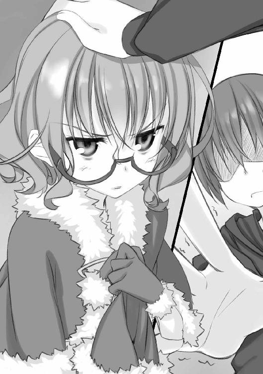
「ぅ............」
......なんだこれ？
子供の頃は父さんに撫でられたこともあるはずだし、東原先輩には時々弄ばれているが、こんな風に妙な感覚に戸惑うことはなかった。
わたしのぼさぼさ頭は髪がでたらめに錯綜しているせいか、頭頂の辺りを撫でられているはずなのに頭全体に名状し難いやわやわした感触が広がって、成田くんの手がとても大きく感じられて、自然と顔が熱くなる。
感触。
触られるのを感じる、時間。
実際どのくらい経ったのか解らないが、体感では一〇分ほどにも感じた屈辱の後、わたしは目を開いて睨み付けた。いい加減にしろというサインだったのだが、何を捉え違ったのか成田くんはわたしの視線に顔を赤くして、一向に手を止める気配がない。
くっ......どういうつもりだ。わたしの頭なんて触っても楽しくもないだろうに......それとも日頃の仕返しを期しているのか。陰険な。
悪夢のような拷問を止めてくれたのは、我らが佐々原さんだった。
「成田くん」
平板な、どんな緻密な鎧の隙間にも這い入って貫く薄刃のように平板な声だった。それは、何やら昂ぶっていた成田真一郎の顔を一瞬で蒼く染め、背筋を伸ばさせるに十分なものだった。
「は、はい！ ......なんでしょう、佐々原......さん？」
「お芝居の一環とはいえ、そう女子の髪の毛に触れ続けるのはいかがなものでしょう？」
「......良くないと思います......」
「でしたら」
「はい......」
「大概にして下さい」
「......ですよね」
成田くんの手は一瞬ならず未練がましく宙をさまよったものの、ようやくわたしの頭を解放してくれた。思わず漏れた安堵の息とともに、顔に集まっていた熱が霧散していく......助かった。
ある意味では人生史上に残る試練だったが、無事に乗り越えることができたようだ。わたしは感謝の意を込めて、佐々原さんのカップに丁寧に紅茶を注いだ。
さて、デザートにはまだ早いので、一度席に戻るか......
と、自分の席に座る前に、手を摑まれた。びくっとして見ると、佐々原さんだ。
なぜか、とてつもなく輝度の高い目をしていた。
「......何？」
「わたしの番ですよ？」
今度は誰も止めてくれなかったため、佐々原さんが存分に満足するまで頭を撫でられ続けた。
「そう、こんな風に場を和ませていたんですよ」
という尾関さんの太鼓判も、なんら救いにならない。
収穫と言えば、佐々原さんの手付きは意外とねちっこいと知れただけの、冬。
......ひょっとして、わたしはこの連中からイジメを受けているんだろうか。
そんな疑念の去来する夕食の時間も終わりに近付き、皆がデザートのフルーツを突いている。そんな時だった。
「これで、五年前にこのロッジにいた人たちの紹介と、その関係は説明できたわね」
食事の間中、わたしたちの「芝居」を楽しげに眺めていた千代さんが、不意に静かな声を出したのは。
そうして彼女は、ほっそりした白い指先を、食後の満ち足りた間抜け面をさらしていた成田くんに突き付け、宣告した。
「こんな状況で、あなたは殺されたのよ」
幕間．成田真一郎
野球界のホープであり千代さんたちの良き家族であった祖父江静一氏は、このロッジに滞在中あたら若い命を落としたという。
── ── ── ── ── ──
期待の投手、旅行中に事故死
25日朝、祖父江静一さん（20）の遺体が＊＊山中の釣り小屋で発見された。祖父江さんは親戚の所有する近辺のロッジに滞在中だったが、前日の夜から行方が分からなくなり、家族らが捜していた。所轄警察署の捜査により、死因は事故と断定されている。小屋に忘れ物を取りに行った際に吹雪で立ち往生し、その時に難に遭ったという。
祖父江さんは一昨年、夏の甲子園の決勝でラスト三イニングを九球で抑えるなど目覚ましい成績を収め、大学野球でも活躍していた。その才能にはプロ球団も注目しており、将来を嘱望された若者の早すぎる死であった。
── ── ── ── ── ──
千代さんの見せてくれたスクラップブックには、そんなような新聞記事が何枚も切り貼りされていた。どれもそれほど大きな記事ではないけど、ほとんどの全国紙と付近の地方紙に載ったようで、亡き静一さんへの注目度が偲ばれる。
スポーツ紙などいくつかの紙面ではさらに続報が載っていたが、お葬式の様子や関係者のコメントが載っているだけで──ちなみに、喪主は織乃さんだったようだが親族の言は載っていなかった──事件の詳報はどこも扱っていない。いっしょに収集されているネット上のニュースのハードコピーも似たような内容だった。
唯一、追悼記事の載った週刊誌に死因は失血性のショック死と書いてあるのが変わったところだろうか。
「......で、千代さんが言うには、それが殺人事件だと」
夕食後の一時。僕ら四人は、仙波と佐々原の部屋に集まっていた。このロッジで始まった奇妙な「お芝居」について、各自にわかには呑み込めないのですり合わせをしておこう、という趣旨だ。
「話を聞いてる時に思い出したけど、ニュースで見たことある気がする。将来を期待されてた投手が急死したとか......『九球』の人だとは知らなかったわ」
本来佐々原の使うベッドの上で膝を崩した会長が、スクラップブックに目を落としながら言う。と言っても、五年前なら会長も小学生だ。野球好きだったので記憶の隅にあったのだろうが、そう詳しくは知らないようだった。
「プロデビュー前だし、それほど大きなニュースにはならなかったみたいね」
「事故死で処理されたということですから」
そう大事にはならなかったのでしょう。と、話を継いだのは佐々原だ。会長とは対面、仙波のベッドに腰掛けている。夏のそれとは趣の違う部屋着でくつろぐ佐々原の姿は、制服姿は見慣れきったと思っていた僕にも十二分に新鮮だった。
着ている服が違うだけで、細かな仕草や体を動かした時のシルエットがまるで違うのだと、思う。
椅子に座ってそんな温いことを考えながらも、意識の半分は千代さんに聞かされた話に占有されている。僕は思い出し思い出し、他のみんなと認識がずれていないことを確かめるように口に出した。
「静一さんが亡くなったのは、このロッジに来てから三日目の夜......つまりクリスマスイブ。場所はここから一キロほどのところにある、川の側の釣り小屋。
当日は午後から酷い吹雪で、なんらかの理由で外出した静一さんは釣り小屋に籠もって......何かが起こって、死んだ」
聞かされた話やこの新聞記事だけじゃ大雑把すぎて、何をどう判断していいのか解らない。
「死亡したのが夜の内だったのは間違いないらしいけど、吹雪が強くなってロッジとの往来ができなくなる前か後かまでは判らない。
死因なんかは明日、詳しく教えてくれるって言ってたけど......」
「問題は、少なくとも千代さんは、わたしたちのどちらかが、あなたを殺すって考えてることね」
......会長がまた、怖いセリフをにこやかに言う。無論その意は、会長の演じている祖父江織乃さんか佐々原の演じる倉子さんのどちらかが静一さんを害した犯人であると、千代さんが思っているということだ。
それは、数十分前に食卓で千代さん自らが宣言したことだった。状況から見て容疑者になりうるのがその二人だけなのだそうだが、こともあろうに当の倉子さんが居る前で言うことだろうか。......もっとも、例年のことで慣れているのか、倉子さんは全く動じていなかったが。
千代さんが言うには、五年前の人物関係を再現した芝居をすることで、未だ究明されざる真相に辿り着けるのではないか、という考えらしい。『それには芝居よ。芝居を打って、王の本心をつかまえてみせる......ってね』と、何かの引用のようなことも言っていた。
そして......そんな、なんとコメントしていいのかも解りかねる猜疑の宴を、甲斐もないまま四年に渡って繰り返してきたという。しかも、すでに体調を取り戻して忙しく働いている織乃さんはともかく、倉子さんは毎年立ち会ってきたらしい。
実の妹が、客人を巻き込んで自分を殺人犯に仕立て上げようとする催しを、あのけぶったような目で淡々と眺め続けてきたのだ。
皮肉にも、そんな姉妹の異様な関係が、この件に「もしかしたら......」という薄暗さを持たせていた。
「もっとも......現時点のわたしたちの中じゃ、千代ちゃんが最右翼の容疑者になっちゃうけどね。主に動機の面で」
会長の言うところの「千代ちゃん」──仙波は、自分のベッドの上で伸びていた。旅の疲れもあるのだろうが、夕食の時の精神的疲労が限界を超えたらしく、あれだけ嫌そうにしていたサンタ服を着替えるでもなく、横になってぐったりしている。
ほっそりした足が、乱れた布団の上で無造作に投げ出されていた。......奇跡なほどに似合っている（個人的感想）サンタ服と相まって......少々、目に毒ではある。
「......くだらない」
その仙波が低い声で呟いたものだから、視界の隅に映るものに一抹の後ろめたさを覚えていた僕の心臓は一瞬停止した。やはり犯人か。
しかし仙波は、僕を咎めたわけではないようだった。
「当時の警察が事故死だと断定した話を、今になって高校生が蒸し返してどうにかなるわけないでしょうに」
眼鏡越しにうかがう目は、眠たげかつ明らかに不機嫌だったが、その理由は微妙に不明だった。千代さんに対してか、芝居に対してか、夕食の時の諸々に対してか、あるいはこの旅行を世話した東原さんに対してか。全てに掛かっているというのが一番ありそうか。
「でも仙波さん、この期に及んで降りるわけにもいきませんよ？」
なだめるように言って、佐々原が仙波の髪を撫でる──癖になったようだ──。仙波はやんわりと佐々原の手を除けながら、小さく舌打ちした。仙波にだって解ってる。
部屋に帰ってきた時、仙波の携帯電話にはこんな留守電メッセージが残っていた。
『やーやー仙波っちゃん御機嫌ですかね。今日のところは天気も穏やかで、良い雪山、良いロッジに来させてくれて有り難う先輩、実はずっと前から好きでした、なんて思うには及びませんよ。これはわたしから後輩への愛です。そして愛は無償、無償は愛なのです。
さて、例年通りならそろそろ「お芝居」が始まっている頃合いでしょう。
そう──千代ちゃん言うところの「天幕荘殺人事件」。
いや懐かしいですね。わたしはこの四年間、ずっと参加してました。ある時は「千代ちゃん」役で、ある時は「倉子さん」役で。
ンで、いろいろと試行錯誤はしたんですけどね、わたしたちはみんな葉村の姉妹や静一さんたちをよく知っているせいか、逆に遠慮が先に立って彼女らの状況を解決して上げることができませんでした。......いえ、中途半端に千代ちゃんを慮って努力した結果、彼女の「お芝居」への情熱を深めてしまったかも知れません。
でも、わたしは信じています。仙波っちゃんなら、わたしの愛する後輩なら、そのロッジでこんがらがってる時計の針を解きほぐして進めてくれると。
千代ちゃんたちを、助けて上げて下さい。
というわけでまぁ、子ひつじ諸氏共々よろしくお願いしますよ。会長さんたちにもよろしくお伝え下さいな。
ではでは、良い雪山を。
......あ、ちなみにわたしが「千代ちゃん」の役を演った時は、胸回りがきつくて例のサンタ服を着られな──』（仙波はその辺でスピーカーを切った）
......あのサンタ服の許容胸囲についてはさておき。
東原さんの頼み事を引き受けた僕らは、雪山も芝居の役も降りるわけにはいかない。あるいは千客万来御悩相談・迷わない子ひつじの会として、あるいは文芸部の後輩として。
それが、どんな結果を招いたとしても。
だからこそ、仙波明希は憂鬱に吐息する。
Part-1：竹田岬
お風呂で洗った後、軽くドライヤーをかけた髪がさっぱり乾く頃には、もうすっかり夜だった。
くせ毛が強いので、いつも手入れに時間がかかる。仙波さんのように無頓着でいたら、毛先が渦巻き放題になるだろう。
......いっそ、ばっさり切ろうかしら。
鋏に擬した指で毛先を梳きながら座るのは、今宵の寝床。普通に座るだけで埋まりそうになる、ふんわり無類なベッドの上だ。ロッジ二階の最奥の部屋で、入浴前に話し合っていた佐々原さんたちの部屋の隣に当たる。調度類は隣とほとんど同じで、違いと言えば控え壁の位置くらいだった。
さっきまでは旅の空にある昂ぶりと、千代さんの展開する奇妙な趣向に引き込まれて目が冴えていたのだが、あの幻想的なお風呂に浸かっている内に覚醒の砦もうっとりと溶け落ちた。幸い、今日のイベントはもうなく、パジャマ代わりのゆったりした服にも着替えている。このまま豊艶な枕に埋もれて眠ってしまえば天国の夢を見られそうではあった。
............問題があるとすれば、ただ一つ。
「あれ？ さっきはアンテナ二つ立ってたのに......消えてるや」
電波が不安定なのかなぁ？ などと、さっきから携帯電話に向かって埒もないことをぶつぶつ言ってる「弟」の存在である。野暮ったいにも程があると言うべきか、寝間着はジャージだった。さすがに学校の物ではなかったけど。
寝間着。
そう。真一郎は寝る。
この部屋で寝る。
無論、いつの間にかわたしとこのヘタレ童顔が閨を同じくする仲になったという話ではない──いやまぁ、むしろ年齢一桁の頃はすぐ隣で昼寝したりしてたけれど、それはさておき──これも、「芝居」の一環だった。
五年前の織乃さんと静一さんは、二人でこの部屋に泊まっていたという。仲の良い姉弟だったのだし、お姉さんが体調を崩していたのだから別に不思議なことはない。
その当時の二人の心理を追体験するべく、わたしたちは同室で過ごすことになったのだ。
夕方に部屋割りを聞いた時は、真一郎の部屋だけ指定されず、この部屋の向かいにある洗面所で着替えをした。その時点では、夏の山荘に続いて、また男一人で隔離されるのかと小さな憐れみと大きな笑いを催したものだが......
蓋を開けてみれば、これだ。
一応、千代さんも鬼ではなかった。食堂で同室の件を伝えられた時に、
『二人は姉弟の役だから同じ部屋ね。でも、どうしても恥ずかしいんだったら寝る時は別々でもいいけど』
とは、言ってくれた。
その言葉に甘えるのは簡単だった。わたしが請わなくても真一郎が別室を願っただろう。しかし、その時のわたしは少々意地悪な気分だったのだ。わたしだけ、仙波さんの毛玉のような頭を撫でられなかった無念と、仙波さんを撫でている時の真一郎のアホ面への苛つきで。だから、
『わたしは構いませんよ？ 元々、弟みたいなものですし。ただ、この子が思春期真っ盛りのセンシティヴなお年頃なんで、意識しちゃうかも知れませんけど』
などと言って生暖かい一瞥を真一郎にくれてやった。で、真一郎もよせばいいのに向きになって『ははははは............僕だって、変な気を起こすには会長の本性を知りすぎてますよ。学園の人喰い大統領』などとふざけたことを言って了承してしまったのだ。
佐々原さんは何か言いたそうだったが、咄嗟にどう反対していいか判らなかったらしく、あわあわしている内に話題が流れてしまった。
──かくして、この状況である。
わたしはまぁ、千代さんにも言った通り、真一郎の如きは犬っころが部屋にいるくらいにしか思わないのだが、向こうが妙に緊張している。普段はほとんど弄っていない携帯を、やたらパチパチ開閉しているのが端的にそれを表していた。
わたしは鼻で溜息を吐くと──自然と笑みが漏れた──、革張りの椅子に座って窓外を眺めている真一郎に声をかけた。
「さて真一郎くん。お姉さんの、海棠の花もかくやの湯上がり肌にどぎまぎするのは解るけど、そろそろこっちを向いてくれないかしら」
「ちがッ！ そんなんっ......じゃ、ない......ですよ」
あからさまな動揺を高校生相応には押し隠して、うちの「弟」はぎこちなくこちらへ向き直った。目は合わせてくれない。
そんなのじゃなかったら、どんなのなの？ とでも訊いていたぶりたい衝動を催したが、そんなことをしたらまたそっぽを向かれてしまうだろう。別のことを言った。
「無料で泊めてもらってる身としては、やっぱり言われた通りの『お芝居』をしなきゃいけないわけだけど、こういう時、姉弟ってどんな風にするのかしら？」
真一郎は「え？」と虚を衝かれた顔になった後、うぅんと真剣に考え始めた。例によって、人の頼み事にはどこまでも真面目な弟分だった。
そんな風にして考え込んでいる表情は子供の頃とほとんど変わらず、真一郎は所詮真一郎でしかないと再確認する。問題ない。ノープロブレムだ。
「......て言うか、この場合は普通の姉弟じゃないですよね。早い内に御両親を亡くして、お姉さんが弟さんを育てたような家庭だったわけですから」
「姉と言うより、優しく慈愛に満ちた保護者──素のわたしたちに近い関係ね」
「え？ 何かほざきましたか？」
「............ううん。弟さんが甲子園の英雄で勉強もできる紳士だとか、御覧の有り様とはあまりにもかけ離れてるなぁ、って思っただけよ」
ギス、ギス......と。
双方満面の笑みを張り付かせたわたしと真一郎の間の空間が、不吉に軋む音が聞こえるようだった。うふふふっ............やンのかコラ？
ややあって、真一郎は小さな咳払いをしてから続けた。
「でも、当時の織乃さんは体調を崩していて、むしろ弟さんの世話になっていた」
「そうね。どうにかして、その心持ちが知れれば......」
当時の祖父江織乃の役作りになるだろうか。
なんとなく、もし織乃さんが事件に関係しているなら、その辺のことが影響しているような気がする。仙波さんがやるように理屈で考えたのではなく、直感だけれど。
考えながら部屋の中を見回して、ふと、着替える時に出しっ放しにしていたマフラーが目に留まった。同時に、食事中に聞いた織乃さんの症状を思い出す。
羞明だとか、なんだとか──
「確か、限定的だけど目を痛めてたのよね？」
数分後。
「さて。まずは、お水をもらおうかしら」
わたしは、暗闇の中で上機嫌な声を出した。
電気を消したわけではない。仮に消したって、雪山の澄んだ夜気は蒼い月光を減じることなく部屋の中まで届けるだろう。単に、わたしがマフラーを目に巻いただけだ。割りときつく巻いたので上からも下からも光は入らず、目を開いても真っ暗闇だった。
自分の家なら暗がりの中でもある程度は勘で空間を把握できるものだが、今日初めて過ごす山荘の一室では全く見当が付かない。
「ちょっと大げさじゃないですか？ 織乃さんは別に、目が見えなくなったわけじゃないんですよ」
呆れ気味に言う真一郎の声も、予想とは違う方向から聞こえてくる。
「まぁねぇ。でも、この短期間で役になりきろうと思ったら、誇張の一つや二つはしないと」
──そう。体調を崩して、それまで庇護する側だった弟さんの世話になっていたという織乃さんの心境を体得するために、目隠しをして真一郎に身の回りの世話をさせてみるという趣向だ。
普通にぐうたらにして奉仕させればいいと思う向きもあるかも知れないが、それだと......普段とあんまり変わらなかったりするし。
その点、この目隠しは我ながら良いアイデアだった。柔らかなベッドに座っているので当面の危険はないし、逆に歩いたり遠くに手を伸ばそうとすると、本能的にブレーキがかかって力が出ない。完全な暗闇は、一七年を生きてきた人間世界を未知の塊に変え、どちらかと言うと度胸のある方だと思うわたしの胸にも臆病の渦を作る。
こうやって慣れない環境で目隠しをしていると、普段は何気なく過ごしている日常にも、目でしか知らないことというのは案外に多いものだなと、思う。
そんな中、真一郎が立ち上がってベッドサイドの水差しを取りに行く気配が、いやに大きく感じられる。そのくせ、部屋のどこにいるのか正確には把握できない。
ただ、自分ではない生き物が、自分ではない人格に基づいて活動しているのが空気を伝って感じられる......
「はい、水」
「ぇ？」
思いのほか近い距離からの声に、思わず肩をすくませる。いつの間に近付いたのだろう。年季が入っているとだけ感想を持ったカーペットだが、思った以上に貪欲に足音をむさぼる物らしい。
「会長？」
いぶかしげな声を出す真一郎に、はッとして我に返る。なんとなく、必要以上に強い声で答えていた。
「......気が利かないわね。見えてないんだから、差し出されただけじゃ受け取れないでしょ」
「あっ。ごめん」
真一郎は素直に謝ってきた。それから、さらに近付いてくる気配。今度ははっきりと判った。息の交う距離だから。
そして、右手に温かいものが触れる。自明にもかかわらず、真一郎の手だと気付くのに数秒の間が必要だった。
その理由は多分、子供の頃はほぼ毎日のようにつないだ（と言うか引っ張り回した）手で、その頃のぷにぷにと頼りない印象が先入観になっていたせいだろう。こんな、ごついという形容にはほど遠いものの、筋張って固い芯を感じさせる手は、知らない。
初めての、手だ。
その知らない手が、わたしの手を引っ張り上げて冷たいものを握らせる。水の入ったコップ。幸いにしてオーソドックスな円筒形だったので、見えなくても扱いには困らない。
──わたしは引っぺがすように真一郎の手を振り切ると、一息にそのコップをあおった。
ほとんど喉も素通しで体内に注ぎ込まれた冬の水は、むやみに熱くなっていた内臓を心地良く冷ましてお腹の底に落ち、たゆたった。良い水だ。この頃類を知らない良い水だ。
「っ？ え？ なに、そんなに喉が渇いてたの？」
面食らった声を頼りに適当にコップを突き返すと、怖ず怖ずとした手付きで回収された。
コップを片付けるためにか、真一郎の気配が離れていく。わたしはふぅ......と息を吐いて、うつむいた。
............これは、なんか、想像以上に危険かも知れない。
わたしはもう、自分の思いつきを後悔し始めていた。目隠しを解けば脱せる程度の状態異常なら危ないこともあるまいと始めた実験だったが、完全に予想外の危殆を宿していた。
それならさっさと目隠しを取ってしまえばいいのだが、開始してまだ数分しか経ってないのにギブアップというのは......いかにも格好悪い。姉としての沽券に関わる。
とにかく......後は一つ二つ無難な命令をこなさせて、それくらいで勘弁してやるか。
方針を決めると少しは気が楽になった。......よし、なるべく近付かれないで済むミッションをこしらえよう。
「次は......そうね。目覚まし時計をセットしておいて。朝食は八時半だから──八時でいいわ」
「はいはい......」
芝居の一環だからか、真一郎もいつになく従順だ。「どこだっけ？」などと呟いていることからして、目覚まし時計を探しているのだろう。部屋ごとに一つずつ目覚ましがあるという話を尾関さんから聞いた覚えがあるので、どこかにはあるはずだが。
あ、いや。見かけたな。確か、ヘッドボードの棚の上、奥の方に......
「あ。あった」
真一郎も見つけたようだ。ヘッドボードの奥にあるわけだから当然、ベッドの上に乗り出すことになる。と言っても、わたしはベッドの足側の方に座っているので、さっきみたいに近付くことはない。セーフ。
「七時五〇分にしとくからね。岬姉、意識が覚醒するのゆっくりだし」
「余計なお世話よ」
でも......時計。そうか、と思う。
今のわたしには、時計を探して合わせるという、日常生活には必須の行為すら満足にこなせない。真一郎に頼らなければならない。それは、真一郎が必須になるということだ。真一郎が生命の一部になるということだ。
織乃さんの場合は、体を壊したと言っても弟さんの介助があれば雪山まで旅行に来られる程度のことだったわけだし、そこまで思い詰めてはいなかったろう。しかし、ちょっと視界を奪われただけで、真一郎ごとき雑魚輩をこんなにも大きく意識せねばならない現状を思うと、急な不調が精神を揺さぶる力は大きいものと見なければならないだろう。
まして、それまで守り育ててきた相手と立場が逆転するとなれば。
と、そんなことを考えていると。
不意に、体が傾く。いや、座っているベッドのマットレスが、真一郎が乗ってきたせいで傾いたのだ。なまじ柔らかいばかりに、より重さの掛かる方に沈み込む。
目が見えていれば無意識に平衡感覚を補正してくれたのだろう。けれど、この、わたしだけの暗闇の中ではベッドの揺らぎがほとんど重力のように感じられて、その方へ体が引っ張り込まれそうになる。
実際よりずっと大きく感じられる真一郎の方へ、引き寄せられそうになる。
一応、わたしのベッドの上だということは意識しているのだろう。真一郎の動きは遠慮がちなものだった。でも、それでもやっぱり、女性の体なら自然にこなすしなやかな体重移動とは違って、いかにも角の取れない無骨な挙動が柔らかなマットレスを通じて伝わってくる。
だから、この、感覚。自分以外の、自分とは別の意志を持った、自分より大きな生き物が同じベッドの上を動き回る、感覚。
それが、車酔いに似た独特の違和感で以て心身を動揺させる。
むく犬に似た何かが、のしのしと胸の中を歩き回る。
......！
............！
......！
得体の知れない、鼓動を刻む内圧に抗いながら真一郎がカチャカチャと時計をセットするのを待つ、ほんの数十秒。
たったそれだけで、限界が来た。
わたしはやにわに立ち上がると、目に巻いたマフラーをむしり取った。急に明るくなって眩む目を細めながら頭を巡らせると、ベッドから下りかけた姿勢できょとんとしてこちらを見る真一郎と目が合った。
「え？ なに？ どうしたの......？」
目で見てしまうと、いつも通り間の抜けた顔ではあったけれど。
わたしはずかずかと近付いて真一郎の襟首を摑み上げると、笑顔だけは確保しながら言い渡した。
「役作りはもう十分──勘当よ」
そのままドアを開け、野良猫をつまみ出す要領で廊下へ放り出す。真一郎の上げる不理解の悲鳴と抗議を無視して、断固とドアを閉め切り、鍵を掛ける。
......外で理不尽だなんだと騒いでいるけれど......これは、女性と接する上であまりにデリカシーのない真一郎が悪い。そうに決まってる。一晩の反省を促すのが、年長者としての義務というものだろう。しつけだ。
総括しつつ改めてベッドに寝転がり、胸に手を当てる。不思議なほど乱れていた動悸は、その原因を放逐したことで早急に沈静化しつつあった。
目が照明に慣れる頃には、今の体験を冷静に分析する余裕が出てきた。
役作り......真一郎に言ったように、少しは織乃さんの気持ちに近付けただろうか。
それまでは平気でできていたことが突然の不調でできなくなり、そんな戸惑いの中で、守り育てていた存在に依存する。自分への戸惑いと失望、自信の喪失、主従の順逆、転倒、酩酊。そして焦燥。
わたし自身の新鮮な経験に照らしてみても、これは自活を尊ぶ人であるほど耐えがたい恥辱......いや、もっと端的に、素直に言うと、めちゃくちゃ恥ずかしい状況だ。
しかも、千代さんたちの話では静一さんには結婚を考える相手がいたということだし、それもあって恐らく、当時の織乃さんは相当の混乱状態であったろうと想像される。
ずっと自分といっしょにいて、愛着を持って育て上げ、今は依存の対象となった弟──それが、ぽっと出の誰かに奪われそうだから......
だから、なんだろう？ だから、どうするんだろう？
..................
考えてみたが、ぶり返してきた眠気にほだされた頭はまともな思考を結んでくれない。
わたしは素直に諦めた。どうせ、千代さんの持ってる情報は全開になっていないのだ。
後のことは、それを知ってから考えればいい。
今日はもう、眠ろう。目覚まし時計もセット済みだ。
そう思うと、ようやく自然な笑みが吐息に混じって、夜に流れた。
Part-2：佐々原三月
ロッジ『天幕荘』の壁は優しい木の匂いとなめらかな肌触りをたたえて、押し付けた耳をひんやりと心地良く迎えてくれました。
「............」
横顔に感じる視線は、自分のベッドの上で枕を背もたれ代わりに文庫本を読んでいる仙波さんのものでした。サンタ服はお風呂の時に着替えたので、意外と少女趣味な部屋着姿──御家族のお下がりなんだそうです──で、胡乱げな目をしてわたしを眺めています。
わたしはいったん顔を上げ、ぺこりと頭を下げました。
「お邪魔しています」
今、わたしは仙波さんのベッドの上で耳を壁に押し当てているのです。
仙波さんは謝辞には応じず、いつも通り眠たげな息を吐いて訊いてきました。
「聴こえる？」
「いえ、なかなか分厚い壁のようです」
これが、学校の部室棟のように薄い壁であれば、隣の部屋──成田くんと会長が過ごしている部屋の物音が聴こえるのですが。
「困りました。これでは有事の際、あまりに無防備です」
高校生の男女が同室など、いかに姉弟のお芝居中とはいえ尋常なことではありません。まして、いつもは会長の悪口ばかり言っているくせにちょっと際どくからかわれたくらいで挙動不審になってしまう成田くんなのです。ふとしたことでどんな間違いが起こるか、知れたものではありません。
たとえばそう──からかわれた仕返しに冗談半分で迫ったら思いのほか変な雰囲気になってしまったり、普通にマッサージしていたらふとした心の機微で変な気分を催してしまったり......そんな恐ろしい事態に発展しかねないのです。
これはどうしたものかと、三つ編みに結った髪をつまぐりながら投げ首していると、
「......そんなに気になるなら、ベッド代わるけど」
呆れたような仙波さんの提案です。会長たちの部屋は仙波さんのベッドがある側なので、確かに物音を察知するには便宜です。
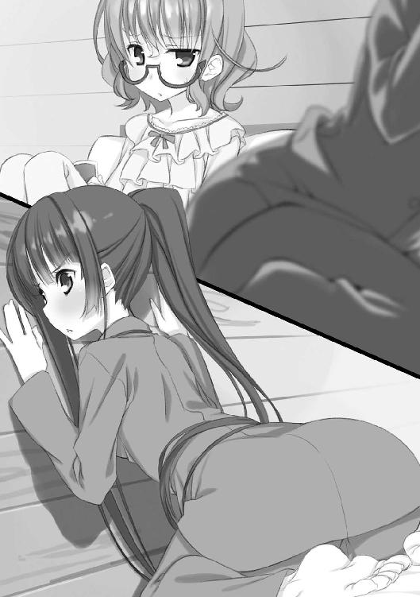
しかし、これはまた、脳力抜群な仙波さんらしからぬ発言でした。
わたしは壁から身を離すと、仙波さんの隣に座りました。ぅぇっと失礼な声を出して身を引く仙波さんに、いささか得意に諭します。
「それはいけません。さっき成田くんたちが部屋に来た時、こちらのベッドは仙波さんが使うと知れてしまっています」
「それが何か？」
「いつの間にかわたしと入れ替わっていたら......まるで、わたしが病的に隣の部屋の様子が気になって仕方ない変な人みたいでしょう？」
「............いや、『みたい』じゃないし」
心外な。
「わたしはただ、旅行中に不要な間違いが起こらぬよう心がけているだけなのです」
正義を訴えるわたしでしたが、仙波さんは意に介さず文庫本のページを繰っています。
わたしは、無視されたことよりも、彼女の落ち着き払った態度に何か......悔しいのに似たものを感じて、訊きました。
「......そう言う仙波さんは、気にならないんですか？」
「誰と誰が発情期になろうとなるまいと、わたしには関係ない」
即答でした。スイッチを入れたら回路が一瞬で機能したというような、即答でした。その口調は、脱力しながら断固という仙波さん独特の拒絶モードです。こんなふうに、平静な無関心を強烈にアピールする人をわたしは他に知りません。
ただ、だらりと投げ出された彼女の足の指がきゅっと縮んだのが、なんとなく目の端に引っ掛かりました。
しかし、仙波さんが許してもわたしには許容できないこともあるのです。綱紀粛正なのです。
「ともかく、わたしとしては──」
と、再び壁に張り付こうとしたその時、扉の開く音が聴こえました。この部屋ではありません、方向からして隣──会長たちの部屋の方です。
続いて、廊下から、何かを訴えるような成田くんの声がします。わたしは素早く身を起こしてスリッパに足を収めました。
「仙波さん」
「なに？」
「行ってみましょう」
「断る」
やっぱり即答する仙波さんの手を強引に引っ張って、わたしは廊下に出ました。
扉を開けて廊下に出ると、成田くんが隣の部屋の前で立ち尽くしていました。足下の常夜灯の頼りない明かりでも判るくらいの、途方に暮れた顔をしています。
「成田くん」
わたしの呼びかけに振り向いて──そしてわたしが仙波さんを引きずっているのに気付いてぎょっとして──、成田くんは曖昧に首を振りました。
「佐々原......と仙波か。参ったよ、なんかよく判らないけど、会長を怒らせちゃったみたいで入れてくれないんだ。鍵かかってるし」
わたしはうなずきました。
「なるほど。よく判りませんが、成田くんが悪さをしたので折檻を受けているんですね」
「ねぇ佐々原。よく判らないのにそんな決め付けをするのは、いわゆる名誉毀損って奴だと思うんだ」
根拠はわたしの経験なのですが──この人は自覚あったりなかったりで、人の心を裸足で踏み荒らすことがあります──、確かに有罪の証拠にはなりません。話を変えました。
「それじゃ、今晩はどうするんです？」
「......うん。どうしようか」
うめいて、成田くんは腕を組むポーズになりました。考え込んでいると言うより寒いのでしょう。廊下は部屋の中と違って暖房が効いていないので、寝支度ではかなり肌寒いのです。かく言うわたしも、首筋にぞわりとした冷気を感じて思わず背筋がすぼみます。
「......とりあえず、ここで立ち話してたら確実に風邪を引くと思うけど。主にわたしが」
いわんや自他共に認める虚弱体質の仙波さんはなおさらなのでしょう。わたしの腕の中でぶるぶると肩を震わせながらの指摘でした。
わたしは、連れ出してしまったお詫びにぎゅっと仙波さんを抱き締めると、ふと思い付いて提案しました。
「では、階段の側のホールに行きませんか。ソファやストーブがあったからゆっくり話せます」
彼方を見やれば、廊下の先から差し込む電灯の光。
そうして向かった二階のホールには、先客がいました。
このロッジの持ち主の娘さんでお芝居の仕掛け人、葉村千代さんです。
「あら、お散歩？」
温白色の電灯の下、どこもかしこも丸みを帯びた陰影をまとってソファに収まる彼女の姿は、どこかしら童話的な趣がありました。彼女の傍らで鈍いハム音をたたえた電気ストーブの発する温もりが、彼女の雰囲気に混ざり合っているせいでしょうか。
人の目を真っ直ぐに見て浮かべる笑顔に向かい合うと、顔がむず痒くなるような思いがします。
成田くんの状況が状況なのでとぼけたようなあいさつをして、わたしたちは勧められるままに座りました。
千代さんは大判でハードカバーの画集を眺めていたようでしたが、ためらいもなくバタンと閉じて、わたしたちに輝く笑顔を向けました。
「ちょうど、誰かとお話したいと思っていたところなの。お相手してくれる？」
わたしたちに否やはありません。言うまでもなく、ストーブの近くの暖かいポジションを確保するなり文庫本に没頭している仙波さんは除きますが。
「よろしくね。『静一さん』と、『倉子姉さん』と、『わたし』」
「僕じゃ役者の格が足りてないみたいですけどね......」
会長の仕打ちが地味に応えたのか、成田くんはひがみと冗談がない交ぜになったような声を出しました。
「まぁ、それはそうだけど」
自嘲に対して容赦なくうなずく千代さんです。落ち込んでいた成田くんはますます肩を落としました。仙波さんなどと違って、特に罵っているわけでもない無邪気な評だけにダメージは大きそうです。
「でも、ちょっと雰囲気は似てるところもあるのよ。特に、へいこらと『倉子姉さん』の機嫌を取っているところなんかは良く再現できてたわ」
この場合の「倉子姉さん」はわたしを指しているのでしょう。成田くんはうっそりとわたしを見ると、はぁっと力弱く息を横へ流しました。なんですか、失礼な。
千代さんは、ふとしっとりした目になってわたしを眺めると、初めて聞く神妙な声を出しました。
「静一さんは、本当に倉子姉さんが好きだったから」
........................
わたしは、反射的に成田くんの顔を見ました。
いえ、解っています。わたしは倉子さんではなく佐々原三月で、彼は祖父江静一さんではなくて成田くんなのですから、配役がどうあれ、わたしとこの人の関係には全く関わりがありません。
でも、同じように顔を上げた成田くんと目が合ってしまったら、そんな事実は途端に声を弱めて、胸の中で都合の良い錯覚が狼藉を働きます。成田くんも、視線がバッティングしたことに何かしらの動揺を得たように見えました。
そんな中。
「それじゃあ、静一さんを袖にしたのは倉子さんの方だったってこと？」
仙波さんの冷気めいた声に、一瞬で意識を引き戻されます。
そうでした。倉子さんと静一さんは一時は交際していて、後に別離したという話でした。仙波さんが自分から千代さんに話しかけるとは意外でしたが、さすがに気になったのでしょう。わたしも気になります。
今まで聞いた話では、静一さんは心身ともに完璧な好男子のイメージですが、倉子さんは何が気に入らなかったのでしょう。あるいは、どんな事情があって拒絶したのでしょう。
仮に、静一さんの死が事件なのだとしたら、重要な要素に思えます。
千代さんにもそれが解っているのでしょう。一転、不敵な顔になって答えてくれました。
「そうよ......うん、良い機会だから二人のことを話すわ。
倉子姉さんは子供の頃から変わった人で、親戚の子供たちの中でも浮いた存在だったわ。勉強が嫌いだって学校も休みがちで、お父さんを困らせて。家の庭中の虫を捕まえてスケッチしてみたり、その虫を部屋の中でぶちまけてお母さんを卒倒させたり......一度なんて、林間学校から抜け出して夜中に帰ってきちゃったことまであったっけ。
わたしはわたしで体が弱くて家にいることが多かったけど、毎日のように姉さんの奇行を聞かされた気がするわ」
なるほど......昔から、なかなかピーキーなお人だったようです。しかし聞く限りの奇行癖はわたしよりもむしろ成田くんに近いかも知れません。成田くんもこの秋、メイド服を着て学校中を走り回るという偉業を成し遂げました。
だから、千代さんが昔の倉子さんを語る口調に呆れつつも楽しげなトーンの混ざる理由は、よく理解できました。
「けど、静一さんとは不思議と仲が良かったの。
静一さんは近縁の中でも姉さんと......あと、もう一つ上の兄さんと歳が近かったから特別に親しくしてて。よく、家に引っ込みがちなわたしの話し相手に来てくれてたわ。わたしが小学生になる前だから......静一さんは中学生くらいね。
静一さんはその頃から文武両道の完璧な人で、わたしは野球部での活躍や生徒会長になった話なんかを、まるで竜退治の物語のように聞いてたわ。実際、子供のわたしから見たら、大人と同じくらい大きく強くて、でも子供の気持ちを解ってくれる優しい静一さんはヒーローだった。
当時、姉さんはもう絵を始めてて、家の物置を勝手に改造してアトリエもどきにしてて。静一さんはわたしへのお見舞いに来た後、そこに寄って姉さんと話していくのが通例だった......今思えば、わたしに会うのはオマケだったのかも知れないわね。
何度か、姉さんの作業場で二人が話してる姿を見たけど、あの通り無愛想な姉さんに、真面目な静一さんが必死に話しかけてる姿がなんだか可笑しくて......あの二人がくっついてくれれば面白いとは、思ったかな」
「それで......実際に、付き合うことになったんですよね？」
成田くんにうなずいて、でも、千代さんは顔を曇らせました。
「ええ......静一さんが、野球の練習の合間を縫って猛アタックしたって聞いてる。織乃さんも倉子姉さんのこと気に入ってて、すごく応援してたし。
そこまでは良かったんだけどね......静一さんが野球で忙しくなって、織乃姉さんが少しずつ疲れを溜めていく内に、自然とぎくしゃくしてきたみたいで......倉子姉さん、半端にしてるよりはって、すっぱりフッちゃったみたい。静一さんの話なんて聞かずに、一方的に......そう、自分で言ってたわ。
そういう......我を通すために人の気持ちを考えないところのある人なのよ」
......どうやら、千代さんの倉子さん不信はこの件に端を発しているようです。
「そんなだからあの人は、静一さんが死んだ時もほとんど感情らしい感情を見せなかった。昔はあんなに仲良くしてたのに......あっさりしたものだったわ。
あの後、前にも増して厭世的って言うか、人嫌いになってこのロッジに籠もるようになったけど、それくらいのものね」
千代さんはそこで息を吐き、元の根明な笑顔に戻りました。ただ、話す前より蒼ざめた顔色だけは、柔らかそうな面輪を霜が降りたようにひやりと染めていました。
そんな、雪間の不凋花を思わせるかんばせが、わたしに向けられます。わたしはその視線に、肩がぞわりとこわばりました。
「でも、わたしが静一さんの結婚のことで静一さんと織乃さんが喧嘩したみたいって話をした時は、珍しく悲しそうな顔をしたわよね。
──ねぇ、倉子姉さん？」
不意に、外を吹き抜けた風がひゅうと窓を揺らし、わたしは隣に居た成田くんの手を握り締めていました。
このお芝居におけるわたしの役柄は、なかなかに荷の重いもののようです。
結局、成田くんは広間のソファで毛布にくるまって寝ることになり──千代さんは別の部屋を用意すると言ったのですが、何やら酷く卑屈になった成田くんが「いえ、僕は建物の隅っこでカサカサしてるのがお似合いなんです......」と虚無的に言って辞退しました──、その晩は過ぎました。
わたしも、成田くんが部屋を出たことで落ち着いて眠ることができました。
仙波さんは、よほど疲れていたのか、部屋に帰るなり本の続きも読まずに眠りに落ちました。ふんわりした髪に縁取られた寝顔は、とても気持ちよさそうでした。
＊
明けて翌朝。昨晩と同じくみんな集まっての、朝食の席。
わたしは、ちょうど対面に座った倉子さんを観察しました。役作りをするには、この方について解らないことが多すぎます。目が合ったら困るので、ちら、ちらとですが。
昨日と同じくラフな服を着た倉子さんは、感情の読みづらいぼんやりとした目をして、細かく千切ったパンをスープに浸して口に運んでいます。パンを扱う手付きは繊細なのに、千切る大きさや形は一度ごとに全く違う──そこから見て取れるのは、芸術家肌のアナログな感性......でしょうか？
仙波さんのしそうな分析をしてみましたが、ちょっと穿ちすぎかも知れません。
とりあえず、わたしも真似をしてデタラメな形に千切ったパンを食べてみて──大きな欠片が喉に詰まりそうになりました。仙波さんが気付いて背中をさすってくれて、成田くんの差し出す水を飲んで事なきを得ましたが......やはり考え事をしながら食事をするものではありません。
そんなわたしたちのたわいないトラブルに顔を上げて、しかし倉子さんは全く関係のないことを訊いてきました。
「今日の予定は？」
「現場へ御案内するわ」
弾む声で答えたのは千代さん。昨夜の蒼い顔は何かの錯覚だったのか一晩で治ったのか、薄桃色に輝く、まぶしい笑顔でした。
倉子さんは、ほんの微かに眉をひそめました。
「外に出るのはいいけど、はしゃぎすぎてお客さんに迷惑をかけないようにね」
珍しく妹さんをたしなめる倉子さんでしたが、その淡々とした口調からはどの程度の関心があるのか知れません。ひょっとしたら、単に会話の終端となる定型のダイアローグを返しただけ──そんな風にも取れるくらいの、熱のない声でした。千代さんもそう思ったのか、返事もしません。
しかし、そこで会話が終わってしまうとわたしたちにはなんの「現場」に行くのか判りません。会長がパンにバターをなすりながら訊きました。
「現場、ですか？」
「ええ、そう。ここからちょっと行ったトコにある、釣り小屋。
静一さんの殺された、現場よ」
千代さんは嬉々として答えてくれましたが、わたしは喉に続いて胸が詰まりました。
部屋に戻って防寒着に着替え、わたしたち──ゲストの四人と千代さん──は「現場」へと出発しました。ロッジの前で立ちん坊の雪だるまが、出立するわたしたちの背中を見送っているようでした。
小屋の在る川辺というのは、ロッジから一キロほど、小さな森を抜けた向こうにあるのだそうで、そこまでは道もない雪原を歩くことになります。
天気はあいにくの薄曇り。来る時にも見ましたが、ロッジの周囲は見渡す限り一面の雪っ原で、多少曇っていても白雪の照り返しでまぶしいくらいです。わたしたちの街に降る雪とは質からして違うのか、踏みしめた時の感触がサクッ、サクッと何やら爽やかで湿っぽさを感じさせません。
道行きは、先頭を切って揚々と進む千代さんに成田くんが続き、その後に会長とわたし。後尾が仙波さんです。
「こう、縦に並んで歩くとレトロなロールプレイングゲームみたいね」
「え？ 千代さん、ゲームするんですか？」
「するわよ。学校行けなくて退屈な日とか、ベッドの中で一日中携帯ゲームやってたりするし。見つかるとお母さんに怒られるんだけどね。
けっこう強いのよ。パズルゲームの対戦とか」
「じゃあ、『ポータブルクリーチャー』は知ってますか？ 最近、あれがきっかけで小学生の男の子と友達になったんですけど」
「知ってる！ シリーズはほとんど買ってるわよ。最初の奴は静一さんにもらったの。クリスマスプレゼントで。静一さんは毎年プレゼントくれたんだけど、その年は買うのが大変だったって──」
............先行の成田くんは、上手い具合に千代さんに取り入って......もとい、コミュニケーションを取っています。あれも『静一さん』のお芝居の一環でしょうか。一見して受け身に見えるくせに、小さな頃から会長にしつけられていたせいか、女性に話しかけるのに如才がないと言うかなんと言うか......
「まったく......相変わらず、寂しそうな子を見ると飛びつくわね」
同じ光景を見ていたことは疑いありません。会長の苦笑混じりの呟きです。
確かに成田くんは小学生の頃から、家庭の事情に虐げられて世界を閉ざしていたクラスメートにドッジボールを仕掛けたり、周りの不理解に壊されそうな子供の粘土うさぎを守るため遠足中に逐電してみたり、節介の視界に見境なしといった人ではあります。でも。
「寂しい......ですか？ 千代さんが？」
とてもそうは見えません。
「あんなに明るくて、人懐っこいのに」
「人懐っこいのは人恋しいからで、人恋しいのは寂しがり屋だから......ってことも、ままあるわ。尾関さんに聞いたけど、千代さん、物心つく前は寝る前に家族に会えないだけで泣き出すような子だったんですって」
そう言って、会長は片目を閉じました。そんなものでしょうか。
「佐々原さんには解りにくいかもね。あなたみたいに可愛くて性格も穏やかなら、何もしなくても人が寄ってくるから」
「そんなことは......」
ないと思いますが、わたしの対人関係が基本的に受け身であることは事実です。
しかし、今、自分自身のことよりも先に頭に浮かんだのは、わたしがなりきらねばならない、あの人でした。
「......倉子さんがああなのは、『寂しくないから』なんでしょうか」
「さぁ......どうなの、仙波さん？」
「......なんでわたしに訊くんですか？」
もこもこしたスノーウェア──ややオーバーサイズのようです──に埋もれるようにして歩いてた仙波さんの不満げな声に、会長はにっこり笑って返しました。
「あら？ 仙波さんは寂しがりの方だった？」
仙波さんは頰をぴくりと揺らし、反射的に何か言い返そうとしたようでしたが、結局むっつりと口をつぐんで答えませんでした。仙波さんにとって、実害のない揶揄は自制レベル・無視の範囲内のようです。
「ほら。寂しからずばスルーを能くすといったところかしら。倉子さんも、千代さんに煽られても平気な顔をしてたでしょ？
それを孤独をものともしない強さと見なすか、それとも人間という圧力から逃げる弱さと見なすかは条件なり価値観によるだろうけど。
......倉子さんの場合は、どうなのかしらね？」
会長の言葉に、わたしは腑に落ちる......とまでは行かなくとも、お腹の中を理解の綿毛がふわふわ舞うくらいの感覚を得ました。
倉子さんは、ほとんどの時間を一人で過ごしているようです。妹さんには疎んじられ、尾関さんとは険悪ではないものの特に親しみを得ようともしない。行きずりのわたしたちは言わずもがなです。
そんな人が、一時期とはいえ交際した静一さんとは、どんな存在だったのでしょう。静一さんの死後、ますます人嫌いになったというのなら、倉子さんにとって決して軽い存在ではなかったはずです。
彼女を演じるには多分、それを理解しなければなりません。
「ところで」
大まかにですが指針のまとまったところで、わたしは改めて会長に声をかけました。
「なぁに？」
「昨夜はどうして、成田くんを叩き出したんですか？」
我ながらむやみに平たい声が出て、会長の背がぎッとこわばったようでした。ついでに、背後の仙波さんの足音がざりっと一段強いものになりました。
「えぇ、と......」
「はい」
「わたしはほら......寂しくない人、だからかな」
会長の声は言葉とは裏腹に少し寂しげなもので、わたしはそれ以上尋ねることができませんでした。
後で、今は千代さんと楽しげにゲーム談義をしている成田くんに吐かせるとしましょう。
森の中には道がありましたが、永年の往来の内に踏み固められた地面の両側を丸太で補強しただけといった頼りないものでした。道の表面もジャガイモのようにでこぼこしていて、ちょっと歩き易いとは言い難い有り様です。
しかし、この見通しの悪い中で行き先に迷わずに済むだけでも有り難くはありました。こう視界が悪いと、案内がなければ途方に暮れてしまって実際以上に疲労を感じてしまうでしょう。頭上は葉末が屋根になっているので、多少の雪なら埋もれることもなさそうです。
森を抜ければ一気に視界が開け、川の側の小屋へは一時間ほどで到着しました。
小屋と言ってもがっしりした造りで、木造ながら相当の雨風でもびくともしないような安定感があります。ただ、かなり古い建物のようで、設計はともかく壁や柱のくたびれ具合は少々不安でしょうか。
小屋の向こうを流れる川は浅く、穏やかな流れで、澄み切った水面に小魚の影がまばらに踊っていました。釣りの経験はありませんが、この川なら一日中釣り糸を垂れてもいいかと思える、そんな川です。
「ここが、静一さんの殺された現場よ」
千代さんに導かれるままに小屋の中に入ると、がらんとした部屋の中で、まず暖炉が目に付きました。その手前、左右にクッションの硬そうな長椅子が一対あって、最低限の休憩ができるようになっています。かんぬきの付いた扉は裏口でしょうか。
「ここはロッジが出来るより前に作られて別の人が使ってたんだけど、しっかりした建物で釣り小屋に最適だから、その人に交渉して売ってもらったの」
言われてみれば、家具さえ入れれば人が住めそうな雰囲気ではあります。
しかし今はすっかり釣り小屋か休憩小屋かという感じで長椅子の他に家具はなく、奥の方の扉のない部屋に、バケツなど釣りに使うのであろう道具が整理されて棚に並んでいました。
その棚の隅で蛇のように丸まっているロープに「県警備品」のテープが貼られているのが目に入り、ぎくりとします。当時の忘れ物なのだと思いますが、改めてここが「現場」なのだと意識してしまいます。
「殺された現場と言われてもね」
千代さんに続いて口を開いたのは、意外なことに仙波さんでした。さっさと長椅子に腰を落ち着けて、いつも通り眠たげな視線を千代さんに向けます。
「そもそもあなたは、何を根拠に祖父江静一氏が殺されたと言ってるの？」
あるいは挑発的な問いではありましたが、千代さんはむしろ意を得た顔で答えてくれます。
「いい質問だわ。
まず第一に、事件当日、静一さんがここに来た理由が判っていないの」
「？ よりによって吹雪の日に、誰にも理由を言わずに外出したんですか？」
ええそうよ、と成田くんの言葉にうなずいて、千代さんも長椅子に座りました。仙波さんの対面に当たります。
「正確には、誰も知らないうちに、ここに来ていたの。だからロッジを出た時間は吹雪の強まる前だったかも知れないけど、その前から天気は荒れ気味だったし吹雪も予報されてた。
ね？ 引っ掛かるでしょ？ この雪山で悪天候の中、意味もなくこんなところに来る理由はない。なのに、誰もその理由を知らないのよ」
「......当時は、その点は問題にならなかったの？」
「新聞には『小屋に忘れ物を取りに行って吹雪で立ち往生し』なんて書いてあったけど、きっちりした性格の静一さんは忘れ物なんて滅多にしなかったし、そもそも吹雪が来るのが判ってるのに外出するのはおかしいでしょ。なんなら、吹雪の行き過ぎる翌日の朝にでも取りに来ればよかったんだし。静一さんたちは、吹雪の翌々日までいるはずだったの」
それはその通りです。滞在期限がぎりぎりということならともかく、すぐ帰るわけでもないのに無理をして忘れ物を取りに行く必然はありません。明後日の午後には発たねばならない強行軍のわたしたちとは事情が違います。
わたしたちが納得している──仙波さんだけはほぼ無反応でしたが──のに満足して、千代さんは指を二本立てました。
「第二の疑問は、静一さんの死因になった怪我は、背中への刺し傷だったってこと。これはお葬式の準備の時、織乃姉さんが葬儀社の人に話してるのを聞いたわ。
この小屋の中で、どうやったら背中を刺せるって言うの？ ちょっと転んだくらいで致命傷になるとも思えないし」
言われて見回してみますが、確かに小屋の中にはちょっとしたことで刺さるような物は見当たりません。もっとも、これについては今はないというだけで、当時のことは解りませんが。
「静一さんの遺体が発見されたのは吹雪の翌朝。静一さんがどこにもいないのには気付いてたけど、吹雪のせいで捜しにも行けなかった尾関さんや倉子姉さんが、朝一番で小屋に来て遺体を見つけたの。
残念ながら、低血圧なわたしはその現場に立ち会えなかったし、その後は当分の間警察が封鎖してたから、どういう状況で静一さんが発見されたのかは知らない。しかも、封鎖が解けたすぐ後、尾関さんが中を整理しちゃって、今となっては当時の再現もできないわ」
「でも、それじゃ......」
どうしようもないでしょう、というような成田くんに、千代さんは一瞬言葉を濁して、でもすぐに首を左右に振りました。硬く脆い、頑な。
「いいえ。それはだって......それはだって、二つの疑問が晴らされてないもの。
静一さんがなんでこの小屋に来なきゃならなかったのか。
なんで背中に傷を負って死んだのか。
その謎が逆に、事件を解決する糸口になると思うの」
「逆に、そういう謎が残っているのに、どうして警察は事故で処理したのかしら？」
会長が頰に手を当てて考え込みます。子ひつじの会でよく見る仕草でした。
「それは多分、この部屋が密室だったからよ」
「密室？」
「ええ。姉さんたちが来た時、ここの扉の鍵も、裏口のかんぬきも内側からしっかりと掛かってたの。鍵は前日に静一さんが持ち出していたみたいで、尾関さんが金庫から予備を持ってきて開いたの。
今はその錠、スキー客が迷い込んだ時の避難所に使えるようにって撤去しちゃったけどね」
なるほど。鍵が失くなっていたから、朝になって真っ先にこの小屋へ捜しに来たということでしょうか。
「でも、裏口は単純なかんぬきだし、何かの仕掛けで外から閉めることもできると思う。警察は検証の手間を惜しんだのよ」
見ると、裏口のかんぬきは金属のレールに回転式のバーをはめるだけの物で、風雨には耐えられても防犯の精度は低そうです。
「それに加えて、静一さんを殺すような動機を持つ者が見つからなかったから。これは、当時警察に話を訊かれたって親戚から聞き出した情報よ」
そこでひとまず、千代さん手持ちの情報は出し終わったようでした。長くしゃべって疲れたのか、胸に手を当ててふぅと吐息しています。
わたしは、浮かんだ疑問をぶつけました。
「どうして、犯人を倉子さんか織乃さんのどちらかだと思ったんですか？」
「それは簡単。静一さんが、織乃姉さんにも内緒で密会する相手なんて姉さんしかいないし、そうでなければ織乃姉さん本人ということだから」
なるほど。しかし、何かが足りません──そう思った時、仙波さんがぽつりと口を開きました。
「動機......理由は？ なぜ祖父江静一は死ななきゃいけなかったの？」
それです。どれだけ物理的な状況が知れたところで、五年前の『天幕荘』でどのような殺意が醸成されたというのでしょうか。
「それが判らなければ、殺人劇のシナリオは書けず、芝居は成り立たないわよ」
千代さんは素直に認めました。そうして、でも、その道理を退けました。
「そうね。警察も、静一さんに命を狙われる理由がないからと、本格的な捜査をしなかったみたい。静一さんは殺されなきゃならないような恨みを買う人じゃないし、保険金とかも掛かってなかった。結婚のことで喧嘩していた織乃姉さんや、一度は付き合ってて別れた倉子姉さんは怪しいと言えば怪しいけど、決め手にはならない。
でも、だからこそ、お芝居よ。
お芝居に筋書きが必須だというのなら、それは同時に、お芝居が完成した瞬間には筋書きも出来上がってるってことでしょ。だから、あなたたちが五年前のわたしたちの関係と環境を写し取って、状況と心理を把握して振る舞えば、自然に誰が静一さんを刺したか、その筋書きが読めるようになっているはずよ」
そこに出口があるのなら必然的に入り口も存在するという論法です。......なんという曲芸思考。
「去年までの『お芝居』では、みんなわたしたちに気を遣ってか誰も静一さんを殺せなかったわ。失敗よ。
でも、今年は初対面の人たちの忌憚のない大胆な演技が期待できる」
千代さんはやおらに立ち上がると、優雅な仕草で成田くんに手を向け、言いました。
「さぁ、誰か、この人を刺したくなったかしら？」
え？ と、きょとんとする成田くんに視線を集めて、わたしと仙波さんと会長は同時に答えました。
「「「微妙なところ」です」」
「それは芝居の中の静一さんに対して、ってことだよね!?」
そして、妙にうろたえた成田くんの質問には、誰も答えませんでした。
＊
ロッジに戻り、昼食を終えての、午後。
わたしたち四人は、各自自由時間ということでいったん解散しました。
寒さに弱い仙波さんは当然のように部屋に残って読書に勤しみ、他の三人は周辺の散策です。成田くんは森の方へ、会長はさっきの川の上流に在ると聞いた小さな滝を見に行きました。
かく言うわたし、佐々原三月はと言えば、ロッジのすぐ前で雪だるまと並んで景色を眺めています。
ポーチにある小さな椅子に座って、曇天の空、見渡す限り雪白の地面、それらの境界を成す地平を埋める黒ずんだ森──「冬」を画題にした絵画のようなモノトーンの世界を、ぼぅっと見ています。
この色味は自然、夏に訪れた奇妙な洋館を想起させます。白と黒。生と死。葬式の色。
あの館では生死の境が曖昧になった人のことについて考えました。ここでは、五年も前に命を失った人のことを考えています。
祖父江静一さんの死の真相。
公には事故死で決着していて、でも千代さんはそうではないと信じていて。
棺を蓋いて事定まる、と言いますが、これでは棺の中がパニックです。千代さんの疑惑を認めるにせよ否定するにせよ、亡き静一さんの静かな冥福のためにも、真相を解明したいとは思うのですが......
それには、もっと当時のことを知らなければなりません。千代さん視点での話はあらかた聞けたので、次は──
「あら」
思い浮かべていたその人の声が出し抜けに聞こえて、わたしはびくんと肩をすくめました。
考え事をしていたから、ロッジのドアが開く音に気付かなかったようです。すぐ隣に、倉子さんが立っていました。
伸ばした前髪で目の色が影になり、口数も少ないせいで感情の読めない、千代さんのお姉さん。わたしは、弾かれたように立ち上がってあいさつしました。
「あ......こんにちは」
「はい、こんにちは」
淡白ではあるけれど冷淡ではない。そんな声でした。わたしが心がけて出すようにしている声の種類に似ていると、思いました。どうとも思っていないように、どうとでも思ってもらえるように。
しかし、そう感じてしまったから、続く言葉が出ません。どういう種類の会話が望まれているのか、あくまで相手の主導に合わせるのがわたしの話し方だから。こんな時、会長がいてくれれば適宜の話題を振ってくれますし、成田くんなら適当かどうかは度外視してとにかく話を進めてくれます。
そのどちらもができないわたしは我ながら挙動不審に固まっていましたが、倉子さんの視線はすでにわたしにはありませんでした。ポーチの手すりの上に乗った、うさぎを見ています。
本物のうさぎではありません。わたしがその辺の雪を集めて造形した、雪うさぎです。
「これはあなたが？」
「あ、はい。......すみません、勝手に置いてしまって」
よくある、楕円形に丸めた雪に葉っぱの耳を付けた物ではなく、割りと写実的な形に作ってしまったので、遠目には不気味かも知れません。いえ、多分、夜に見るとかなり恐いです。十数分かけてがっちり固めた力作ですが、すぐに撤去した方が良いでしょう。
しかし倉子さんは、うさぎの頭を撫でながら、微かに笑ったようでした。
「よく出来ていると思う。元気に跳びそうなうさぎね」
「ぁ......ありがとう、ございます」
お愛想を言う人という印象がなかったので、驚いて返礼の言葉がかすれてしまいました。
「見本もなくこれを造形できるというのは、よほどのこだわり......いえ、想いの込もった物なんでしょうね。ディティールに感情がうねってる。
わたしは好きよ。これ」
これが芸術家の目というものなのでしょうか。このうさぎを褒められるのは二度目のことで、倉子さんの言う通り、一度目はわたしにとって忘れられない思い出です。
「ありがとう、ございます......」
わたしは馬鹿みたいに繰り返して、ちょっとだけ涙が出そうになりました。わたしの場合、人に褒められることはあっても、それは相手に求められたことをこなした時がほとんどで、自分だけの欲求を形にして評価されることは滅多にありません。
だから、倉子さんのくれた久しぶりの感覚が、沁みました。
「佐々原さん、だっけ？ 良い物を見せてくれてありがとう。
それじゃあね」
わたしが上擦るような光栄に浸っている間に、倉子さんは歩き出しています。その、鶴のようにほっそりとしなやかな背中は、ロッジの隣の小屋──尾関さんがアトリエだと言っていた建物に向かっていました。
「あ......あのっ！」
気付くと、自分でも驚くような大きな声を出していました。周囲にまとわった残響にわたし自身が戸惑うくらいの声だったので、倉子さんも呆気にとられた顔で振り向いています。
気おくれ。喉の引きつり。でも、止まりません。
今なら、思い切れました。
「アトリエ、見せていただいてもいいですか？」
「......アトリエだとか、そんな大層な物じゃないわよ」
そう言う倉子さんに連れられて入った小屋の中は、打ちっ放しの床の上にキャンバスとそれを架したイーゼル、絵筆などの画具、それにベッドにもなりそうなソファの置かれた、空間の多い割りに雑然とした部屋でした。今は火の入っていない古そうな電気ストーブの上に、簡素なコーヒーポットが載っています。ツンと鼻を突く臭いは絵の具のものでしょうか。
静寂と冷気の張り詰めた、灰色の空間。
そんな、世界から一層沈んだような部屋の中で自然と目が行ってしまうのは、剝き出しになったキャンバスです。
不思議な絵が描かれていました。
「この絵は......？」
「なんに見える？」
ストーブに電気を入れながら、倉子さんは気のない声で問い返してきます。明らかに正解を期待していない様子です。
様々な色彩が何重にも渦を巻いて、乱流を成した......具体的な写生元のない抽象画に見えます。ただ。
「この、真ん中に集まってる白い線が主題に見えます」
暖色の部分でも彩度が低くて、全体的に薄暗い画面の中、そこだけは皓々と光り輝いて見えました。強烈なまでに。
「何を表しているのかは判りませんが......」
「そう」
倉子さんはヒーターの上からポットを取り上げて中身をコップに注ぐと、正解とも不正解とも言わずソファに腰を下ろしました。代わりに「どうぞ」と、わたしにキャンバスの前の椅子を勧めてくれます。
わたしは言われるままに綿の潰れた椅子に座ろうとして、ふと目をやった作業机の上に、ある物を発見しました。それは名刺で、それ自体は特に変哲のない物でしたが、問題は書いてあった名前です。知っている、同時に意外な名前でした。
「あ、この人......」
「ああ、それ。ちょっと前に、知り合いの画廊に置いてもらってた絵が売れてね。その時にもらった名刺よ。なんか波長が合うものを感じただとかで、一度だけ会ったの。
変な名前よね」
確かに、これだけ特殊な名前は二人といないでしょう。お金持ちですし、ギャラリーに出入りするのも不思議ではありません。しかしまた奇遇です。
そんな、人の縁の奇異に感心しきりのわたしを眺めながら、倉子さんはいかにも唐突なことを言い出しました。
「何か訊きたいことがあるの？」
ぇ......と、自分でも忘れかけていた図星にえぐり込まれて、言葉に詰まります。そう、わたしは千代さんのお芝居を完成させるために、この人にお話を聞こうと思っていたのです。しかしまさか、こちらに無関心に見えた倉子さんの方から切り出されるとは思っていませんでした。
「千代のお遊びに付き合ってるんでしょう？ お芝居で犯人捜し。だったら、容疑者であるわたしの話を聞かないとね」
言葉の内容はからかいのようでしたが、感情の見えない声の響きに、何か底のあるような気がして、にわかに背を寒くしました。この薄暗いアトリエに二人きりであることも急に特別な意味を持って意識されます。
わたしがまごついている間に、倉子さんはぬるそうなコーヒーをすすって言葉を続けました。問わず語りの、自分語り。
「わたしは、そうね......黒い羊ね」
「黒い羊、ですか？」
「ええ。『黒い羊の仮説』って知ってる？
例えば、清廉潔白で誰からも尊敬される優等生の兄がいたとして、その弟がどうしようもない放蕩者でしょっちゅう周りに迷惑を掛けている。それなのに親は弟を強く叱責せず、注意することはあってもおおむね自由にさせてしまう──
その場合の兄が白い羊で、弟が黒い羊」
「はぁ......」
「要はね、家庭や共同体の中に極端に潔白な人がいたとしたら、その同格、隣に望まれるのは同じ程度に汚れた人だっていう心理よ。なぜなら、人間には善い面と悪い面があるのが当たり前だから、現状が善い面に偏ってると感じた人は、身近な他人に悪い面を補塡してもらおうと本能的に考える。その人の悪事に寛容になったり、場合によっては悪へ誘導してしまう。そんな仮説」
......解る気は、します。自分に足りないものを、近くにいる誰かに求めてしまう。自分にないものを持っている人に、自分が持っているものを持っていない人に、惹かれてしまう。それは、痛いほど、解ります。
「家の場合、兄が文句の付けようのない優等生でね。心身ともに健康で商才もあって、まぁ家業安泰ってところ。だから、わたしは出涸らしの劣等生でもよかった......いえ、あまりにも手のかからない兄に満足を通り越して飽和していた両親にとってみれば、ちょっとくらい問題児であった方が......楽しかったのかも知れない。
それで......なのかどうか、わたしは子供の頃から、兄のやっていたのとは別方向の、およそ実用的でない種類の趣味や習い事をして育った。その中で一番しっくりきたのが、絵よ」
と、目で指すのはわたしの目の前のキャンバスです。
「と言っても、昔からそんな作風だったから、周りの誰も理解してはくれなかった。元から、自分の勘所が人とずれてるというのは解ってたから、別にショックでもなかったけどね。
だから、十代の頃のわたしがやってたのは、他人から見ればひたすら画板に絵の具を撒き散らすだけの酔狂だった。そんな変人の道楽が許されてたのは、わたしが気楽な黒羊だったからでしょう」
家族という単位での均衡を得るため、奇行を容れられたという倉子さん。確かに気楽な立場と言えるかも知れません。でも、それは同時に、白黒に分けた場合の白い方の期待をかけられないということでもあります。望むと望まざるとにかかわらず、黒の世界へ弾き出されるということでもあります。
それは、寂しいことでもあるのではないのでしょうか？
コップの中を見つめながら淡々と語る倉子さんの表情からは、何もうかがえません。
「そういう意味じゃ、千代は灰色の羊──子供らしい子供だったのかも知れない。気立ての良い素直な子で、でも病気がちで手がかかって。
そう。良い具合に『カワイソウな子』なのよ」
意地悪な言葉でした。でも、感情の果汁が干からびた、味のない言葉でもありました。
「年の割りに世慣れたところのある史絵ちゃんなんかも、千代のことになると妙に過保護になる。親戚の子供たちの間じゃ、千代は塔の上のお姫様よ。
まして父や母は、あの子を可愛がって、守って、いっそ閉じ込めた。今でこそ最低限は学校に行けてるけど、小学校に入る前なんかは特に極端で、運動不足の家猫よりも外出時間の少ない子だったわ。
だからあの子は、年中退屈をして家の中を歩き回ってた。うろうろ、うろうろと。行き着く先は決まって、わたしが占拠してた離れ家で、そこで筆を振り回すわたしを飽きもせず眺めていた。ま、動物園でキリンのジョギングを見てる気分だったんでしょうね」
「でも、千代さんは倉子さんの絵を奇麗だって言ってましたけど」
倉子さんは、吐息とともに肩をすくめました。
「どうだかね......千代は、とにかく人の影響を受け易い子だから。静一がよく解ってもないくせにわたしの絵をべた褒めしてたから、それで良いものだと思い込んでるのかも知れない」
「そんな......」
「そういう子なのよ。いつかなんて、家で飼ってた猫が食あたりで半死半生になったのを見て、自分もげーげー吐いて点滴生活になったんだから」
......マイペースに見える千代さんですが、見た目よりもずっと神経質で思い込みの強いお嬢さんのようです。だからこそ、あったかどうかも判らない殺人事件の真相を、四年も追い続けてきたのでしょうか。
「ああ......そう言えば、その猫の絵もあるわよ」
倉子さんの視線を追うと、柱の一つにスケッチ画が貼り付けてあります。コンテで描いた物らしく単色ですが、べんべんと横になって眠っている猫の姿が鮮やかに写し取られていました。
「ともかく、兄のネガで、誰にも期待されず、それを気楽に享受して生きている女。それがわたしよ。
何か質問は？」
出し抜けに問われて、わたしは内ポケットから取り出しかけていたメモ帳を取り落としそうになりました。
頭の中にあった質問はいささか際どいもので、だから普段ならこのまま黙ってしまうところだと思います。でも、隣に成田くんや会長のいない状況が、逆に肝を据わらせてくれました。
「......では、祖父江静一さんとの御関係について聞かせていただいてよろしいですか」
次の瞬間、驚くほど近くから甲高い鳴き声がして、窓外を飛び過ぎた鳥の影が巨大な黒い羽ばたきとなって部屋を揺らしました。
「幼馴染みよ」
その前と後で、倉子さんの様子に特段の変わりはありません。淡々と、端的な答えを返してくれました。ただ、わたしの脚が震えて手にしたメモ帳を折り曲げそうになっていただけです。心臓に痛みの走る、緊張。
「子供の頃から、親戚の集まりがある度に妙にまとわり付いてきてね。わたしは小さな時から変わり者で通っていて、一人でいることが多かったから、自然と静一もいっしょに孤立することになったけどあんまり気にしてないようだった。
小さな時の静一は腕白坊主って感じで、わたしは別に興味なかったけど、子供だったから遊び相手は欲しくて。適当に構ってやってたわ。
このロッジでも、来る度にいっしょに遊んだ。誰も知らない部屋を秘密基地なんて呼んでね。その中に潜って、懐中電灯の明かりの中で落書きして一日潰したり......思えば、あの頃はお互い普通の子供だったわね」
凪いだように感情の波紋のうかがえない倉子さんですが、その話をする間は、ほんの少し柔らかく目を細めているように見えました。
「......それが、高校生になって交際することになったんですよね？」
「長続きはしなかった」
わたしは黙って、続きを待ちました。付き合うに至った過程や、別れることになった詳しい経緯をこそ訊きたいところです。
しかし。
「で、別れてから一年くらいして、静一は死んだ」
話が一気に飛びました。いえ、もちろんその件が本丸なのですが、こうっと......いろいろ参考になりそうなシークエンスが聞けなかったと言いますか。
「......悲しくなかったと言えば噓になるかしらね。わたしは確かに喪失を味わった。
でも、それでおしまい。
わたしと静一の関係は、そう始まってそう終わった。以上よ」
しかし、冷然と話を閉じる倉子さんからは、それ以上の話が聞けるとは思えません。そして、それ以前にわたしの精神力がそろそろ限界です。昨日会ったばかりの年上の女性と二人きりでかれこれ十数分。慣れないシチュエーションに、ヒーターが効いてきたのと相まって首筋に汗がにじんできています。
しかし、一つだけ、これだけは訊いておかねばならないことがあります。
わたしはメモ帳を──あの人の困った行いの数々を記したメモを──ぎゅっと握り締めると、勇を鼓して口を開きました。くぁっ！ という気合いで、ぼそぼそと。
「静一さんは、どうやって......死んだんですか？ 今言われている通りに事故だったんでしょうか。それとも、千代さんが信じるように殺された可能性があるんでしょうか」
倉子さんはちょっと反応しませんでした。ただ、無視されたわけではないようで、視線を天井の辺りにさまよわせていました。
そうして、さまよったまま、定まらないまま、葉村倉子さんの言葉ががらんとしたアトリエに浮き漂いました。
「人が死ぬのはなんでだと思う？」
なんと言うか、莫大な質問でした。
「ぇ......それは、場合によるのではないでしょうか？」
「いえ。違うわね。
殺されようと、事故だろうと、病気だろうと、寿命だろうと──人の死ぬ理由はただの一つよ」
不思議なことを言い切って、倉子さんは静かに立ち上がりました。
そのまま窓の前までゆっくりと歩く倉子さん。彼女の長い影が、椅子に座ったわたしをすっぽりと包み込んで。
わたしは、暗転に溺れたように、問い返しました。
「それは......なんでしょう？」
「誰かに死を願われたから、よ。
そうでなければならない」
ならない、と来ました。わたしには恐いような言い分に聞こえたのですが、でも、倉子さんはいっそ冷たい怒りすら感じさせる言葉で死を語ります。
「いわれもなく病気になったり事故に遭ったりする──そんなのは理不尽だわ。
ある日突然、なんの前触れも抗いようもなく死が訪れるなんて、冗談じゃない。ナンセンスとすら思う。後悔もできない死なんてくそ喰らえよ。悔恨こそが生きた証でしょう」
その低調でありながらよく通る声音は、暗がりに唸る梟を思わせました。古来、「梟」の字は荒々しく残忍な人を表すのに使ったそうです──梟悪、梟雄。
「でも、誰かに願われて死ぬのなら、まだ納得できる。自分が人に恨まれて死んだんだと思えれば......それを避けられなかった自業自得だと受け容れられる。運命なんてわけの解らないものに死を強いられるよりかは、人間の意志にすり潰される方がずっと道理に適っている。
故あって死ぬ......故あって死ぬのよ、人間は。
だから、静一が死んだ理由も、死を願われたから──殺されたから。
そういうことよ」
......初めて聞く、独特な死生観でした。災難による死を徹底的に否定して、殺意にまつわる死にだけ尊厳を見出す。わたしの知る限り、宗教やそれに準じる思想は死を自然の営みと見出して悟るものが多いように思いますが、これは真逆です。
人殺しに救いを求める。不抜の殺意信仰。
それは歪んでいるようでいて真っ直ぐなようでもあり、倉子さんという一見冷め切った女性の秘められた激しさの表われに思えました。
「......でも、静一さんの殺された小屋は、密室だったと聞きましたが」
人の意志が入り込む隙間があるのでしょうか。しかし倉子さんはあっさり答えました。
「あの小屋の裏口は単純なスイング式のかんぬきよ。いくらでも細工はできる」
「何か、それらしい痕跡があったんですか？」
「いいえ。でも、周りには文字通り山ほど雪があって道具には事欠かないし、そもそも証人も少ない。
例えば、かんぬきを斜めに引き上げて、雪の塊を挟み込んで落ちないようにして外に出る。その後、部屋の熱で雪が溶ければかんぬきは落ちて簡単に密室は完成する。溶けた雪も朝には乾いて証拠は消滅。
それか、小屋へ様子を見に行ったわたしが、掛かってもいない鍵を開けたふりをすれば、それだけで他人には証明不可能な偽の密室が出来上がる。
──子供の悪戯レベルのことで偽装できる施錠は、密室とは言わない。
だから、あの夜ロッジに居た人間なら誰もが......いえ、前日にはしゃぎすぎて寝込んでいた千代以外の誰でもが、静一を油断させて背後から刺すことができた」
......話を聞けば聞くほど、この一件は自由度の高い環境下で発生しています。推理小説のように、トリックの複雑さから逆算して犯人を求めるということができません。事故か他殺かすら曖昧で、そこに倉子さんの信念が絡んできて......なんだか、頭がぐるぐるして来ました。
この状況はなんなのでしょう？ 静一さんの死が殺人事件であったと証明したい千代さんがいて、千代さんとは別の理由で人の意志による死を推す倉子さんがいて。そうしてこの姉妹は五年もの間、その仮構の山荘で愛すべき家族の命日を過ごしているのです。
──憑かれている。
そんな大仰で失礼な感想を抱いてしまい自己嫌悪に陥るとともに、一体自分にこの人を演じられるのかという不安が声を震わせました。
「だとしたら......誰が、静一さんの死を望んだんでしょう？」
わたしの発した、最後の問い。
窓枠に背を預け、逆光に黒く染まった倉子さんは、羽を閉じた鴉のように見えました。
「わたし──と言ったら、あなたはどう演じるの？
興味深いわね」
＊
冬の夕日はあっと言う間に山の端へ消えて。
「ふぅん。倉子さんがそんなことをねぇ」
わたしの隣で洗い終えた髪をお湯ですすぎながら、会長が言いました。
「無常よりは殺伐が本意か。案外に意志的な人なのね」
夕食後しばらくして、わたしたちはお風呂に入っていました。
このロッジのお風呂は一階から渡り廊下でつながった温泉です。丸みのある石を組み合わせた湯船の真上には屋根があり、外からのぞけないように柵で囲われてはいますが、斜めに見上げれば鮮やかな星空を望める露天風呂でした。
湯船の外では温泉の湯気と外の夜気が拮抗してうっすらと靄を結び、肌に触れると重さのない絹の膜のようです。普段は服に覆われている全身で感じるせいもあって、ちょっとした異世界の風趣。
温泉そのものも魅力的ですが、雲間からのぞく月華が雪に映って蒼い光を立ち上らせる外の空気も趣深く、わたしは洗い場の木椅子に座って、肌へ沁みるような冷気に心地よく身を任せていました。
旅館などと違って大人数での使用は想定されていないらしく、広さで言えば以前に行った万鏡館の物より狭いくらいですが、それでも女子四人で入るには十分なスペースがありました。
「仙波ちゃんはどう思う？ 人は、なぜ、死ぬのか」
会長が肩越しに問いかけた仙波さんは、ちょっと反応しませんでした。無視したのか、それともとろみを帯びた温泉に浸かって湯面の揺らぎにふわふわとおとがいを撫でられる快感に耽っているのか。眼鏡のない両目がいつにも増して眠たげに閉じられているのを見るに、後者の可能性が高そうでしょうか。
しかしどちらにしても、千代さんの放った水鉄砲が顔を直撃した瞬間に覚醒したようでした。
「ぷゃっ？ ............なんのつもり？」
仙波さんにじろりと睨み付けられても、千代さんは手で作った水鉄砲を揉み手するように空撃ちして無邪気に微笑んでいます。蜂蜜を練り込んだ蠟細工のような指でした。
わたしと仙波さんがお風呂に入ろうと廊下に出たところで会長に出くわし、さらにホールで行き会った千代さんの「せっかくだからみんなで入りましょう」という提案に従った結果の四人風呂です。
「呼ばれてるのに返事をしないのはいけないんだよ？」
正論に舌打ちを返すのは少々お俠ですよ仙波さん。
その頃には会長とわたしも湯船の縁に腰掛けて、仙波さんを見下ろしています。
「で、どうなの仙波さん。思うところを述べよ」
「......さぁ。生きるとか死ぬとか、あんまり考えませんから」
それが普通の高校生でしょう。しかし会長は、いとも大仰に驚いてみせて、
「えっ!? 年がら年中お葬式みたいな顔をしているのに!?」
仙波さんの舌打ちは、聞く度に少しずつ鋭くなっている気がします。それこそ、急所に刺されば人を殺せそうなくらいです。
「......倉子姉さんは、昔からそんな感じよ」
仙波さんをフォローしたわけでもないでしょうが、千代さんが丸っこい岩にもたれかかりながら言います。元が色白なせいか、湯面から浮き出した背中の上気した桃色が鮮やかでした。
「死ぬとか死なないとか、変に大げさに話すんだから。なんて言ったっけ......学校の友達が言ってた──中二病っていうの？」
ちょっと違う気もしますが。しかしこの件については突っ込んで考えても仕方ないようです。頭の片隅に置いておきましょう。
わたしたちも湯船に身を浸し、わたしが仙波さんの隣に陣取り──なぜか微妙に身を引かれました、なんでですか？──、会長が「ふぃ～っ」と魂が頭頂から抜け出すような声を出した頃。
おもむろに向き直った千代さんが、湯の中で正座して訊いてきました。
「みんな、役柄はつかめた？」
「お芝居」の経過確認のようです。
事情を聞いてから丸一日。倉子さんと二人で話せたりして、昨日よりは彼女の人となりが解った気がします。見ると、会長も何から話したものかという顔をしています。何か得たものがあるようでした。
「どう？ 誰か、『静一さん』を殺したくなった？」
とんでもない質問ですが、それを検証するためのお芝居で、わたしたちのロッジ滞在です。
「殺したいかどうかはともかく──」
先に答えたのは会長です。
「織乃さんにとって、当時の状況は一つの試練だったと思います」
「試練？」
「そう。
織乃さんは、早すぎる御両親の他界で、若くして静一さんのお母さん代わりになった。それは、少々不格好ではあるけれど精神的、社会的な成長です。女の子がお母さんになるのは普通のことだから。
ところが織乃さんは、ちょっとした不調から突然、世話する側から世話される側になってしまった」
「たった数年の内に、子供から親へ、親から子供になってしまったんですね」
わたしの確認にうなずきを返して、会長は続けます。
「しかも自分の『子供』だった相手の子供になってしまった。それだけでも自分の存在理由が混乱するでしょうに、そんな時期に静一さんが結婚を考えているなんて聞かされたわけよ。彼女が振り回されてきた弟さんという軸が、すっぽんと抜けてしまった。
アイデンティティ喪失どころか、アイデンティティを洗濯機にかけられて真っ白にされたみたいな状態ね。
わたしもちょっと試してみたけど、実際問題、目の回るような体験よ。静一さんの結婚について喧嘩になったというのも解るわね」
試した......とあっさり言う会長ですが、この一晩で一体どんなことを試したのでしょう。昨晩成田くんが部屋を追放されたことと関係あるんでしょうか。......後で成田くんに訊いてみましょう。そこのところを、詳しく。細かく。微にえぐり入り細を穿ち貫くが如く詳細に。
それはさておき、千代さんは期待にちゃぷんと身を起こして、会長の膝にのしかかって。
力いっぱいに問いました。
「それで？ 殺したくなった!?」
なぜか仙波さんがうなずいていましたが。
「そうですねぇ......確かにイライラとはしましたけど、それで弟をどうするとまでは思わなかったかしら。せいぜいタコ殴りくらいで」
会長は頰に手を当てて首を傾げました。
落胆して湯船に沈む千代さんを無感動に眺めながら口を開いたのは、意外にも仙波さんです。
「......その場合、エレクトラコンプレックスの図式に近い」
「えれくとら............なに？」
「父親を殺した母親に復讐をしたというギリシャ悲劇、エレクトラの伝説になぞらえて、父親への執着から母親に対して攻撃的になる傾向のこと。それを地で行けば、依存の対象になっていた静一さんを奪われるという不安は、静一さん本人ではなく、彼を奪い取る結婚相手への敵意に変化することになる」
「............なるほどねぇ」
会長は腑に落ちたというようにうなずいて、なぜか仙波さんの頰をむにゅっとつまみました。余談ですが、仙波さんのほっぺたは格別に柔らかいものなのですよ。
「なにをするんですか......」
「いや、温泉効果でもちもち肌ねぇと」
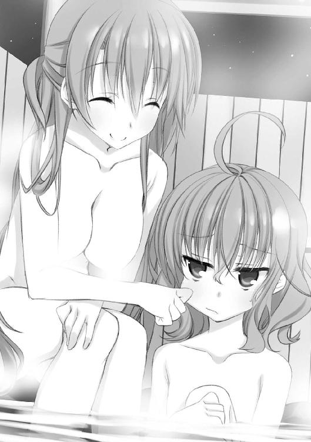
抗っても無駄だと解っているからか、仙波さんはされるがままで黙りました。今回は、雪玉をぶつけられたりサンタ服を着せられたりお風呂で頰をいじられたり、割りと酷い目に遭っている仙波さんです。それでも大して不平を言わない辺りに、成田くん以外の人に対する寛容さ──無関心と不可分のそれ──がうかがわれると言えるでしょう。
千代さんは不満げに腕を組み、こちらに向き直りました。
「ぅーん......じゃあ、佐々原さんはどう？」
いよいよ、わたしの番です。湯船の中で姿勢を正し、思うところを言葉にしました。
「倉子さんはとても個性的な人です。自分の中に独特な価値観を持っていて、それを貫く意志力があります」
自然と目をやるのは、お餅を伸ばすように頰をこねくり回されている仙波さんの顔です。わたしは倉子さんの人物を考える時にまず、春以来慣れ親しんだ仙波さんの独歩主義をモデルに据えました。
「それが長じて、部屋の中に虫を放ったり林間学校を抜け出したりすることになったのかも知れません。
倉子さん御自身の弁によれば、御家庭の雰囲気が彼女の奇行を暗に肯定していたとのことです。でも、たとえそうだとしても、世間一般の常道を外れて生きるのは、勇気の要ることだと思います」
現にわたしは、自分の中にある他人とずれた部分を恥じ入って、それを極力隠蔽するために無個性であろうと努めてきました。でも。
「そんな中で、静一さんは小さな時から倉子さんの......信奉者だったようです。倉子さんの方でも静一さんには気を許して、二人で過ごす時間も多かったそうです。
これはきっと、倉子さんにとって、とても大きな安心になったでしょう」
意地を通すには「一人」でいいのです。そのままで良いと言ってくれる、認めてくれる、そんな慕わしい相手が一人いるだけで、世界は一変します。誰にも理解されないという絶対的不安から、たった一人でも認めてくれる人がそばにいてくれるという相対的希望の世界へと。
『僕は佐々原と話してて面白いよ』
そう、言ってくれる人がいるから。
だから、今のわたしは、少しだけ勇気が出せます。
「後から一般にも評価されることになったとしても、最初の足場は全ての基準になると思います。
だから多分、倉子さんにとって静一さんは特別な存在で......あるいは自分の半身だったのではないでしょうか」
「黒い羊」であった倉子さんは普遍的な価値観に準じることが許されず、芸術という尺度の曖昧な世界に居場所を見つけました。その中で拠り所になるのは自分の直感と信念と、そして理解者です。
「倉子さんと静一さんが別れた詳細はよく判りませんが、それでも特別な存在だったことは間違いありません。もしかしたら、特別な相手だからこそ、関係の変化を望まなかったということも考えられます」
ちゃぷんという水音に目をやると、ようやく仙波さんを解放した会長が、体を丸めて湯面に口まで浸かっていました。全身で首肯するように。
「でも、静一さんが倉子さんとの関係を割り切って別の人との結婚を考えたのなら、今度こそ二人の関係は消滅してしまいます」
「それで倉子さんはどうしたと？ 静一さんを殺めたという結論に持って行っては本末転倒になりそうだけど」
質問は仙波さんからのもので、対面の千代さんは、温泉のせいか昂奮のせいか真っ赤になった顔でわたしの話に聞き入っていました。
わたしは仙波さんに向き直り、正面から答えました。
「でも、倉子さんは偶然や外的要因が死命を制する世界を否定する、酷く自主的な女性です。
自分の手の届かない理由で静一さんが失われるとなれば、いっそ自分の意志でそれを成そうとする......とも考えられないでしょうか？」
「だからと言って、殺すっていうのは極端すぎるでしょ」
仙波さんの批判はもっともです。普通なら、痴情のもつれだけで殺人に発展する可能性はそう高くないと思います。多くは金銭問題やその他のストレスとの複合で事態が尖鋭化するのではないでしょうか。しかし。
わたしがあの寂しいアトリエで相対した時に感じた、無気力な外面に隠された倉子さんの激しさには、いわく言い難い凄みがありました。表情の変わらない仮面を着けているからこそ、その向こう側にある真意が「得体が知れない」という最も原始的な恐怖のステータスを帯びるのです。
でも、わたしの感じたあの昏いような情念のわだかまりを説明するのは、口下手なわたしには少々荷の重い仕事です。あるいは、倉子さんの描いたあの絵を見てもらえばそれが説明になるのかも知れませんが......
「いいえ......倉子姉さんならやりかねないわ」
わたしが答えられないでいる内に、千代さんがやにわに立ち上がって、ぽつりと言いました。
「前に、家の猫が死んでわたしが泣いてた時、その死体を平気で抱き上げて自分の部屋に持って行って絵に描いてたの。しかもその絵を自分のアトリエに飾って、ここにも持ってきてるのよ......やっぱりおかしいわ、あの人」
うつむいた彼女の視線は揺れ動くお湯に映った自分の顔を見つめていて、わたしたちよりも自分に言い聞かせているように見えました。
一方で、そろそろのぼせるほど温泉に浸かっていたはずのわたしは、ぶるりと震えて肩を縮めていました。
今日の午後、アトリエで倉子さんがこともなげに示した猫の素描。
あれは眠っている猫を描いた物ではなく、猫の死体の写しだったのです。
「さて......やっぱり第一容疑者は倉子姉さんね。フミちゃんたちと演ってた時も、漠然とそんな感じにはなってたけど」
フミちゃんというのは東原史絵女史のことでしょう。
お風呂上がり、寝間着に着替えて移動した一階の食堂。お風呂に入っていた四人に加えて、広間で涼んでいた成田くんを引っ張ってきて食卓を囲んでいます。
そこで尾関さんの出してくれたアイスクリームなど突きながら、千代さんはお芝居の進捗について語っています。
「でも、さすがは佐々原さん。わたしが見込んだ姉さん役だわ。あの無愛想な倉子姉さんから話を引き出して、静一さんを殺した動機を突き止めるなんて」
わたしに向かってスプーンを振り回す千代さんはいかにも上機嫌で、お風呂上がりの上気した肌が一向に鎮まる気配がありません。
「みんな、この調子で役になりきって、静一さんの殺された真相を姉さんに突き付けてやりましょう」
しっかり殺されてね！ とあんまりな指示を受けて、会長の髪を櫛で梳いていた──......姉弟関係のお芝居だそうです──成田くんは「え？」と体をこわばらせました。仙波さんの白けた視線に気付いたのでしょうか。わたしの方を見てビクッと怯えた顔になった理由は判りません。いつも通りの表情をしているはずなのですが。
そんな殺伐とした空気の中、千代さんだけが満足げです。
「うん。良い感じに殺されそうな空気だわ。成田くんは思った以上に良い仕事をしてくれてるわね」
「あれ......？ なんか普段とあんまり変わらない雰囲気なんですけど、殺されそうに見えます......か？」
成田くんはわたしたちの前にお風呂に入り、もうすっかり体も冷えているはずですが、なぜかこめかみの辺りにびっしりと汗をかいていました。この寒い中そんなに汗をかいては風邪を引いてしまいます。わたしは心配になりながら、きりきりと握り込んでいたスプーンからゆっくり指を引きはがしました。
「それに比べて......」
一転、険悪な声になった千代さんの視線は、仙波さんに向いていました。
「あなたは全くなってないわね。今日も部屋に籠もってたみたいだし、ちゃんとわたしを演じてくれないと、他の人たちがバランスを取れないでしょ？」
さっきから会話に参加せず、黙々とアイスを食べていた仙波さんは最後のひとすくいを口に含んで、無感動な一瞥を千代さんに投げました。でも、それだけでした。
「ちょっと、返事くらいしてよ」
びッと突き付けられる、千代さんのスプーン。仙波さんは、溜息とともに自分のスプーンを打ち合わせて逸らしました。ちン......と、銀器の澄んだ共鳴がささやかに、でもぴりぴりと食堂に満ちました。
「わたしは、あなたを──葉村千代を全く理解できない」
............？
わたしは、自然に成田くんと目を見交わしていました。これは──この仙波さんの声は、初めて聞くかも知れません。少なくとも、滅多に聞くものではないはずです。
普段の、成田くんなんかに対する直情的なものではなく、静かな、根深い──怒気。
「な、なによ......？」
それは千代さんにも感じ取れたのか、声と手中のスプーンを震わせます。
そんな彼女を、仙波さんは容赦なく追い打ちました。
「風呂場でも思ったけど、どうしてそんな風にはしゃげるの？ そんなに事を大げさにしたいの？
この世界に不満なの？」
確かに、お風呂で千代さんが倉子さんの殺意をうそぶいている時から機嫌が悪そうではありました。でもわたしたちは、平常から低気圧なせいで、仙波さんが特別に怒っていることに気付けなかったのです。
千代さんは千代さんで、突然に自分が責められていることへの困惑で怯えたようになってしまっていました。
「なに......言ってるの？ 解らないのはわたしの方だよ」
「じゃあ、言い方を変える。
あなたはなんで、静一氏の死を殺人事件にしたいの？」
「し......したいんじゃない！ そうなの！ 静一さんは誰かに殺されたの！ 密室殺人事件なの！」
屈した発条の縛めが切れたように立ち上がり、猛烈な勢いで言い返す千代さん。対する仙波さんはあくまで淡々と、だから揺るぎなく、ひりつくほど乾いた言葉を返します。
「その証拠も、疑うに足る理由もない。確かに倉子さんの言ったようにいろいろな可能性はありうるけど、それはただ『疑えば疑える』というだけの話でしょ。
......ハンロンの剃刀って知ってる？ 無能力で説明できる不具合に悪意を求めるべきではないという考え方。平たく言えば、電子レンジに衣類の洗濯ができないからといって、それをメーカーの意地悪だと考えるのはナンセンスだって話。
今回の件もまさにそうよ。
莫妄想──事故で説明の付く人死にに、殺意を見出そうとするのは馬鹿馬鹿しい」
倉子さんとは真逆の考え方でした。
人間は自然と死ぬように出来ているのだから、人の死に特別なことなんて何もない。あるのは幸運か不運か、天の采配だけ。
「葉村千代さん。わたしはそういう考え方をする人間よ。
だから繰り返す。わたしにはあなたを理解できない。なんで事故で死んだ故人に、殺人なんて無残な定義をしようとするの？ あなたが静一さんを慕っていたなら、平凡に死なせればいいでしょう。殺されただのなんだの、けばけばしい墓碑銘を付け足すのは余計なお世話でしかない。
あなたは正直......面白がってるように見えるのよ」
少しでもためらったのは最後の一言だけ。仙波さんは黙り込む千代さんの目を正面から見つめて、言うべき言葉を尽くしたようです。
「仙波......？」
成田くんの小さな呟き。その気遣わしげなニュアンスの理由はよく解ります。人に関わること、影響を与えることを極端に嫌う仙波さんが、こうも攻撃的な物言いをするのは珍しいことです。
この勢いは、あの夏の日、風邪引きの仙波さんが成田くんを喝破した時以来でしょうか。あの時は成田くんへの鬱憤が限界まで溜まって爆発した結果だとわたしは思っていますが、ほとんど初対面の千代さんにここまで言うとは思いませんでした。会長も珍しくぽかんと仙波さんを見ています。
わたしも、成田くんも、会長も、仙波さんの異変にばかり目が行っていました。だから、彼女の変化に気付くことができませんでした。
「違う............」
千代さんの、小さなうめき声。そこに喉を詰まらせた幼子のような危うさを感じて、わたしは髪を引っ張られたように視線を向けました。
「千代さん......？」
「違う......だって、静一さんはすごい選手で、英雄で、優しくて......普通の人には想像もできないことをしてみせてくれる人で......」
さっきまで真っ赤だった千代さんの肌は、いつの間にか蠟のように白くなっていました。浅く急な息にまぎれるうわごとのような呟きの揺らぎに合わせるように、ぐらりと体を傾がせて。
「それが............それが、死ぬわけ────」
ぷつりと途切れた言葉とともに、千代さんは卒倒しました。
幕間．寄絃芳花
「憂鬱だよ......」
冬の夜は足早に更け行き、あらかたの灯火が落ちた寄絃別邸の一室。
友人の声に、わたしは膝の上で封を解いていた荷物を脇に除け、向き直った。
「お姉さんたちの出先、空が荒れそうですものね」
わたしのいらえに、友人──謹んでお預かりした仙波さんのお宅の御次女様は、山と積まれた課題のプリントや参考書をバシバシと叩いて不平な顔になった。数十年前から使っている質の良いライティングデスクだが、そう激しく叩かれると軋み始めるからやめてほしい。
「違うよっ。雪山なんて荒れてナンボじゃん！」
それはどうかと思う。けれど、彼女らしい考えではあった。
志望校の受験を間近に控えているというのに全く勉強をしていなかったこの娘さんは、さすがに不安になってきたのか冬休みを前にしてわたしに勉強を見てほしいと言ってきた。そこでここ数日、こうして家の別邸で泊まり込みの教授をして上げることになったのだけれど。
勉強。勉めて強いる。
この子には最も向かない営為だ。形から入ると称して、友人の家の中だというのに学校の制服を着込んで伊達眼鏡──どこで手に入れたのか彼女の姉上の物に似ていた──を掛けたまでは良かったが、わたしが文系を中心に出した課題に、さっきからほとんど手を付けていない。
「それじゃ、旅行に付いていけなかったことを嘆いているのですか？」
わたしは溜息を胸に落として、宣告した。
「普段の予習復習を怠っていた正当な報いです」
「そのことでもないよ！」
「では......大丈夫。それだけ言語が扱えれば脳の容積に問題があるということはありえませんわ」
「別に自分の知能レベルに絶望してるわけじゃないよ!?」
どんな暗闇の中でも希望を捨てないのは結構なことだった。
「それじゃ、何がそんなに憂鬱なのです？」
「決まってるよ！」
彼女は全身の気功を開放するが如く怒喚と立ち上がると、落ち着きのない足取りでわたしに詰め寄ってきた。目が据わっていて、結膜に走る血の道が攻撃色に染まっていた。
「わたしの大切な女たちが、あのケダモノのような男と外泊してるんだよ!? こんな時にのほほんと勉強なんかしてたら、学校には合格しても父親失格だよ！」
そこは失格してもいいでしょう。しかし。
「その、ノーガードで小突かれるのを待っている苛められるのに慣れきった野良犬のような顔でメイドさんの格好などして学舎を走り回り最早なじって下さいなじって下さいと三界に喧伝してるが如きケダモノのような人とは、まさかとは思いますが成田さんのことですか？」
「国語の苦手なわたしにでも、確信二〇〇パーセントの前半と『まさかとは思いますが』の接続が間違ってるのは判るよ？」
まぁそれはそれとして。
「でしたら、そんな不埒に及ぶ人ではないと言っているでしょう」
「甘いよ！ そもそもあの男は、家の明希ちゃんみたいな低カロリーのぺしゃんこ娘にも目を付けるような飢えた狼なんだよ？ ああ......お姉様や佐々原さん、わたしの可愛い女の子たちと同じ屋根の下にいたら、何かやらかすに決まってるよ！」
いつからあなたのになったんですか。
「......ぅぅ、特に明希ちゃんは大人ぶってるくせにねんねなところがあるから、あれの毒牙にかかってなきゃいいけど」
どうも、夏に家の山荘に来た時に意識してしまう出来事があったようで、この子は成田さんのことを豺狼の類に見立てている。わたしはかぶりを振って吐息した。
「いくら毎日夢に出てくるからといって、目の敵にしすぎでしょう」
「毎日じゃないよ！」
時々だって言ったじゃん！ と、むきになって部分否定してくる。
「て言うか、この間はメイドさんの格好で出てきて、お願いだから御奉仕させて下さいって土下座してきたよ。
倒錯してるよね」
ええ、あなたが。
とは思ったが返事はせず──この子とすごすのは楽しいけれど、一日中となると疲れてくる──荷解きに戻る。緩衝材を幾重にも巻き込んだ丁寧な梱包をようやく剝がし終え、そろそろ中身を取り出せそうだった。
「......それは何？」
わたしが取り合わないことに気付いて、彼女は憤懣を好奇心に切り替えたようだった。手元をのぞき込んでくる。
「参お兄様の下さった、ちょっと早いクリスマスプレゼント......絵画のようですね。なんでも、一目見てぴたりとフィーリングの合った絵だとか」
「へぇ......お金持ちは妹にもプレゼントをするんだね。家の姉にも見習ってほしいもんだよ」
「家の習慣と言うより、お兄様が人に贈り物をするのが好きな性格というだけですわ」
ちなみにわたしはお返しとして、兄に見合い写真三〇枚を贈った。寄絃の関連会社に勤める人の中から、心を込めて厳選した娘さんたちだ。さっさと良い人を見つけて妹離れをしてくれないと、『私』としても腰が落ち着かない。
「クリスマスか......そう言えばちっちゃな頃、明希ちゃんと大喧嘩したな」
「なんでまたクリスマスに」
「サンタさんだよ」
端的に答えた彼女は、当時を思い出したのかにわかに口を尖らせた。
「まだ二人とも幼稚園の時かな。わたしが二人でサンタさんに手紙を書こうって言ったら、明希ちゃんは『サンタなんて家には来ないし、その手紙はお父さんが読むのよ』なんてこまっしゃくれたこと言い出してさ。
その時はわたし、サンタのこと本気で信じて毎年プレゼントをくれることに感謝してたから、明希ちゃんが憎たらしい解らず屋に思えてさ。取っ組み合いの大喧嘩だよ。妹相手に凶器を使ったり、その時から明希ちゃんは冷酷な本性を剝き出しにしてたね」
「なるほど。あなたたち姉妹の性格を良く表した一幕ですわね」
「笑い事じゃないよ......明希ちゃんが今みたいにわたしへ冷たくなったのって、思い返すとあの時からだった気もするし。わたしもその後しばらくは明希ちゃん大嫌いだったし。
......今はまぁ、嫌いじゃあ、ないけど」
明希さんがそこまで怒ったのは多分......幼い彼女には、御両親がサンタを装う意味が解らなかったからだろう。それはとても微笑ましく、愛おしいことだと、思う。
「明希さんと言えば、その後、どうなんですか？」
「どうって？」
「前にブラジャーを着けるようになった云々と大騒ぎしていたでしょう。その後、何か変化はないのですか」
彼女は伊達眼鏡のフレームを指先で撫でて、ちょっと考えた。
「どうだろ............あ、そう言えば、お風呂の時間が長くなったかな。それに、前は冬場には無精して入らない日もあったのに今は毎日入ってるよ。
後は......うん、鏡を見るようになったよ。朝とか、洗面台で顔洗った後、じっと見てることがある」
......それは、それは。
なんだかふわりと浮き立つ気分になりながら、ようやく絵を取り出す。３号サイズの小さな物で、夜を思わせる暗い背景の中、真白い獣とも鳥とも付かない何かが柔らかな光を発している。そんな絵だった。
「なにこれ......？」
友人からそんな感想が出てくるのもむべなるかな。少なくとも予備知識なしで正体の知れる種類の絵ではないのだろう。ただ、わたしの目には、陰鬱に生きているからこそ光り輝く希望を力いっぱい讃えられる。そんな人の描いた絵に見えた。
絵にはお兄様のメッセージカードが添えられていて、それに拠れば、
「この作者の方は、一つの主題を専門に描いているようですね」
だから、この画題もそれに同じく。
『天使』
わたしは興味を引かれて、画の隅に忍びやかな筆致で書き込まれた Kurako.H の署名を眺めた。
Part-1：成田真一郎
「気にしなくていい」
管理人室から出てきた倉子さんの第一声が、それだった。
彼女の背後、静かに閉ざされた扉の向こうでは、千代さんが眠っている。
「はしゃぎすぎて疲れてたところに昂奮してぶっ倒れただけだから。
一五年も病気と付き合ってるくせに自己管理できない千代の自業自得。ついでに言えば、よくあることよ」
その言葉は僕ら全員にかけられたものだったけど、実質的にはうつむいて暗い顔をしている仙波に向けられていたのだろう。明らかに、仙波の落ち込みようは一段違う。
自分の言葉が千代さんを傷付け、打ち倒してしまったことを自責しているんだろう。仙波の性格からすれば、どんな免罪の言い訳を与えられようとそれに飛び付くことはできないと思う。
「去年だって、倒れはしなかったけど二日目から寝込んでたしね。
だから......後は尾関さんが看てくれるから、あなたたちはもう部屋に戻りなさい。今夜は特に冷えるわよ」
言い置いて、倉子さんは振り向くこともなく自分の部屋の在る二階へと歩いていく。
その、一見淡々とした歩みの中に若干の疲労を見て取ってしまうのは、さっきの必死な姿を見たからだろうか。
一時間ほど前、千代さんが食堂で倒れた直後。
素早く廊下に出て助けを呼んだ会長に応えたのは、ちょうどアトリエから帰ってきたらしい倉子さんだった。すらりとした手足を風のように躍らせて食堂に入ってきた倉子さんは、床に倒れた千代さんを抱き起こそうとしていた僕に素早く指示を出し、安静な姿勢で寝かせた。
倉子さん自身は厨房にいた尾関さんを呼びながら救急箱を持ち出してきて、慣れた様子で千代さんに何かの注射を打った。いつも飄然とした顔をしている印象のあった倉子さんがその時ばかりは真剣な表情で、薬を打ち込んだ後の千代さんの顔色を一時も目を離さずに観察していた。
それほど激しい動きをしたわけでもないのに、頰に脂汗が伝っていた。
こういった事態に慣れていない僕らは、棒立ちで倉子さんの処置を見守るしかなかった。特に仙波は放心に近い状態で、佐々原が寄り添うように手を握っても気付いた様子がなかったくらいだ。
千代さんの様子がどうやら安定して、僕と尾関さんで一階の管理人室のベッドに運び込んだのはそれから一〇分ほど後のこと。
倉子さんは誰を責めるでもなく、むしろ尾関さんや僕らに手間を取らせたことを謝っていた。そうして、千代さんの顔が切なげな昏倒から安らかな寝顔に変わった頃、ようやく自分の汗を拭って、深く息を吐いた。
「......大丈夫かしら？」
部屋に──会長と僕の部屋に──戻って来てベッドに寝転んで、会長が真っ先に言った言葉だった。少しぼぅっとしたトーンだった。
僕としては、訊き返すしかない。
「誰が？」
落ち着いたとはいえ眠ったままの千代さんだろうか。それとも、千代さんをそんな目に遭わせた──そう思い込んでいるであろう仙波のことだろうか。
会長は仰向けに寝転がったまま、ふるふると首を振った。
「誰もが、かしら。さっきのはみんなにとってショックだったと思うし」
確かに、そうだった。倉子さんはああ言ったけど、千代さんが倒れたのは静一さんの件を煎じ詰める過程で精神的に不安定になっていたからだろう。奇異に思いながらも、どこか興味半分で芝居に参加していた僕たちにも小さからず責任がある。
この問題は、千代さんにとって四年も反復するほどに重要なものだったんだ。求められたからといって、半端な気持ちで参加するべきじゃなかった。
こんな結果になって、仙波はもちろん、対人関係に臆病なところのある佐々原も相当に衝撃を受けているだろう。
落ち込んで、またネガティヴになってなきゃいいけど......
「ねぇ、真一郎」
隣の部屋が在る方の壁を見つめていると、どこか湿り気を帯びた会長の声。聞き慣れないものに驚いて振り向くと、ベッドの上で片膝を抱えた会長の姿があった。心なし、顔色が良くない気がする。
「岬姉......？」
「フォローして上げなきゃ、ダメよ」
だから、誰を......て言うか──
「大丈夫？ なんかぼーっとして見えるよ？」
「そう？ ちょっと湯冷めしたかも......」
そう言ってふにゃりと微笑む表情は、不覚にもちょっと可愛い......いやいやいや、でも、これはいつもの生徒会長の顔じゃない。
「絶対おかしいよ。風邪じゃないか？ 昨日はちゃんと寝たの？」
「んン......言われてみると、いろいろ考え込んであんまり眠れなかったかも」
朦朧の一歩手前くらいの様子だった。手を伸ばして会長の額に触れてみると、酷く熱い。自分でもよく解らない理由で血の気が引く。
僕は、あわてた。
「薬もらってくる！」
＊
「それで、今日は会長、一日部屋で休むんですか？」
翌日、朝食後。僕らはロッジの周りを歩き回っていた。
薄墨を刷いたような空が澱んだ銀色で下界をそら威す、曇天。今の気分を写し取られたようで、慣れない高地の気圧のせいもあってかなんだか気持ち悪い。
そんな中、隣を歩く佐々原のサツ、サツと軽やかな足音が心地良く胸に響く。
「うん。風邪みたいなんだけど、あの人滅多に病気とかならないから、なんか怖くてさ。本人は平気だって言うのを、頼み込んで寝てもらったんだ」
鬼の霍乱ということわざが、これほど時宜に適った状況もないだろう。
「本当は看病するべきだと思うんだけど、見られてると寝られないって追い出されちゃったよ......っと」
前を行く小さな背中を見ながら歩いていたら、雪の塊につまずきそうになった。足を止めると自然、溜息とともに肩が落ちる。心配だ。本人が病原体みたいな岬姉が侵されるような病気、相当凶悪な物と見てまず間違いない......どうしよう？ あの人に万が一のことがあったら............デメリットがあまり思い浮かばないけども......嫌だし。
それはそれとして。
「仙波さんの時といい、女子の看病に異様な情熱を燃やします......マイナス三ポイントですが、わたしも心配なので情状を鑑みてプラスマイナスゼロでしょうか？」
......同じく立ち止まった佐々原は、何をメモして首を傾げているんだろう。すごく気になったが、藪から猛毒を持った大蛇を突き出しそうな気がして訊けない。
代わりに別の質問をした。少し距離の開いた仙波明希の背中を見ながら、小声で。
「で、仙波はどんな感じなんだ？」
千代さんは今朝普通に目を覚まして自分の部屋に移ったと聞いたけど、朝食は自室で取ったので今の様子は判らない。でも、食堂に出て来なかったということは、まだ体調が優れないか、僕らと顔を合わせたくないかのどちらかだろう。
どちらにしても、仙波としては気になるはずで、だから今朝から陰気な顔をしてうつむきがちだった。僕らにしても五十歩百歩で、朝食の席で常態依然としていたのは倉子さんだけ。昨夜の大回転が噓のような、鷹揚で無感動なたたずまいだった。
佐々原はメモ帳を器用に袖の中に収納──いつでも即座に抜き打ちできるポジションだった......──すると、微かに眉を曇らせた。
「昨日から、あまり話せていません。わたしから話しかけても応えてくれなくて......何か考え込んでいるみたいです」
「責任感じてるのかな」
「だと思います」
「......でも、今は何をやってるんだ？」
「さぁ......」
仙波は朝食後、なぜかロッジの中を徘徊しだしたという。佐々原は一人にさせるのも一人になるのも嫌だったので付いていき、僕は会長に部屋を追い出された後で二人に鉢合わせした。
そんな道行きがロッジの全体、人のいない部屋全てを回り、ついに外に出てきてしまって現在に至る。途中、仙波はしきりに床面を気にしてしゃがんで調べたり、トントンと音を立てて踏み付けていたりした。
今も、壁沿いに注意深く地面を検めながら歩き回っているようだった。何か明白な目的があってやっているのは確かだ。
集中しているようなので話しかける雰囲気ではなかったけど、このままでは手伝うこともできない。そして僕は、珍しくも思い詰めているような仙波の力になりたかった。
僕は意を決して歩みを早め、彼女の背中に声を投げた。
「仙波」
無視されるだろうとは思っていたが。
無視された。
......この切ない感覚にはなかなか慣れない。しかし、今は落ち込んでいる場合じゃない。
「待てって」
肩を摑もうとして、ためらう。今さらに仙波の肩の小ささと華奢な体格を意識してしまい、触れるのが恐くなる。手荒にすると壊れてしまう、ような。これも、昨夜の千代さんが倒れた瞬間がまだ脳裏に焼き付いているせいだろうか。
僕が踏み出せないでいる内に、佐々原が仙波の手を取って引き留めた。
「待って下さい」
「......なに？」
仙波の声はいつも通り眠たげなものだった。ただ、低気圧はいつ嵐を呼ぶか知れない。佐々原は踏みとどまって訊いてくれた。
「あの......何をしているんですか？」
「ちょっと探し物よ」
短く答えて、不意に疲れを意識したようにかぶりを振ると、仙波はロッジの基礎の、ちょうど椅子くらいの段差になった部分に腰を下ろした。
「探し物って？」
粘り強く問いかけると、仙波は眼鏡越しにも面倒臭そうな一瞥をくれた。恐ろしく鋭利な感情表現だった。でも答えてくれた。
「大した物じゃない。あるかどうかも曖昧だし」
「そう言えば朝食の後、倉子さんに何か訊いてましたけど、それについてですか？」
佐々原に言われて思い出す。確かに仙波は、食堂を出て行く倉子さんを追っていって何か尋ねていた。遠くから見た感じ、答えてもらえなかったみたいだけど。
「まぁ......そんなところよ」
「もしかして、何か思い付いたのか？ 千代さんを納得させられるような名案」
自分でも不思議なくらい勢い込んでしまった僕に向けられる仙波の目は、酷く冷たかった。
「そんなんじゃない......ただ、昨日の夜の中幕でちょっと気になってきた。なんであの姉妹は、あんなに人為的な『事件』であることに執着するのか。
わたしは最初、千代さんは猟奇趣味が高じて静一さんの死に嗜欲的な妄想を加えているのかと思った。それかお姉さんへの敵意から来る嫌がらせか。でも、昨日の反応は明らかに違った。
千代さんはまるで、静一さんの死が殺人じゃなきゃいけないっていう強迫観念を持ってしまってるようだった」
確かに、倒れる前の千代さんの様子は仙波に怒ったと言うより、事故だと納得させられるのを恐がっているようにも見えた。
「それだけじゃない。佐々原さんの話によれば、倉子さんまでも静一さんが殺されたと示唆するようなことを言い出した。あんな不安定な妹を煽るようなことを言う意味がどこにあるの？
しかも彼女は、いざ妹が倒れた時はあんなに必死に介抱していた。悪意を持っているとは思えない。でも......だったらなんで、普段から反感を買うような態度を取ってうろんな言動をするのか」
それも仙波の言う通り、不思議な話だった。倉子さんが昨夜見せた懸命さが演技だとはとても思えないし、その一方で佐々原を脅かすようなことを言ってみせて千代さんを挑発するのもちぐはぐだ。
仙波はうつむいて、自分に言い聞かせるようにぽつぽつと続ける。
「何か......何か理由があるはずよ......あの妙な姉妹の関係には、何か」
......一見冷静に思考しているけど、やっぱり、千代さんを刺激して卒倒させてしまったことが相当に応えているようだ。ただでさえ他人に干渉することを嫌う仙波だけに、あそこまで誰かを追い詰めてしまった経験は初めての事だったのだろう。
防寒着に埋もれるような仙波の小作りな体が、自分の犯したミスに縮こまる様を見るのは痛々しかった。殊に僕には痛かった。
それは、それは、耐え難いほどに。
僕は腰を落として、怖ず怖ずと語りかけた。
「仙波......あのさ、あんまり思い詰めても良くないんじゃないかな。少しは力を抜いていかないと、会長みたいにダウンしちゃうぞ。
いつも......そう、子ひつじの会で相談に乗ってくれる時みたいに、だらだらとさ──」
しかし、僕の言葉は今の仙波にはとてつもない耳障りだったらしい。ぎろりと一睨みされたかと思うと、仙波はついぞ見たことのない激しい動きで立ち上がっていた。逆光で黒く染まった彼女は、みぞれのような声を僕に吹き付けた。
「だからッ──......そういうお節介をわたしに押し付けないでって言ってるでしょ。
この件はわたしがなんとかする。迷わない某の手助けは要らないし、君お得意の世話の押し売りもお断りよ」
言い切って、それが本気であることを僕の眼底から脳に浸透させるように強烈な睥睨を叩き付ける。
仙波に嫌われてるのはいつものことだけど、本気の怒りを向けられるのは久しぶりだった。そうだ。彼女は、僕のお節介が自分に向けられることを何よりも嫌っている......
僕の心が、折れないまでも激しく軋んだことを見て取ったか、仙波はついと視線を外して玄関の方へ歩き出す。
僕は反射的に、今度こそ仙波の腕を捕まえようとした。でも、それを意識した瞬間に足腰が怖じけたように力を失い、仙波の腕は瞬く間に間合いの外に消えてしまった。
「仙波さん、待って下さい」
佐々原が仙波を追いかけて歩き出すが、それに続くこともできない。
「......やっぱり、こっちにはないか」
仙波の姿がロッジの角に消える間際、そんなかすれた呟きだけが聞こえた。
しばらく、そのままロッジの裏手で黄昏れていたが、段々と冷たい風が強くなってきて外にいられなくなった。ふと空を見上げると早送りのように忙しなく雲が蠢き、服を突き抜けて肌をなぶられるような悪寒にぞっとする。
ほうほうの体でロッジに撤退すると広間には倉子さんが居て、相変わらず感情の読めない茫洋とした顔をしてテーブルに頰杖を突いていた。
「あ......こんにちは」
「こんにちは」
言葉も表情も淡白なあいさつではあったけれど、最低限無視されないのは仙波との大きな違いだった。この程度のことでも今の僕には、沁みる。僕は、この人に感じていた壁を一時的に透過して話しかけた。
「今日はアトリエには行かないんですか？」
「これから空が荒れそうだからね。きっと相当冷え込む。アトリエの小さなヒーターじゃ仕事にならないわ。
あなたたちも、午後は外に出ない方がいいわよ」
案外に詳しく話してくれた上に忠告までもらった。倉子さんが急に優しくなったと言うより、これが本来の......千代さんと接していない時の倉子さんなんだと思う。佐々原が妙に親しみを持って話していたのも合点が行く。
「はい。ありがとうございます」
素直にうなずく僕を眺めて、倉子さんはぽつりと言った。
「......ひょっとして、暇？」
そんな露骨に暇に見えるのだろうか？ いや、仙波にも会長にも邪魔にされている今、確かに暇だけれども。
「もし暇なら、ちょっと手伝ってほしいことがあるんだけど」
だから、倉子さんの依頼を断る理由もなかった。
このロッジにおける千代さんの部屋は二階の遊戯室だった。そこにベッドや数々の私物を運び込んで、自分の寝室にしてしまっているらしい。
本来は複数人で使う部屋だけあって客室の倍くらいの広さがあり、目に付くところではカード台やビリヤード、ダーツが設えられている。お陰で、同年齢の女子の部屋に入っているという緊張は感じずに済んだ。
千代さんのベッドは柱に彫刻の施されたお高そうな物で、千代さんが純白の布団に埋もれる様は童話的な天国、雲の上の暮らしを思わせた。枕の周囲を固める無数のぬいぐるみがだいぶ荘厳さを薄めていたけど。
僕は今、みんなの昼食の準備で忙しい尾関さんの代わりに、千代さんへ特別製の食事を持ってきたところだった。倉子さんいわく「お客さんを使って悪いけど、わたしが持って行っても食べないから」だそうだ。
「また、おかゆ......？」
ベッドの上で半身を起こした千代さんは、僕の抱えたお盆の上の品を見て不満げな声を出した。今はもう、倒れた時のような蒼い顔もしていなければ狂騒的にはしゃいでもいない。最初に会った時の、奔放無邪気な葉村千代さんの顔に戻っていた。
「朝もそうだったのよ。美味しいけど、もっとちゃんとした物食べたい」
ぶーぶーとわがままな文句を言う子供っぽさと、今朝目が覚めた後に着替えたのであろうネグリジェからのぞくほっそりした肢体のアンバランスが......困る。僕はあまり視線を動かさないようにして、なんか誰に対してもあまり成功した記憶のない説得を試みた。
「尾関さんも何かと忙しいんですし、病人食のバリエーションがお手軽には出せないんじゃないでしょうか」
「そうなんだろうけどさ......」
千代さんはうつむいて何か続けたけれど聞き取れなかった。ただ何か、自分で自分の力を落とさせるようなことを言ったようだった。
咄嗟に何か言おうとして──喉が詰まった。安易な慰めの言葉なんてかけられない。それはさっき、仙波に拒絶されたばかりじゃないか。『千代さん』役の仙波に。
しかし、千代さんは千代さんであって、役を押し付けた仙波ではなかった。
「......食べさせて」
顔を上げての第一声に、反応できない。
「食べさせてよ。『静一さん』でしょ」
いや......そんな要求の正当性に疑いのない顔で言われても。
「それは、だって、お芝居の中でのことですから」
静一さんが千代さんに優しかったという話は聞いたけど、『静一さん』役の僕が、役者でない千代さんに対する場合にも有効なんだろうか。
「静一さんは誰にも優しかったよ」
千代さんはシンプルだった。そしてシンプルな事には往々にして抗し難い。
「......そう言われてしまうと」
しかし、女子に物を食べさせるなんてさすがに恥ずかしい。いや、文化祭の時に桃子さんにケーキを食べさせたけど、あの時は変なテンションだったし。結局まだ消せてないあの時の写真のことを思うと、いろいろと多方面に申し訳ない気持ちになるし。
まして千代さんは出会って二日で、大した会話もしていない間柄だ。
渋る僕に、千代さんはむきになったようだった。両腕を広げて、自分を囲むぬいぐるみたちを示してみせる。
「じゃあ、食べさせてくれたら、この中から好きなのを上げる」
そんなこと言われても、繊細な作りの高級そうなものが多いとはいえ、僕がぬいぐるみをもらっても持て余す。
それでも一応、千代さん枕頭の友人諸氏を見回して──ふいと目を瞠る。
「こ、こいつは......!?」
食の細い千代さんにおかゆを食べさせるのは、なかなかに時間がかかった。
こういうところも仙波と正反対だ。あいつは瘦せ形のくせにどか弁をあっと言う間に平らげる。
食欲に限らず、仙波と千代さんは一から十まで何もかもが違う。見た目も、性格も。仙波だったら天地が転覆しようと僕に物を食べさせてほしいなんて言わない。それをするくらいなら首をくくるという勢いで嫌われている......てな自覚を確認してしまって、泣きたくなった。
あいつの険悪な仏頂面を思えば、僕の差し出したレンゲからおかゆを吸い取り、こくんと呑み込んで繊細な味わいにうっとり微笑む千代さんは天使に等しい。良いことも悪いことも正直に顔に出る人だ。
仙波はホント、仙波だからなぁ......まぁ仙波だから仕方ないけど。
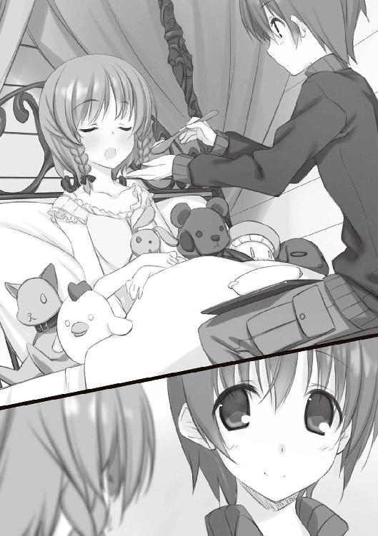
「？ なんで笑ってるの？」
「あ、いや......」
さっきのことを思い出して落ち込んでいたつもりだけど笑顔が出ていたらしい。目をそらしてごまかす僕を不審げに眺めていた千代さんだったけど、ふと満足げにうなずいた。
「でも、それでこそ『静一さん』役だわ。静一さんも、いつも笑顔だったもの」
僕は感心した声を出した。
「やっぱり、実力と自信のある人は余裕があるんだろうね」
会長もなんだかんだ言って地力のある人だから、あんな風にいつも微笑んでいられるんだろう。千代さんはこくりとおとがいを首に付けて、微かに頰を染めたようだった。
「わたしはね、一度死んだことがあるの」
「え？」
「小学生になってしばらくした頃ね、夏の暑さで、昨日みたいに倒れちゃったの。それも学校の中で」
千代さんは粉雪のように微笑んだ。ちろりと溶けて消えゆくような。
「小学校ってさ、一日休んだだけで......世界が変わっちゃうでしょ？ みんな知ってることや行動範囲が少ないから遊びも話題も偏りがちで、あっと言う間に流れ去ってく。休み明けは友達と話を合わせるだけで一日使っちゃう。勉強だって、大切な単元を聞き逃すと追い付くのがすごく大変になる。浦島太郎よね。
わたしは学校に入った初めから休みがちだったから、その悲惨さはよく知ってた。だから、少しぐらい体調が悪くても我慢して休まないようにしてたら、案の定......やっちゃった」
失敗失敗、と舌を出しそうな穏やかな声だったけれど、小さかった彼女がどれだけ思い詰めてその結果を招いたのか、聞いている方が痛くなる話だった。
「その時は体中が弱ってて、点滴の針を刺す場所に困るくらいになっちゃって......治療するにも体が耐えられないとかで一時はお医者さんも処置なしの状態になった。
何週間もベッドにへばり付くことになって、わたしはなんだかどうでもよくなってた。このまま死ぬのかな、でもそれもいいかな、って。もし病気が治っても、心配性なお父さんたちはしばらく学校に行かせてくれないだろうし、そうしたらもう、次に学校に行く時には誰もわたしのことなんて覚えてない。
入学する前と同じように閉じ込められちゃう。せっかくたくさん友達ができたのに全部、無駄。こんなことを繰り返すなら、生きてても意味ない......って、そんな風に思ったら、もう、ね。
諦めちゃってた」
そこで、千代さんはやにわに顔を上げて身を乗り出してきた。顔が近くなって戸惑うけれど、彼女の瞳の輝きに囚われて身を引くことができない。
「そんなわたしにね、大会中だっていうのにお見舞いに来てくれた静一さんは言ったの。
『諦めることなんてない。人間は考えうる限りの何もかもをできる生き物なんだ。だから、考えることを、思うことをやめちゃいけない』
って。でも、そんなこと言われても無理なものは無理って言ったら、じゃあ僕が次の試合でノーヒットノーランで勝つから、そうしたら信じてほしい......そんなことを宣言して、その通りにしちゃったの。
その試合は地方局でテレビ放送されてて、お母さんは昂奮すると良くないからって反対したんだけど、姉さんに頼んでこっそり小さなテレビを持ってきてもらって観戦した。解説の人が両チームとも強豪校とかって言ってて、予告した通りに完勝するのが奇跡なくらい難しいことは子供のわたしにも解った。
テレビの中の静一さんは文字通り別世界のヒーローで、でもわたしの知ってる生身の人間でもあって。だったらわたしも、あんな風に不可能を覆せる『人間』なのかも知れない......そう思えたら、秋になる頃にはわたしの体はすっかり良くなってた。それで、お父さんやお母さんをもう絶対無理はしないからって説得して、学校に通わせてもらった。
──わたしは一度死んで、違う世界に生まれ変わったの」
昔語りを終えて、千代さんは目をつむって深呼吸するように天井を仰いだ。目の裏には当時の情景が浮かんでいるのだろうか。
千代さんにとって静一さんは、人生は生きるに足るものだという「証拠」なのだろう。それは彼女にとって世界観そのもので、だからいつまでも朽ちることがない。夏に仙波が言っていた「精神が肉体に与える影響は常識では測れない」という言葉が思い起こされる。
「すごい人だったんだね、静一さん」
感嘆するとともに、自らを顧みて情けなくなる。元から静一さんと同列になれるとは思ってはいなかったけど、死後もなお千代さんを支え続けている静一さんに引き比べ、『千代さん』役のあいつにけちょんけちょんにやっつけられてる僕はなんなんだ......？
「そうなの。だからね、わたしはなんとしても、静一さんの隠された死の真実を突き止めなきゃいけないの。静一さんに命をもらったわたしの使命なの」
落ち込む僕をよそに意気揚々と宣言して、千代さんはつと不機嫌な顔になった。
「それなのに......ねぇ、あの子はなんなの？」
「あの子？」
「『わたし』を演ってる眼鏡の子よ。なんなのあの態度。わたしたちが一生懸命調べてるのにやる気のない顔して、わたしが真相に迫ったら嫌なこと言って。
きっと雪玉をぶつけたことを根に持って、わたしに嫌がらせをしているのね。そういうじとっと陰湿な顔をして──」
「違うよ」
僕は、千代さんの言葉を遮って断言した。思いのほか冷静な声が出た。
「違う。仙波は別に、意地悪をしたわけじゃないと思う」
千代さんはきょとんとして、丸くした目で僕を見上げた。
「......じゃあどうして、あんなに突っかかってくるの？」
「真剣に千代さんを心配してるから......じゃないかな。あいつはひたすら怠惰な奴だから、誰かと進んで絡もうなんて思わない。嫌いな相手ならなおさらだよ」
現に僕は、知り合ってだいぶ経つというのに頑なに避けられている。そうでないのは、佐々原みたいに興味を持った相手だけだ。
「だから今だって、あいつなりに静一さんの件を解決しようと頑張ってるよ」
「............そう。そう、なのかな？」
迷いなくうなずきを返すと、千代さんは微かにはにかんだようだった。
僕は続けて、仙波や子ひつじの会の話を千代さんに聞かせた。いちいち感嘆符の付いた感想をよこしてくれる千代さんは絶好の聞き手で、僕も語りに熱が入る。
そうして、初めて部室棟資料室で仙波に会ったあの春の日からの出来事を思い返しながら、やっぱり僕は仙波の......ファンなのだと再確認していった。
さっき怒られたことくらいじゃ、その想いは消えない。あれでへこたれるくらいならとっくに諦めている。この、千代さんとの楽しい話が終わったら。
また、仙波明希に会いに行こう。
＊
千代さんの部屋で時間を使いすぎてしまい、僕は昼食の席に間に合わなかった。倉子さんが説明してくれていたのでみんなを困らせることはなかったけど、仙波とはすれ違いになってしまった。
で、遅くなった自分の食事を終えて──なんだか尾関さんに大げさな礼を言われてしまった──仙波はどこかと捜し始めた矢先、廊下で佐々原さんに遭遇した。
最初の頃に比べるとだいぶ読めるようになってきた佐々原の表情だけど、時々全く感情のうかがえないことがある。僕が主に女性関係の不行状をしでかした時だ。そういう時の佐々原はなぜか、さん付けで呼びたくなる。
その佐々原さんが、ぴしりと生真面目な声を出した。
「成田くん」
「はい......」
「さっき千代さんに会って、成田くんとの楽しいお食事についてうかがったのですが」
なぜか、こういう時の佐々原が発する声を聞くと、一言ごとに肩が下がっていく気がする。いつの間にか付いていた癖。情けないけれど、それを嫌だと感じることも麻痺しかけている。人はそれを、しつけられつつある、と言うかも知れない。
「おかゆを食べさせる時に」
佐々原は言葉を切り、そして大上段から振り下ろした。
「フーフー、しましたね？」
ははは、今日の罪状はそれかぁ......
僕は、力弱く目をそらした。
「さ、最初の二、三口だけ......」
尋問されている内に、最初だけでなく割りと最後の方までしていたことが露見し、僕はこってりと佐々原さんのお説教を受けることになった。なんでつまらない噓を吐くんですか、なんでだろう、訊いているのはこちらです......云々......
半ば習慣になっている、この男子の心得を説くお説教タイム。胃袋へのプレッシャーを覚えつつ、何か安心に近い心持ちを得るようになっている自分が......嫌ではないのがむずかゆい、ような。
そんないつも通りの僕らをよそに、窓外を吹きすさぶ風の音がいよいよ禍々しく猛り狂っていた。
過酷な取り調べが終わり、余罪と思しき事柄も全て白状して奇麗な身になった僕は、佐々原といっしょに佐々原たちの部屋に行ってみた。しかし目当ての姿はない。
「お出かけでしょうか？」
「まさか......この天気で？」
第一、どこへ行くっていうんだ。あの座敷童じみた出不精が。
......いや、でも、今日は午前から歩き回っていた。ありえないような午前なら、ありえないような午後もありうる......だろうか？
なんだか、嫌な感じだった。
「ちょっとロッジの周りを捜してみる。佐々原は建物の中を頼む」
「はい」
以心伝心、は言い過ぎかも知れないけど、テンポ良く受けてくれる佐々原がありがたい。
ロッジの部屋を回り始める佐々原と別れ、僕はコートを取りに部屋に戻る。見ると、会長は安らかな寝息を立てて眠っていた。枕元に転がってる広がったままの画集は、退屈しのぎに二階のホールにあったのを借りてきた物だ。眺めている内に眠ってしまったのだろう。よほどトリッキーな趣向でもない限り、会長に芸術は睡眠導入剤である。
僕はそっと、めくれてしまっていた会長の布団をかけ直した。子供の頃から変わっていない寝相の悪さに、呆れるよりも安心を覚えるのはなぜだろう。
小声で「いってきます」と言い置いて、僕は足早に外へ出た。
外は、白かった。
いや、元から雪景色だったのだが、それでも地表平面上から屹立する立体は雪白をまとうことなく自らの色を持していた。
それが今は、粗暴な白の乱舞で全てが塗り潰されようとしている。
吹雪だ。家族旅行なんかで雪国に来たことはあっても、ここまで壮絶な天象には初めて出会う、吹雪だ。
佐々原と話しているわずかな間に、午前から強かった風が大量の雪を巻き添えにして怪物と化していた。倉子さんの予言は正しかった。空が荒れる、という言葉はこの時のためにある気がする。
かく言う僕自身も、横殴りの風雪に滅多打ちにされて反射的に腰を屈めた。手探りでフードを持ち上げてすっぽりかぶると、物凄い風音が幾分か弱まって少しはましになる。
......ここまで吹雪が強くなったのはいつからだ？ 食堂で昼食を摂っていた時はここまでではなかったはずだ。窓越しにだってこれはすぐに判る。だとしたら、佐々原に叱られていた十数分の間に？
「極端すぎるだろ......！」
誰にともなく毒突いて、僕はのそのそとロッジの周りを一回りした。重心を低く意識すればなんとか歩けないこともない。
途中、倉子さんのアトリエや物置小屋にも行ってみたが両方とも鍵がかかっていた。仙波が鍵を持ち出した可能性は低いと思いつつ一応扉を叩いて名を呼んでみたが、反応も人の気配もない。
やっぱり中か、と、ロッジに戻ってみると、玄関で蒼い顔をした佐々原が待っていた。
「仙波さんがどこにもいません」
僕と佐々原、倉子さんに尾関さんが一階の広間に集まっていた。
ロッジの内外に仙波の姿がないことが明らかになって、とにかく二人に相談することにしたのだ。養生中の千代さんと会長には声をかけるのがためらわれた。
「仙波さんは携帯電話を持ってるはずですが、吹雪が来てからつながらなくなってます」
「いつからいないかは分かる？」
倉子さんの質問に、僕は佐々原の方を見た。最後に仙波を見たのは佐々原だ。
「一時間ちょっと前までは部屋にいました。
わたしはその後、尾関さんのお手伝いをしたり会長の様子を見に行ったりしていたので......」
「そのくらいだと、まだ雪は降っていなかったわね。外に出た可能性もあるか」
「ど、どうしましょう!?」
すっかりうろたえている尾関さんに比べ、倉子さんはあくまで冷静だった。しかし愁いにひそめられた眉を見るに、深く心配してくれているのは確かだ。
「どこに行ったか、心当たりは？」
僕と佐々原は顔を見合わせてから、そろって首を横に振った。あの仙波が一人でてくてく出かける先など想像のしようもない......あ、いや。ははぁん──そうか！
「本屋とか！」
「なるほど！」
「二人とも落ち着いて」
「「はい」」
たしなめられ、改めて考え込む僕と佐々原。倉子さんはちらと時計に目をやった。
「あまりのんびりもしてられないけど、これだけ荒れてて、こう状況が把握できないんじゃ救助も呼べないわね」
「なんにしても、とにかく仙波さんの行き先を突き止めないと」
尾関さんの言葉にうなずいて、倉子さんは手早く指示を出した。
「まずは、手分けしてロッジの周りを捜してみましょう。尾関さんは中をお願い」
僕らに背を向ける瞬間に見えた厳しい眼差しが、目に残った。
「......三日目の吹雪。五年前と同じじゃない」
佐々原と倉子さんも防寒着に着替え、僕らはロッジの外へと出た。
「わたしはバス停までの道沿いに捜してみる。あなたたちはあまりロッジから離れように回ってみて。あなたたちは土地勘がないんだから、必ずロッジの明かりが見える範囲にいるのよ。
二次遭難なんてことになったら、目も当てられない」
そう言って倉子さんはゴーグルをかけ、堅実に雪を踏み分けながら吹雪の中に消えていく。足下の雪は短時間の間に降り積もり、今では普通に踏み出すだけで足首まで潜るようになっていた。
それを見送りながら、僕は佐々原の手を取って、握った。ロッジの近くと言っても、この状況ではぐれると不安だ。手袋越しにも確かな力で握り返してくるのを感じながら、歩き出す。
二人で左右の視界を補いながら、ロッジから一五メートル四方くらいの間を歩き回る。数分も黙々と歩いた頃、佐々原がぽつりと何か言った。風が激しくてよく聞き取れない。僕は佐々原を引き寄せて頭を近付けた。
無言で引っ張ったせいか佐々原はちょっと戸惑ったようだった。僕から訊く。
「どうした？」
「あっ、いえ......今日の仙波さんはおかしかったな、と」
「うん。千代さんのことを気にしてたな......こうやっていなくなったのも、それが関係あるとは思うけど」
「それに、珍しく焦ってました。明日はもう帰るから急がないと、って」
帰るまでに、千代さんや倉子さんの問題になんらかの答えを見つけたかったのだろう。千代さんをあんな風に傷付けてしまったからには、どうにか責任を取らないと気が済まない。そういうところのある奴だった。
でも......いくら急ぐって言っても、何を明日まで待てなかったんだ？ 天気予報では今日の夜中にはこの悪天候も回復するって話だったのに。
そう言えば......午前中は何かを探していた。そして言っていた。
『......やっぱり、こっちにはないか』
こっち、ってことは、探し物は別の場所にありそうだと見当を付けてたのか。
仙波が把握している場所で、ロッジと切り離して方面を認識するようなところは──
「釣り小屋、か」
五年前のちょうどこの日、祖父江静一さんの死んだ場所。
そうだ。仙波が今日の内に調査したい場所があるとしたら、あそこしかない。
「成田くん......？」
立ち止まった僕に、佐々原は不安そうな声をかけてくる。僕は、彼女の両肩に手を載せ、よく聞こえるよう顔を近付けて言った。
「佐々原、ロッジに帰っててくれ」
「っ？ でも──」
「僕は釣り小屋に行ってみる。あいつの興味がありそうな場所はあそこだけだ」
「だったら、わたしも行きます」
僕は、はっきり伝わるように激しく首を振った。
「佐々原はロッジにいてくれ。仙波が戻ってくるかも知れないし、倉子さんたちにも僕が釣り小屋に行ったって伝えてほしい。
僕は釣り小屋まで行ってみて、見つかっても見つからなくても吹雪が去るまで籠もる。ちょっと距離があるけど、迷う道でもないし片道ならなんとか──」
初めて聞くような大声が返ってきた。
「ダメです！ 一人で行かせられません！」
激しく身を乗り出した拍子に佐々原のフードがずれて、長髪が雪風に舞った。
..................
佐々原がこんなに感情的になったことがあったろうか。のめるように、嚙みつくように、僕のコートを摑んで放してくれない。この距離でいるのが、二人でいるのが当たり前だとでも言うように。
こんな時だというのに、すごく......嬉しい。
でも、だからこそ。
「......僕はさ。ダメなんだ。佐々原に苦しい思いをしてほしくない。危ない目に遭ってほしくない。もし佐々原が酷く悲しんだり強く傷ついたりしたらって思うと、頭が無茶苦茶になって暴れ出したくなる」
佐々原は女子としては体力のある方だけど、それでもこの状況では何が起こるか知れない。僕の勘に付き合わせて危地を行かせるわけにはいかなかった。
「なんて言うか......大切にしたいんだよ」
わがままなのは解ってる。僕の想いを佐々原に押し付けているのは解っている。でも、僕は結局、がりがりと歪に削れて正体を留めなくなったとしても、強引にそれを押し通すしか生き方を知らない。
仙波なら「醜い保護欲」とでも言いそうな僕の頼みに、佐々原はうつむいて、小さな声を出した。小さな声だけれど、はっきりと聴き取れた。
「......もっと乱暴にしてくれても、いいんですよ」
どうにも、無理そうだった。
今まさに、佐々原三月を大事に思う気持ちがいや増していくのが判ってしまう。
「それはちょっと難しいかな......」
手が自然と動いて、佐々原のフードをかぶせ直す。そのまま、頭になじませるように軽く撫でると、佐々原はゆっくりと顔を上げた。目が合う。こんなに顔を近付けたのは初めてで、だから、彼女の目の端に小さな涙粒が浮かんでいるのに気付くことができた。
その涙はこぼれず、ただ、この凄涼の中にも熱っぽい息が僕の胸元に落ちた。
「......仙波さんだから、行くんですか？」
自分でも不思議なくらいに、即答できた。
「違うよ」
下手をすれば命にかかわる状況だ。赤の他人だったら判らないけど、それなりに面識のある相手なら、仙波でなくとも行くと思う。
「僕が誰にでも余計なお世話を焼きたがるのは知ってるだろ？」
そうだ。だから違う。
「いつもの......学園で資料室へあいつに会いに行くのとは、違うよ」
仙波は誰にでもという相手じゃない。だから、仙波だから助けたい、とは思わない。仙波だから会いたい、とは思うけれど。
そのニュアンスが伝わったのかどうか、佐々原はもう何も言わずに、ただ僕を見た。
その揺れる瞳を真っ直ぐに見返しながら、僕は。
コートに食い込んだ佐々原の指を一本一本ゆっくり外していき、一歩分、体を離した。
「それじゃ......」
行ってくると背中を見せたら、手を摑まれた。雪を踏み締めつんのめってから、顔だけで振り返る。
既視感。不思議なほどすぐに思い出せる。夏の夜の森の道。
あの時とは違い、佐々原はすぐに僕の手を放した。そうして僕が振り向く前に、僕の背中に手を当てて言った。
「成田くん、解っていますか？ まだお芝居は終わっていないんですよ」
確かに、監督たる千代さんが倒れたことで水が入ったが、中止は宣言されていない。でもそれがどうしたのかと訊く前に、
「『静一さん』は『倉子さん』が好きなんですから、絶対に帰ってきてくれなくてはいけません」
そんな演技指導をして、佐々原は僕の背中を押してくれた。その時にはもういつも通りの平板な声で、目深にかぶったフードのせいで表情もよく判らない。
なのに僕は、心臓を直接押されたように歩き出した。
こんな風に送り出されたら、何があっても止まれない。
鉛を浴びせかけられるような吹雪にさらされ、釣り小屋目指して雪原を行きながら思うのは。
まず、佐々原だ。あんな顔をさせてしまった。最低だ。どうして埋め合わせよう......無事に帰れたら、よく考えなきゃならない。それは罪悪感であると同時に楽しみでもあり、必ず帰り着くぞというモチベーションになった。
一方で頭を占めるのは、この雪山における不吉な巡り合わせだった。五年前と同じ日に、同じような吹雪が吹き荒れ、同じくよく判らない理由で行方不明の一人。五年前はその一人が死んだ。
芝居の役割なら僕が死ぬはずだけど......なんの因果か、消えたのは『千代さん』役の仙波だ。亡き人を慕い、その死を五年もの間ずっと追いかけている少女。その執念が、仙波をあの小屋に導いたのだろうか。
そう、あの小屋──一人の人間が死んだ場所。
そんなところに、あいつが独りでいるんだとしたら。
ぶるりと身がすくみ、胸に痛みを覚えるほど怖くなる。激しく自問する。自責する。
どうしてだ。
仙波の様子がおかしいのは昼から判っていたのに、どうして拒まれるままに退いてしまったのだろう。おかしかったからこそ、今までよりもさらに嫌われるかも知れないと怯んだのだろうか。
でも、間違いだった。
こんな不安を味わうくらいなら、どんなに嫌われようと文房具を投げられようと足を踏まれようと図面筒で殴られようと、いつものようにあいつにまとわりついて逃がさなきゃ良かった。
今度捕まえたら、もう絶対に放してやらない。
そうして、一緒に帰るんだ。
Part-2：仙波明希
問──どこから間違えたのか。
それに対する解答は酷く容易だった。
頭を悩ませるまでもない。冷たさを冷たさと認識できなくなるほどの冷気に現実感を埋葬された脳味噌でも、即座に断じられる。
答──最初からだ。
いくら千代さんがあの子に似ているからって、柄にもなく問い詰めたりするべきではなかった。
わけの解らない芝居になど付き合うのではなかった。
サンタ服なんか着るんじゃなかった。
こんな雪山になど来なければ良かった。
東原先輩の頼みを聞くいわれも具体的にはなかったし。
そして。
子ひつじの連中に関わらなければ──あの成田真一郎に絡まれなければ、男女一対三のグループに組み込まれて先輩に白羽の矢を打ち込まれることもなかった。
だから、そう。最初からだ。高校に入ってすぐに、わたしは間違った。成田真一郎という自分と正反対の相手の強引な質問に、面倒だという理由で答えてしまった。
その間違えの結実が、今だ。
目的の釣り小屋は遠く視界に入っているというのに、前に進めなくなってしまった。
吹雪がびんたのつるべ打ちみたいな強さになってたり、足首まで埋もれるほどの雪に足を取られたりもあるが、それだけなら歩けないほどではない。
途中に在った林を抜ける時、落とし穴じみた段差で足を捻って、上手く力を入れられなくなったのが悪かった。抜き足の時に走る痛みが一歩毎に酷くなり、段々とバランスを取るのが難しくなってきている。倒れないようにするだけで精一杯だ。
遥か眼路の彼方にたたずむ釣り小屋は濃灰色の影になって、祖父江静一氏の亡くなった場所だという先入観からか墓標のようにも見えた。
墓掘りが造る家は、最後の審判の日まで保たれる......
何かの文言を思い浮かべる内にも、ォゥ、ォゥ、と唸りながら吹き付ける雪がスノーウェアを屍衣の色に染めていく。今のわたしの姿は、さながら見果てぬ墓所を求めて徘徊する死霊か。
しかし、墓穴までも辿り着けるかどうか──体が痺れてきた。
ロッジを出た時はこれほどの吹雪き様でなく、わたしの乏しい体力でもなんとか小屋にたどり着けそうに思えたのだが。今となっては甘い予断だった。普段なら問題にもならない不注意一つで、どうにもならない。慣れないことをした報いは、笑えないほど覿面に身の程知らずの我が身へ襲いかかる。
つまらないトラブル一つで絶体絶命。人生なんてそんなもの......
などと、ちょいと遭難しかかっただけで頓悟観念できるわけもなく、一歩でも進もうと強引に足を上げる。しかし。
「つっ......!?」
軸足に痛みが弾けて、体が傾ぐ。吸い込まれるように迫り来る積もったばかりの雪の地面は倒れ込んでも痛くなさそうではあったが、二度と立ち上がれないような深みを感じさせる不吉な白でもあった。
眼鏡が真っ白になるな......
そんな呑気なことを思いながら地面に突っ伏しかけ、目を閉じたその時。
腰の辺りに衝撃があり、落下が止まった。目を開ける。眼鏡が雪だらけにならないようフードを目深にかぶっていたので視界が狭く、傾いた視界の範囲だけでは何が起こったのか判らな──
「ぐ重ぃっ......！」
......いや、くぐもったような失礼な声で悟った。
まただ。
風邪を引いて資料室に転がっていた時のように。
鏡の無い館で自分を見失って夜空を見ていた時のように。
祭りの日、夕影深まる中、独りで渇いていた時のように。
また、あの男に捕まったのだ。
＊
成田くんに半ば担がれるようにしてたどり着いた釣り小屋は、昨日の昼に来た時と変わらない空間だった。遭難者の避難所として開放されたというだけあって古くても作りはがっしりしていて、この猛吹雪にも揺らぐことなく常態を保ち続けている。
これでも相当な寒さなのだろうが、この際、風と雪がないだけで天国だ。
「とりあえず、そこに」
しっかりと扉を閉めると、成田くんは肩を貸す状態になっていたわたしを暖炉の前の長椅子に座らせた。
「ふぅっ......」
それから、いつになく乱暴に自分のフードを跳ね上げると、荒い息を吐きながら床に座り込んだ。困憊のあまりか、泣きそうな顔になっていた。
わたしは何か言おうとして......やめた。どうやら命を救われたようだし、さすがに何か言うべきだと思う。
でも、何を言っていいか、判らない。
だから、先に口を開いたのは成田くんだった。
「良かったぁ......」
言葉面以外のどんな感情も見いだせない、幸運への感謝の声だった。本当に泣き出すかも知れない。そんな風に思うくらいに。
「間に合って......見つかって良かった。仙波小さいから、いつの間にかまたぎ越してないかと不安で不安で......」
小さくて悪かったな、余計なお世話だ──悪態ならいくらでも思い付く。この男への言葉の量産ラインは、いつもそんなので埋まっている。
しかし、今口にできたのは、全く別の言葉だけだった。
「どうして......」
成田くんは、人心地付いたら今度は寒さを思い出したという風に身を縮めてわたしの問いを遮った。
「待って。暖炉を使ってみよう」
幸い、燃料や薪、着火器も判り易い場所に置いてあり、十数分の試行錯誤の末に暖炉は火をたたえ始めた。ゆっくりと、部屋の中に粗野な熱が広がってくる。
作業が一段落付いたと見て、もう一度声をかけようと──する前に、成田くんはせわしない挙動でこちらへ振り向き、すっかり汚れた手袋を脱ぎながら訊いてきた。
「怪我はどうだ？」
......なんなんだ。いつもはしつけの行き届いた犬みたいに、こっちの言葉を待っているくせに。
不承不承、答える。
「平気。動かさなければ痛みもないし」
「でも捻ったんだろ。放っておくのは良くないよ。奥に救急箱があったから──」
「余計なお世話よ。放っておいて」
......さすがに、助けられておいて不当な拒絶だとは思う。無力な者の言葉じゃない。自己嫌悪がじわじわと胃を蝕む。
でも、その時の成田くんは、いつものように肩を落として引き下がったりはしなかった。のしのしと、わたしの言葉などなかったかのように奥の棚から救急箱を持ってきて、長椅子の足下に置く。
「なに......？」
問いかけても、答えてくれない。ほんの時々見せる、人の言うことを聞かずに暴走をする時の顔......とも少し違う気がする。ただ、決然とした目でわたしの顔を一瞥すると、いきなり左足を摑まれた。痛めた方の足だ。
「？ やめっ......」
反射的に抵抗して引きはがそうとしたけど、駄目だった。向こうも左手だというのに、足を動かそうとしてもびくともしない。ただ力むほどに足首が痛むだけの徒労。
わたしは混乱した。ただ力負けするだけならともかく、全く動かないことに困惑した。それだけの差がある。
力。いつも頼りなくて、きついことを言ってもはにかんで流して、生徒会長始めみんなのオモチャにされている人間が出すものとは思えない、強い力だった。
その力で、常日頃不格好ながら体を支えている足を押さえられている。行動の根幹を、文字通りに掌握されている。
動けない。単純に認めて。
その一瞬、自分の足を、成田くんの腕を伝って、いろんなことを感じた。
か細い自分の体には想像できない腕力、それを支える自分より大きな質量、前にコタツの中で足を蹴った時にも感じた見た目よりもごつごつした骨格、自分には全く以て理解できない意志、自分とは別個の生き物。
──男の人に繫がれた。
背筋を走る冷たい感覚に、パニックすらもが萎縮する。口が一瞬だけ悲鳴の形に開いたが呑み込んで、そうしたら息が詰まって、涙が出そうになって──それだけは嫌だと歯を食いしばって目をそらす。
わたしがそうやって、得体の知れないものを必死に堪えている間にも、成田くんは片手だけでわたしの登山靴を外していく。いかにも不器用な手付きだったが、左足を摑む手の力は緩まない。
それでも、嚙みつくなりひっかくなり、本当に必死なら抵抗のしようはあったと思う。
でも、「きっと『ひどいこと』はされない」という酷く意味の曖昧な、それでいてむやみに強い確信が担保になって手足から抵抗の力を奪い去り、わたしはただ震える唇を持て余しながら、耐えた。
ぼろりと靴が脱げ落ちる頃、ようやく口が利けるようになった。
「ゃ......やめてって言ってるでしょ。これくらい放っておけば......」
「嫌だ。やめない」
即答だった。そして変心の手がかりも見出せないほど強硬だった。
「さっき、言われるままに仙波と離れたことを死ぬほど後悔した。だから、ここにいる間はお前の言うことは聞かない」
「そんな──」
勝手な、と言いかけて、言葉が詰まる。状況によっては滑稽なくらい神妙な手付きで、靴下が脱がされようとしている。なぜか、この旅行のために妹が新しく買ってきた物だから穴は開いてないとか、どうでもいいことが頭をかすめた。
ゆっくり引き下ろされる靴下を写すように胸がきゅぅっとすくんで、弾ねた。
露わになったわたしの足は、思ったほど腫れてもいなかった。外側のくるぶし辺りがうっすらと赤くなっているだけだ。
なのに成田くんは大げさに痛ましそうな顔をして、不安げにこちらを見上げてきた。
「痛むか......？」
そっと、腫れた部分に触れられた。なんとなく無反応を装おうとしたが、痛みよりもむしろ成田くんの手の冷たさに驚いて身をすくめてしまう。
「まずは冷やすんだっけ。雪を取ってくる」
その言葉とともに、わたしを捕まえていた手は拍子抜けするほどあっさりと離れた。
釣り具用であろうバケツを手に引っかけ、風雪の吹き止まぬ外に出て行く成田くんの背中を見送ってから、わたしは、長椅子の上に持ち上げられた自分の足を撫でてみた。
自分の物より大きな手の圧迫が、まだ残っている気がした。
ガーゼに包んだ雪で数十分冷やした後、成田くんはわたしの足に湿布を貼った。それから、包帯を巻き付け始める。
自分の足が直角に固定されていくのを眺めながら、わたしはし損ねていた質問をようやく口にした。
「......どうして、来たの？」
声は震えていなかったと思う。成田くんは顔を上げないで答えた。
「どうしてって......いなくなったら捜すだろ。普通」
それから、わたしがここにいると思った理由を手短に説明してきた。しかし訊きたいのはそんなことではない。
「こんな吹雪で......しかも一人で来て、二次遭難の危険だってあったでしょ」
「いや、他の人と合流してからじゃ遅いかもって思って」
相変わらずの考えなしだ。その時の直感だけを頼りに、片道の果てで何をするのかも思い浮かべず走り出す。
でも......今回に限ってはわたしも似たようなことをして、だからこんなのに包帯を巻かれることになった。やっぱり変なやる気を出すもんじゃない。居心地の良い部屋に引き籠もって本を読んでいるのが御近所の平和のためなのだろう。
「僕からも訊いていいか？」
「なに......？」
「なんで仙波は、千代さん相手だとあんなに向きになるんだ？」
わたしはちょっと答えずに、窓の方を見た。雨戸の隙間から外の光が微かに漏れ込むだけだったが、外にはまだ雪が降りしきっているだろう。
質問に対する答えにも、雪のイメージがまつろっている。もっとも、こんな猛吹雪ではなく、霏々と、なんて上品な形容が許される程度のものだったが。
わたしは思い出すままに話し出した。
「クリスマス......」
「クリスマス？」
「そう。まだ幼稚園に行っていた頃だったと思うけど、妹と喧嘩をした」
「だめじゃないか、妹さんをいじめちゃ」
......君も、底の抜けたどんぶりメイドだとか大概酷いことを言ってるんだけど......とは思ったが、ややこしくなるので聞き流す。
「喧嘩の理由は、サンタクロース。妹はサンタの実在を信じてて、わたしは信じてなかった。そういう......ありがちな言い争いよ」
「仙波らしい話だな」
なぜそこで笑うのか。わたしは目を伏せて、続けた。
「わたしは怒った。妹は毎年もらうプレゼントをサンタからのものだと思って、サンタに感謝してサンタを慕っていた。それが赦せなかった」
「？ ......なんで？ 純真な妹さんじゃないか」
......どうもこいつ、妹のことを美化して想像している節があるな。実相は自分のことを変態呼ばわりしてくるアホの子だと知ったらどう思うだろうか。
「なぜと言われれば、履き違えているからよ。実際に忙しい中駆け回ってプレゼントを用意してくれるのは、父さんなのに。
特にその年は、妹がお願いしてた品薄のオモチャを買うためにどれだけ苦労したか。わたしは公民館の図書室で本を読んでる時に、職員のおばさんたちがなかなか売ってないって愚痴ってたのを聞いてそれを知ってた。
サンタにお礼を言って父さんの苦労を無視するなんて......おかしいでしょ」
「それは、そうだけど......」
その辺りで包帯が巻き終わり、成田くんは視線を上げた。困惑した顔をしていた。言いたいことは解る気がしたので、遮って先を続けた。
「だからわたしは怒って、取っ組み合いの喧嘩になった。実の姉のみぞおちに頭突きしてそのまま持ち上げてボディスラムをかますなど、妹の凶暴さはその時から御町内でも群を抜いていた」
「お、思ったより豪快な妹さんなんだな......」
その妹さんから側頭部への膝蹴りをもらった経験のある成田くんは、今さらにして正しい認識に近付きつつある。
「しかしわたしは、類人猿のパワーを授かった代わりに知能の低い妹に立ち向かうために道具を使うことを知っていた。コップに残ってたおやつのコーラで目潰しを仕掛け、相手が怯んだところを馬乗り。竹の定規で妹のおでこをぺしぺしとつるべ打ちにした」
「............仙波らしい話だな」
さっきと同じ感想だったが、今度は明らかに鼻白んでいた。
「こうして首尾良く妹を泣かし、勝利を確信した時、喧嘩をしていた子供部屋に騒ぎを聞きつけた両親がやってきて、わたしたちを引きはがした。わたしは父さんに抱き上げられて別の部屋に行って、なんで喧嘩したのかって訊かれた」
「なんて答えたんだ？」
「正直に答えたわよ。父さんの苦労も知らずに、うろんな赤服の妖怪に感謝してはしゃいでる馬鹿が赦せなかったって。
そうしたら父さんは、『ありがとう。でも、喧嘩はいけないよ』って言って抱き締めてくれた。でも、その前の一瞬に見えたのは、悲しそうな......いえ、寂しそうな顔だった。
その時、悟ったわ。間違ったって。父さんを悲しませたのは妹じゃなくてわたしの方なんだって」
間を置いたが、成田くんは何も言わなかった。ただ、わたしを見ている。
「──親がサンタを装ってプレゼントを贈るのは、ただ世間の慣習だからというばかりじゃない。この世界には、今子供たちが見ている日常とは違う何かがあると、不思議も奇跡も起こると、信じてほしいからだ。
世界の狭さやつまらなさ、儚さを知って、その限界の形に鋳造されてしまった大人たちだからこそ、子供たちを萎縮させる現実を否定する幻想を贈りたいと考える。人を超え空を飛ぶ怪人サンタクロースは、境界ない世界の象徴だ。
わたしはね、小賢しさと安っぽい正義感で、父さんからの贈り物を踏みにじっていたのよ。嫌な子供ね」
自分でも、そう思う。愛されるべき子供というのは妹みたいな子で、わたしはどこへ行っても人の好意を無にするイレギュラー。思えば、その時から自覚した。
そしてようやく、話は成田くんへの回答につながる。
「最初から......雪玉をぶつけられた時から、千代さんは妹に似てるって、そう思ってた。容姿や仕草じゃなくて、本質がね。無邪気で気まぐれで、甘えん坊でわがままで、でも結局は周りから愛される。
だからわたしは、あの子が大嫌いなの」
昨夜あんなに強く迫ったのも、執拗に殺人事件を作り上げようとする千代さんに苛立っただけでなく、そんな絵空事に執着する姿があの時の妹に重なったせいもあったように思う。そして、ちょうど今はクリスマスだ。
そんな、無駄に長い話を聞き終えて。
成田くんは全然別のことを言ってきた。
「仙波はお父さん子なんだな」
「............ぁ？ なんでそんな話になるの？」
顔に血が上って、変な声が出た。心外の情を表すようにぎろりと睨み付ける。
わたしの反応が極端すぎたのか、成田くんはあわてて弁解した。
「いや、今の話、お父さんのことばかりだったし、仙波ってお父さんのことは『父さん』でお母さんのことは『母親』って言うから、なんとなく......」
「......つまらないこと覚えてるわね」
成田くんに母親の話などしたことがあったろうか。自分ではそれすらも覚えていない。まさかとは思うが、弁当を食べながら東原先輩の相談に答えた時だろうか。春だぞ。
成田くんは、なぜか照れくさそうに後頭部を撫でた。
「それはまぁ......
でもさ。仙波は別に、御両親にとって嫌な子供なんかじゃなかったと思うよ」
「何を根拠に......」
「佐々原が倉子さんから聞いたっていう話に、白い羊と黒い羊がどうのっていうのがあってさ。要は家庭内の子供はカラフルな方が良いって話......だと思う。それで考えたら、妹さんと正反対の仙波は『良い子供』じゃないか」
何がカラフルだ......解釈がアバウトすぎる。この男はいつもそうだ。曲芸じみたつぎはぎ論法で人の悩みを煙に巻こうとする。
納得なんてできない。その場しのぎの詭弁に過ぎない。でも。
「......そう思ってればいいでしょ」
その前のめりな勢いは、否定するのも面倒にさせる。
わたしの顔に何を見て取ったか知らないが、成田くんは微かに頰を緩めて話の穂先を変えた。
「ところで仙波。お前、何を探してここに来たんだ？」
本来なら真っ先に聞いてきてもおかしくない質問だ。
隠しても始まらない。わたしは溜息混じりに、一言で答えた。
「秘密基地よ」
佐々原さんによれば、倉子さんは幼い頃、このロッジで静一さんと秘密基地を作って遊んでいたという。
子ひつじの会で記録係をしてきたせいか、佐々原さんの記憶力は確かだ。その彼女が言っていた。
『誰も知らない部屋を秘密基地なんて呼んで』
『その中に潜って、懐中電灯の明かりの中で落書きして一日潰した』
誰も知らない部屋ということはちゃんとした建造物で、潜ってということは下方に入り口のある場所だろう。ロッジにも周りの小屋にもそれらしき部屋はなかった。であれば、他に当たりを付けられるのはこの小屋......静一氏の亡くなった小屋しかない。
──というようなことを説明すると、
「それは解ったけど......なんでそんなのを探しているんだ？」
「簡単よ。他に調べる場所もないから。それだけ」
千代さんの問いへの答え。その決定打が隠れているとすれば、もうそこしかない。
わたしの想像が当たっていれば、倉子さんがそんな「証拠」を残している理由はない。でも、あの鉄面皮の倉子さんにでも、消せないものはあるはずだ。そう願う。
成田くんは多分、納得したわけではないだろう。わたしも詳しくは語らなかった。でも、あっさりとうなずいた。
「解った。隠し部屋っぽい物を探せばいいんだな」
そうして彼は、『殺人事件』の捜査を始めた。
......携帯電話は繫がらないか。
夜には吹雪も行き過ぎるというからそれまで待つしかない。成田くんが佐々原さんに伝言したと言ってはいたが、多分、安心どころか二次遭難の心配をされているだけだろう。
特に佐々原さんなどは、表情だけはいつも通りに肩を震わせているのかと思うと罪悪感を覚えずにはいられない。ロッジに帰ったらなんと謝ろう。......彼女のことを知れば知るほど、あの子とのコミュニケーションには悩むところなのだが。
しかし今できるのは、吹雪が去るのを大人しく待つことだけだ。今の状況で帰ろうとすれば今度こそ確実に遭難する。そして、できればその間に何か見つけたいところだった。
成田くんが小屋中を調べ回っている間、わたしはこれまでの経緯を大まかに回顧していた。暖炉の火が良い具合に頭を緩めて、この件にまつわる諸々を脳裏に垂れ流す。
東原先輩に拉致され、コタツの囚人と化しつつ強要された雪山行き。
ひたすら退屈だった夜行バス。
いきなり雪玉をぶつけられたロッジ前──千代さんとの出会い。
人の良さそうな管理人の尾関さん、全てに対して無関心に見える倉子さん。
食卓で始まった珍妙な「お芝居」。サンタ服......は思い出さなくていい。
祖父江静一。成田くんが演じる、善良で優秀、英雄的な実績を持つ青年。
祖父江織乃。静一さんの姉。若くして両親を失いながら、縁者の手を借りずに静一さんを育て上げた自立心の強い女性。
五年前、祖父江静一はこの釣り小屋で死んだ。警察は事故死と断定したが、場所と傷の位置から千代さんは殺人を疑っている。
千代さんの病的な思い込みかと思えば、倉子さんまで殺しを示唆することを言い出す。
そして千代さんは、殺人事件を否定するわたしに反発して、元々体が弱いせいもあったとはいえ気を失うほど昂奮した。
わたしはこの芝居に決着を付けようと、この小屋に来る途中で吹雪に遭って......
そこから先を思い出そうとすると、足にぴりっと痛みが走った。無意識に力を込めてしまっていたらしい。包帯の固定が少し弱いようだが、まぁ仕方ない。強すぎても良くないだろうし。
あんなおっかなびっくりな手付きじゃ、緩くもなるか。
成田くんはいつも通りだった。一度暴走した後は空気が抜けたように大人しくなる。包帯を巻くにしても、わたしの肌に触れるのが怖いみたいに遠慮がちで、一巻きごとに顔色をうかがってきた。
一瞬。ほんの一瞬でも、恐いと思ったのが噓のようだ。所詮、成田くんは成田くん......
「仙波！」
その当人がいきなり大声を出したので、わたしは思わず全身をすくめて──足の痛みに悶えそうになる。
「......なに？ 大きな声出さないで」
その恨みも込めて言い返す。
小屋中、床を叩いたり棚をずらしたりして調べていた彼は、部屋の隅のカラーボックスくらいの木棚をずらし、そこのカーペットをめくり上げていた。
「なんかこの床板、取っ手が付いてる」
わたしは成田くんに肩を借りて、その床板の側まで移動した。中身はほとんど入っていないとはいえそれなりに重い棚と格闘したせいか、この寒い中、汗の臭いがした。夏に借りたパーカーの臭いをずっと強くしたような感じの......この際、我慢しておく。
わたしが床板の近くに座ると、成田くんは金属製の取っ手に手をかけて引っ張り上げた。かなりな抵抗の後、もうもうと舞い上がる埃をともに床にぽっかりと穴が開く。一メートル四方くらいの穴で、中は基礎が剝き出しになっていた。
立ち上ってくる冷気とかび臭さに一歩退いて、成田くんがうめいた。
「地下室......？」
穴の中は真っ暗で、懐中電灯で照らしてみてもよく判らないが、声の反響などから推すと、そう広くない代わりにそこそこ深い。飛び降りるのは危険なくらいの高さがあるだろう。
「何かの貯蔵用に作ったのかもね」
この建物は千代さんの家で建てた物じゃないので、その辺は謎に終わりそうだが。
それはともかく、このままでは下に降りられそうもない。金属製の梯子が壁に打ち付けられていたようなのだが、壊れたのか朽ちたのか、等間隔にボルトを打ち込んだ跡があるだけで梯子の本体が消えている。
目をすがめて見ると、根元の方は梯子が残っているようだが......
「仙波」
もどかしく下をのぞき込んでいる時に声をかけられ振り向くと、警察の忘れ物のロープを抱えた成田くんの姿があった。
柱に結わえたロープを伝って下に降りた成田くんが見つけた品を見て。
わたしは、この件の大体のところを理解できた気がした。
「......そういうことか。
この一件を理解するのに必要なのは剃刀じゃなくて、サンタのヒゲだったんだ」
「？ 何それ？」
ひとまず床板を元に戻しながら、成田くんが問うてくる。わたしはあっさり答えた。
「まず......祖父江静一さんの亡くなった理由は、単に梯子から落ちたからだと思う」
「ぇ......？ どういうこと？」
「なんで警察が小屋の中を調べるのにロープを用意しなきゃいけなかったのか、考えてみるべきだった。
静一さんは降りている途中の梯子が根元からぽっきり折れて、背中から落ちた。で、不運にも落ちた先に突起物があって背中に刺さった。背中に傷があったのは、ただそれだけの理由だと思う」
成田くんは、呆気にとられた顔になった。
「それだけって......隠し部屋で、梯子が壊れて事故で......それだけ？」
「明らかにそれだけだったから、警察も早々に断定したんでしょう」
とはいえ、拍子抜けする気持ちは解らないでもない。一個の「殺人事件」の結末として、そして将来を嘱望された有為の青年の最期として、お粗末にも程がある。この件がほとんど世間に知られなかったのも、その辺に一因がある気がする。
しかしわたしはそれには構わず、傍らの小さな箱を見下ろして続けた。
「そして静一さんが悪天候の中この小屋に来たのは、これを回収するためだった」
倉子さんに宛てた、贈り物。
「千代さんの引っかかりは二つながら解消されたわけね」
「でも......だったらどうして倉子さんは──」
わたしは手を上げて、詰め寄ってくる成田くんを押し止めた。
「君が静一さんを演じるための情報は十分でしょ。
後は、この芝居の幕を下ろすだけよ」
＊
吹雪は思いのほか足早に過ぎ去った。
地下室を見つけてから二時間ほどだったろう。外が暗くなる頃には、雪山の空に満天の星が瞬いた。
月の異名を氷輪と言うそうだが、成田くんと二人で小屋の窓から見上げたその日の月は、星の泡の中に浮かぶ巨大な氷玉のように冷え冷えと冴えていた。
そして、それまではまるで通じなかった成田くんの携帯電話があっさりと会長さんにつながり、彼我の状況が確認された。
その三〇分後にはロッジから尾関さんと倉子さん、それにすっかり元気になった様子の会長さんが迎えに来て。
いつもの生徒会長の笑顔のまま、すたすたと軽やかに歩み寄り。
何かあたふたと言い訳しようとした成田真一郎に。
右フックをぶち込んだ。
三、四メートルも吹っ飛んで雪上に倒れた成田くんに馬乗りになり、無言のまま──そして笑顔のまま──数十発のビンタを叩き込んで、会長さんはようやくその打擲の手を止めた。
成田くんはそれでも、
「ごめんなさい......」
そう、殊勝に謝っていた。ここで謝る以外のことをするには、相手の気持ちが解り過ぎていたのだろう。
会長さんの笑顔が、そこで初めて、砕けた。
「この......──バカッ」
そうして最後に強烈な頭突きを成田くんの額に叩き込み、ようやくを身を離した。
「......次にこんな勝手な真似したら、殺すからね」
鼻声なのは風邪が完治していないせいだろうか。
あと、顔中真っ赤に腫らした成田くんが「え？ 今......あれ？」とか顔をさすっているのはなんだろう。頭突きの瞬間に何か信じられないことでもあったのか。
尾関さんは二人の矯激なやり取りに呆然と立ち尽くしていたが、会長さんとすれ違って我に返り、あわてて成田くんを助け起こしていた。
「......彼の方は、お姉さんが罰してくれたけど。
無茶をしたわね」
「すみません」
肩を貸してくれている倉子さんの言葉には、素直に謝っておいた。心配をかけたのは悪いと思っている。
「でも、お陰で千代さんのお芝居、終わらせられそうです」
「あなた......見つけたの？」
うなずく。倉子さんはうつむいて、ちょっと泣きそうな顔になった気がした。
しかし、それ以上は触れずに、言った。
「とにかく......帰りましょう」
「く......」
ロッジの広間で千代さんといっしょに皆の帰りを待っていた佐々原さんは、成田くんの顔を見るなり絶句した。
「熊にでも襲われたんですか......？」
まだ腫れの引ききっていない顔を見ればそうも思うだろう。会長さんは悪びれもせずに無関係者の顔をしていた。
「いや、僕は平気......」
成田くんは無理に笑顔を作って、失敗して引きつらせた。
「ちゃんと、帰ってきたから」
「ぁ......」
成田くんの言葉に何か思い出したのか、佐々原さんの目が大きく揺れた。
「ぉ......お帰りなさい」
続くあいさつも、いかにもぎこちない。それが成田くんにも感染したように、二人ともお互いの顔を見ているようで微妙に視線が組み合わない。
......なんだこの空気。
無性に人をイラッとさせるものがあったが、すぐに消えた。佐々原さんが、尾関さんに背負われているわたしに目を留めて駆け寄ってきたからだ。尾関さんは腰を屈めて、佐々原さんと二人でわたしを椅子に座らせてくれた。
「仙波さん、足......怪我したって」
「軽く捻っただけよ。包帯が大げさなだけ」
..................
「知ってるでしょ、あれはなんでも大げさにするのよ」
一言加えたのは、怪我の軽さに説得力を加えるためだ。
佐々原さんは「ぇ」の形に口を開いて、わたしの足に巻かれた包帯と、千代さんが用意してくれていたお湯で顔を洗っている成田くんを見比べた。それから、そっと包帯に触れて、言った。
「そう......ですね」
いつもの薄い表情で、同意以上の感情は読み取れなかった。なのに、なぜか目をそらしたくなって。
そらした先に、千代さんが立っていた。
「......お帰りなさい」
その声も、表情も、いつになく神妙なものだった。いや、いっそ切迫していた。
「わ、わたしのせい？ わたしが倒れたりしたから......？」
どうやら、今回の事態を招いた責任が自分にあると勘違いして、わたしのいない間、考え詰めていたらしい。
......だとしたら、悪いことをしてしまった。
「違う。わたしは、ただ気になったことを調べに行っただけ。わたしはそういうことしかしない人間よ」
「でも......」
目線が上にあるのに上目遣いのできる千代さんは、天性の甘え上手としか思えない。やっぱり、家の妹の同類だ。
だから。
「そんなことより、お芝居の続きをしましょう。
三日目。この夜に静一さんが死んだ。
目的を考えれば、ここで幕を下ろすべきでしょ？」
わたしは提案した。
「あ......ううん。もう、いいわ。お芝居は今年も失敗よ。こんなことがあったんだもの」
「いいえ、こんなことがあったからこそ続けるべきよ。五年前と同じ日付けに吹雪なんて、滅多にあるものじゃない。これは天啓よ」
「仙波さん......？」
佐々原さんのいぶかしげな声。それはそうだろう。芝居に対するわたしと千代さんの積極性がにわかに逆転してしまったのだから。そして、常識で考えるなら、中止を考える千代さんの方が正しい。でも。
「始めたことは終わらせなきゃいけないと、思う」
「......続けるって言ったって」
千代さんは一同を見回した。
わたしたちの見つけた物を知っている尾関さんは観念したように目を伏せている。
会長さんは、さり気なく千代さんに寄り添いながら──また倒れそうになったら落ち着かせるつもりなのだろう──しかし興味深そうに成り行きを見守っている。
成田くんは......ん？ いつの間にか姿がない。トイレだろうか。
佐々原さんは、何か予感があってか、倉子さんをうかがっていた。
そして、倉子さんは──
「千代」
妹の名を、呼んだ。
「この人たちの話、聞いてみたら」
「......お姉ちゃん......」
倉子さんを見て、わたしを見て、うつむいて唇を嚙んで。
千代さんは、わたしの対面の椅子に座った。
「いいわ。やってちょうだい」
わたしはうなずいて、最後の「芝居」を始め──
「仙波！」
──ようとして、空気を読まない声に邪魔される。ぎろりと、振り向いた。
その先にいたのは案の定成田真一郎だったが、彼はわたしの視線にたじろぎつつも、ある物を投げてきた。
まるで導かれたが如く、わたしの膝の上に落ちてきた、それは──
「──御当地限定の......白いぱやきのさん!?」
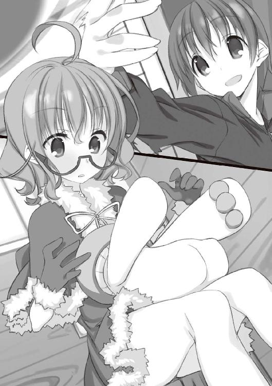
それはまさしく、わたしが読書の時などにクッションとして愛用している、パワフルな腕の生えたキノコに楕円形の目とωのような口を付けた（00ω）ぬいぐるみのバリエーションだった。いつも使っているぱやきのさんの半分くらいの大きさで、白とライトグレーのそれは、カタログでだけ見かけたことのある寒冷地域限定品だ。
「え？ その子、ぱやきのさんって言うんだ......」
千代さんの口ぶりからすると、元は彼女の物なのだろうか。
「こういう時はそいつ、要るだろ」
成田くんが姿を消していたのは、この白いぱやきのさんを部屋かどこかから持ってくるためだったらしい。どうやって成田くんがこれを手に入れたのかは知らないが......今は、ありがたく使わせてもらおう。
わたしはぱやきのさんを抱え直すと、十全の状態で終幕を開幕した。
「まず、明らかにしておくことが二つある」
言ってわたしは一対の封筒を取り出した。
「中身は釣り小屋の中で見つけたクリスマスカードよ。
一通は千代さん宛。
もう一通は倉子さん宛」
釣り小屋の隠し部屋の話を聞いた千代さんは、狐につままれたような顔になった。全くの初耳だったのだろう。
さらに封筒の一通の中身を取り出して渡すと、驚きの声を上げた。
「ホントだ......毎年、プレゼントといっしょにもらってたカードだ。あの年はあんなことがあって、プレゼントをもらってないのなんて忘れてたけど......」
「つまり、静一さんがあの日、悪天候にもかかわらず小屋に行ったのは、そこにプレゼントが隠してあったからよ」
ちなみにその年のプレゼントは、箱が大きくて引き上げられそうになかったので地下に置きっ放しだった。このぱやきのさんから察するにぬいぐるみの類だろうか。
「なんでまた、そんなところに隠したの？」
会長さんのもっともな質問。わたしはうなずいた。
「それは......千代さんが、サンタの格好なんてしてロッジの中を練り歩き、客室にも顔を出していたからです」
「そういえば、最初の夕食の時、尾関さんがそんなこと言ってたわねぇ」
「その時にプレゼントを見られてしまう可能性があったし、できるならばクリスマス直前まで隠しておきたかった」
「それなら......例えば倉子さんのアトリエではいけなかったんでしょうか？」
今度は佐々原さん。これには、
「そこで二枚目のカードが出てくる。静一さんは、倉子さんにもプレゼントの在処を隠しておきたかった。
そこで、誰にも見つからない隠し場所と考えて──」
「真っ先に思い浮かんだのが、子供の頃に遊んだ『秘密基地』か」
わたしの言葉を、成田くんが──『静一さん』が継ぐ。
「他にも物置小屋とか候補はあったのかも知れないけど、一度思い付いてしまうとその発想は抜けなかったんでしょう。秘密基地は静一さんにとって、倉子さんと二人きりで幼い日を過ごした......とびきりの場所だから」
加えて、子供時代のいたずらっけの象徴でもある。まだ二〇歳を過ぎたばかりの静一さんに、これは抗いきれない誘惑だった。そして。
「その予想を補強するのが、倉子さんへのメッセージと、プレゼント」
わたしは内ポケットに入れておいた小さな箱を取り出して、千代さんに渡した。これはひとつかみにできるくらいのサイズだったので、地下から持ち出せたのだ。
千代さんはちらと倉子さんを一瞥してから、軽くホコリを払って箱を開けた。
「これは......指輪？」
「カードの文面によれば、プロポーズのための婚約指輪だそうです。お互い大学を卒業したら結婚しよう、という」
「え!?」
ぽかん、というオノマトペがこれほど似合う表情もそうそうない。千代さんは放心した顔を倉子さんに向けた。
倉子さんは深い、疲労のにじんだ溜息を吐いた。
「......馬鹿ね。そんな物を贈られても、受け取る気はなかったのに」
断る理由については何も言わない。訊くつもりもなかった。そればかりは、今回の件には関係がないから。ただ、倉子さんの吐息と声音が柔らかなものだったことに、なんだか少し安心した。
「どういうことです？ お二人は上手くいかなかったのでは？
それに、結婚の件で静一さんと織乃さんが喧嘩したということですが、織乃さんは倉子さんとの仲は応援していたと聞きましたが」
佐々原さんが混乱した声を出し、千代さんがぶんぶんとうなずいてる。確かに、ややこしい話ではあった。
わたしは佐々原さんに訊き返した。
「二人が別れたのは、静一さんが忙しくなった時期だということだけれど、織乃さんが体を壊したことも多忙の一因であったことは想像に難くない。倉子さんとの交際が続けば、静一さんの負担が増え、織乃さんへのフォローも手薄になるかも知れない。
その状況で、倉子さんの性格ならどう動くか？」
「二人の負担......特に織乃さんの生活を考えて、身を引く......
でも、その理由を説明したらきっと静一さんも織乃さんも無理をするだろうから、一方的に交際を打ち切った......」
考えながらぽつぽつ言葉を紡ぐ佐々原さんを遮って、千代さんが割り込んできた。
「それは、でも......倉子姉さんが織乃さんのお世話をするとかで良かったじゃない！」
「その場合、織乃さんの性格がネックになるわねぇ」
答えたのは、『織乃さん』であるところの会長さんだった。
「御両親が亡くなった時、親類にさえ頼らず弟と二人で生きることを選んだ彼女よ。自分の体のことで、弟の恋人の手を煩わせるのを良しとするとは思えないわ」
会長さんはそこで言葉を切って、ちらと成田くんを見た。
「姉としてのプライドがあるからね」
いつもよりもちょっと強い笑顔でそう言う会長さんは、会長さんなりの「役作り」の過程で何か得るものがあったのだろうか。
一方千代さんは、誰にともなく質問を撒き散らした。
「じゃ、じゃあ結婚のことは？ なんで反対したの？ 倉子姉さんとのことは応援してたのに？」
「反対した？ ただ、喧嘩したと聞いたんでしょう？」
わたしの指摘に、千代さんは絶句した。
「織乃さんは、静一さんが結婚を諦めようとしたことに怒って、叱咤したんだとしたら」
「自分を言い訳にしてプロポーズを渋るような弟には怒るわよね。特に織乃さんのような気丈な人なら、苦しければ苦しいほど」
会長さんの──『織乃さん』の同意を受け、それが確かに織乃さんらしい考えだったからか、千代さんは黙ってしまった。
その千代さんにわたしは、自分の考えた静一さんの死の実相を語った。
隠していたプレゼントをクリスマスに間に合わせようと、悪天も顧みず小屋に向かったこと。
地下に降りようとした時、梯子が壊れて仰向けに落ちたこと。
そこで何かが刺さって、背中に傷が付いたこと。
聞き終えて、千代さんは現実味の欠けた、力ない声を出した。
「それじゃ......事故じゃない。誰が見ても明らかな」
「そうよ」
「だったら......だったらなんで、詳しいことを教えてくれなかったの？ わたしには、教えてくれなかったの？」
沈黙が、落ちた。
千代さんの疑問に答える考えがないでもなかったけれど、これを答えるのはわたしの役目ではないと思えた。
「......解る気がします」
その役を担うのは、やはり『倉子さん』──最も倉子さんを見ていた、佐々原さんだ。
「千代さんは、周りの影響を受け易い人だと聞きました」
「......そういうところは、あるかも」
「そして、小さな頃から病気がちで、お家に閉じ込められて育った千代さんにとって静一さんは、理想の人間像だったのではないでしょうか」
「うん。静一さんはわたしの......憧れだったよ。あの人みたいに強くなりたいって、いつも思ってた。
だって静一さんはすごいのよ。わたしから見たら......ううん、誰から見ても魔法みたいなボールを放って、どんな状況でも試合を勝利に導いた奇跡の選手だった」
千代さんの言葉を、『千代さん』が補う。
「あなたは成田くんに言ったそうね。静一さんのお陰で『一度死んで、違う世界に生まれ変わった』って。
静一さんという超人の存在は、そのまま奇跡の証明でもある。奇跡があるなら、自分が病気を克服して普通の人生を送れる可能性だってある。
静一さんは『劇的な世界』の屋台骨だった」
『倉子さん』がうなずいて、続ける。
「そんな静一さんが、千代さんの希望であった静一さんの最期が、ただの不注意......つまらない事故死では、あまりに役不足だったんです。超人は超人らしく死んでもらわないと困ります。
その点、殺人事件なら、言い訳が立つ」
「どういうこと......？」
「『殺人事件』という言葉には、パワーがあります。人の死に方の中でもイレギュラーな響きを持った言葉です。倫理と常識と法律に禁じられ、その戒めを破ることで現出する特別な死。
まして、その死に不審な点があったり様々な謎にまみれていたりすれば、平凡な日常を過ごす人にとって幻想の域と言ってもいいでしょう。
それこそ、静一さんが起こしてきた奇跡に準じるくらいに劇的です」
今思えば、東原先輩が文化祭の文集に『々人事件』を載せたのも、わたしたちにこの発想を印象づけるためだったのかも知れない。先輩は恐らく、去年までにこの考え方に思い至って、でも昔から知っている千代さんの心情を思うと言い出せなかったのだろう。
しかしわたしたちは違う。ただ対等な人間として、千代さんに向き合い、彼女を演じる。
その千代さんは、犯人を探していた時の勢いが見る影もない、力弱い問いを発した。
「それじゃ、姉さんたちが静一さんが死んだ時の詳しい話を聞かせてくれなかったり、自分から怪しまれるようなことを言っていたのは......」
「静一さんの死に、『殺人事件』の可能性を残すため......千代さんの世界が劇的である可能性を残すためです。そのためなら、自分が敵として立ちはだかることも辞しません」
倉子さんが語ったという死生観。人が死ぬ理由は誰かに死を願われたから、そうでなければならない──それはまさに、千代さんを絶望させないためのシステムだった。
最初の夜に尾関さんの言っていた言葉を思い出す──「彼女には必要なことなのです」。
ありもしない「殺人事件」という幻想。それが五年前、最悪のクリスマスに倉子さんたちが千代さんに贈ったプレゼントだった。
それがわたしの──わたしたちの考えだ。
倉子さんは、あらかたを語り終えた佐々原さんを肯定も否定もしない。
千代さんはゆっくりと首を振った。倉子さんと佐々原さんを見比べて、そこに同じ貌を見てしまって、双方から交互に逃げているようにも、見えた。
その視線の定まった時、正面にいたのはわたしだ。『千代さん』のわたし。
「じゃあ、わたしは、自分の世界観を守るために、静一さんの死んだのを殺人事件だと思い込んでいたって言うの？」
「そうよ。防衛本能だった」
「四年間、『お芝居』なんて回りくどい方法で真相を知ろうとしたのは」
「決定的な調査をして、事故死であったことが確定してしまうのが怖かったから。それでいて、『事件を調べている』というアリバイは欲しかったから」
「............そんなの、噓よ」
これに対する答えが、恐らく、この芝居における最後の科白だ。
きっぱり「いや、噓じゃない」と言うか。あるいは「ええ、全部噓だ」と言うか。どちらでも、千代さんは楽になるのかも知れない。
しかし、仙波明希に返せた答えは、こんな意地の悪いものだけだった。
「そうね、噓かも知れない」
千代さんはぶん！ と拳を一振りして立ち上がり、そのまま二階へと上がって行った。部屋に戻ったのだろう。
再びの沈黙。誰も彼女を追えない。
ややあって。
「さっきのに加えて、あなたたちに知っておいてほしいことが二つある」
倉子さんが口を開いた。成田くんを見ていた。
「一つは、静一は超人なんかじゃなかったってこと。そりゃ、一種の天才だったとは思う。でも、能力はすごくても中身は普通の男の子だった。
昔、千代が夏場の長患いで危なくなってきた時、静一があの子に『次の試合をノーヒットで抑えられたら病気も治るって信じてほしい』なんて言って、実現させちゃったことがあってね。その試合を観た千代が、今まで見たことないくらい病気へ前向きになったから、試合当日の夜、静一にお礼を言いに行ったのよ。
ちょうど家に帰る日だというのは聞いてたから、静一の部屋に行った。そしたらね、泣いてたわよ。約束を果たせて良かった。千代ちゃんを失望させなくて良かったって。
静一は千代を救ったし、常に周りの人の期待を絶する働きをしてきたけど、それをできてしまうことに苦しんでもいた。いつ致命的な失敗をして迷惑をかけて、失望させることになるかと怯えていた。
高い場所に行けるからこそ、そこから落ちて大怪我をする恐怖が付きまとう。そして、その恐怖に勝てないから限界に抗って超人的な事績を残すことができた。
誰にも期待されないわたしとは真逆。でも、真逆だからこそ、いつの間にかはまっていた落とし穴の性質と深さが知れる。
──そう思ったら無性に愛しくなって、初めてキスをして上げた」
倉子さんは回顧の言葉を切って、ほぅと薄く吐息した。......しかし成田くんは何を顔を赤くしているのか。
「もう一つは、わたしのこと。
結局わたしも両親と同じ。自分に欠けた物が欲しくて、白い羊の静一を求めた。
別れた理由はおおむねあなたたちの想像......『お芝居』通りよ。もちろん、さっきの理由だけじゃなかったけど......他は細かなことの積み重ね。
でも、静一が死んだ時は愕然とした。彼がわたしに贈ろうとしていた求婚の指輪を取りに行く中で死んだと知って、さらに驚いた。あんな、刹那的な衝動に任せた夜が遠い原因になって静一が死ぬことになったんだと思ったら、自分が怖くなった。
わたしは静一の死なんて願ってない。なのに殺してしまった。
わたしが理由のない死を嫌うのは知ってるわよね。でも、それよりもっと嫌いなのは、理由もなく誰かを殺してしまうこと──
事件ですらない殺人よ！」
初めて。
初めて聞く、倉子さんの激しい声だった。
しかしその激情も一瞬で灰に埋もれ、後に残るのはちりちりと弱々しく明滅する残り火だった。
「わたしはその事実を認めたくなくて、それを千代に糾弾されるのが怖くて、静一の死の実相を隠したのかも知れない。この五年の間、千代の執着に付き合うふりをして、自分も架空の『殺人事件』に逃げ込んでいたのかも知れない。
千代を守るためなんて、卑劣な言い訳を弄してね。
ねぇ......そこのところ、どう思う？」
それは佐々原さんへの──『倉子さん』への──問いだった。当然、佐々原さんには答えるべくもない。倉子さんは自嘲気味に溜息をついた。
「意地悪だったわね。ごめんなさい......それと、幕を下ろしてくれてありがとう。
これ以上は......千代自身が、事実を受け入れられるようになるまで放っておくしかないと思う」
言い置いて、自分も部屋に帰っていった。
尾関さんも「何か軽く食べられる物を作ります」と一礼して厨房に引っ込み、広間にはわたしたち四人だけが取り残された。
疲れているせいか、誰も喋らない。腕の中のぱやきのさんも喋らない。
尾関さんが呼びにくるまでだんまりかと思われた頃。
ようやく顔の腫れの引いてきたお節介の呟きが、ぽつりと落ちた。
「そう、なのかな......？」
＊
翌朝。
「おはよう」
わたしは、千代さんの背中に朝のあいさつをした。
朝食前の時間。一階のベランダから望む空は真っ青に晴れ渡り、あの吹雪が根こそぎ蹴散らしたかのように雲一つない。蒼穹。低地の街中ではおよそ出会うべくもない、恐ろしく広い空が広がっていた。
足は一晩で痛みも引き、違和感はあるがやや引きずるようになら一人で歩くこともできた。
冬の空気は寒さに弱いわたしにはちょっとした試練だったが、陽気などと軟弱な混じりけのない朝の冷気は、不思議と心地良く身を引き締める。
「......おはよう」
無視されるかとも思ったが、千代さんは存外素直に返事をくれた。
振り向いた彼女の格好は最初に会った時と同じ物で、雪原の白を背景にすると帽子が保護色になって、装飾の輪が浮かんでいるように見える。
「何か御用？」
不安そうに訊かれて、苦笑したい気分になった。随分と怯えられている。似ているようでも、その点は妹と全然違う。
わたしは質問には答えずに、全然別の話を始めた。
「わたしには妹がいる。わたしとは正反対に、とにかく元気でやかましくて、なんでもかんでも力任せに解決しようとする」
「......なんの話？」
「母親も同じような感じで、さらに強引な人。家で話が通じるのは、とうさ......父くらいのもの。物静かでのんびりした人で、はしゃぐのや体を動かすのが苦手で母や妹のペースに付いていけないわたしは、物心つくまでずっと父に手を引かれていた気がする。
母親や妹を特別に嫌いなわけじゃない。でも、あの人たちといると疲れる。無理をさせられている気になる。そのくせ、あの連中はそれに気付かずに、自分たちの明朗すぎる世界を押し付けてくる」
あんまりにも要領を得ないせいだろう。千代さんはとりあえず黙ってわたしの話を聞くことにしたようだった。
「わたしはね、静かな生活が好きだし、それが天分だと信じている。同時に、そんな陰気な人間がいると周りがいい思いをしないのも解るから、ほとんどの時間を一人で過ごすようにしている。自分の流儀を誰かに押し付けたりしたくない」
「倉子姉さんもそんな感じなのかな......」
そうかも知れない。少なくとも、似たような考え方ではあるだろう。あの人が他人に無関心に見えるのは、演技ばかりではないはずだ。
わたしは、千代さんと目を合わせた。
「そんなわたしが、こんなところにいるのよ？」
「......さっきから、何を言いたいの？」
何を言いたいのかというと......なんだろう？
自分でもよく解っていない。朝起きて、布団の中で昨日のことを思い出してもやもやして、なんとなくここまで歩いてきて、そうしたら千代さんがいた。だから声をかけた。ただ、それだけの状況。
そもそも出口の構築されていない話なのだから、結論を求められても如意には出てこない。
わたしと千代さんの間に、宙ぶらりんな沈黙が落ちる。
千代さんの怖じけた目はいつしかいぶかしげに、そしてきょとんと不思議そうなものになっていった。それでも、続く言葉は出てこないようで、気まぐれないじめっ子を見る猫の目でわたしを見ている。
わたしも千代さんを見ていたが、いつの間にか彼女の姿が、その向こう側に広がる空と雪原に入り混じっていた。絵になる風情だと思った。
わたしには大自然の美しさなど解らない。だとすれば多分、千代さんのたたずまいに何か感じるものがあったのだろう。自分の弱さ......それも五年物を公然と指摘され、逃げた翌朝、それでも部屋から出てきて独り立つ、彼女の姿に。
そんなことを考えていると、ふと背後に気配を感じた。二つだ。
「仙波さん、千代さん」
一人は佐々原さん。いつも通りの無表情、平淡ながら耳通りの良い声。
「二人そろってるのか。ちょうど良かった」
一人は成田くん。やっぱりいつも通りの......まぁどうでもいい。
そのどうでもいい成田真一郎は、白雪に照り返す陽光に目を細めながらベランダに出てきて、えらくアバウトな提案をしてきた。
「ちょっと、出ないか」
佐々原さんに肩を貸してもらって連れて来られたのは、倉子さんのアトリエだった。
不用心にも鍵は掛かっていない。昨日、秘密基地を探した時にも掛かっていなかったので、暴風の時以外は常時開けっ放しらしい。
成田くんは、イーゼルに架された絵を手で示した。昨日来た時にも見た、やたらごちゃごちゃと色の混じった抽象絵画......だと思う。
「千代さん、この絵を見たことは？」
どことなくふて腐れたように部屋の中を見回し、壁に貼られた猫の絵を見つけて顔をしかめていた千代さんは無言でかぶりを振った。
「なんの絵に見えますか？」
重ねて問われて、千代さんは絵の前に立ち、じっと見つめた。そうして、案外に時をかけずに呟いた。
「天使の絵？」
......なのだろうか？ 真ん中の白いのが天使？ 絵心というものが潰滅しているわたしにはよく判らない。
しかし成田くんが満足げにうなずいたところを見ると、どうもそれが正解らしい。
「よく判りましたね」
「え？ なんとなくそう思ったんだけど......ホントにそうなの？」
戸惑う千代さんに答えたのは、佐々原さんだった。机の上に放り出されていた名刺を差し上げて見せる......そこに記載された名前には見覚えがあった。寄絃参。......妹の友人であるところの寄絃芳花さんの、ちょっとばかり妹愛がオーバーフローした兄上だ。
「実は知り合いに倉子さんの絵を買われた方がいて、その人にお話を聞けました。
倉子さんは『天使』を専門に描かれる絵描きさんなのだそうです」
「姉さんが......？ 最近の絵は、あんまり見てなかったけど......」
倉子さんが天使を描くという話は、千代さんにとってよほど意外な一事だったようだ。目を丸くして傍らの絵を見つめている。
だが、佐々原さんはさらに続けた。
「モデル......と言うか、モチーフは作者の妹さん──つまり千代さんだそうです」
千代さんは言葉を失って、佐々原さんと成田くんと、それからわたしをずらっと見回した。
「噓でしょ......？」
佐々原さんはあっさりと首を横に振った。
「この参さんという方は御自分の妹さんを異じょ......いえ、とても愛している人で、倉子さんの絵に感銘を受けて直接に由来を尋ねたそうなので、間違いありません」
......何やってんだ参さん。
わたしはなんか問答無用の証拠を突き付けられた気になったのだが、寄絃さん家の兄妹関係を知らない千代さんはまだ納得がいかないようで、今度は壁に貼られた猫の絵に人差し指を突き付けた。
「だって......倉子姉さんは死んだ猫の絵なんて描いて、しかも持ち歩いてるような人なのよ？ どうしてわたしを......天使なんて」
「その猫については」
わたしに思うところがあった。
「倉子さんは多分、千代さんへの影響が怖くて、絵という形に封じ込めたのよ」
「......どういう意味？」
「千代さんは、食あたりに苦しむ猫の姿を見て自分も気分を悪くしたことがあるんでしょう？ それが、どう処理するにせよ死体のそばで長い時間を過ごしたら......死に引っ張られるかも知れない。
そう思うと怖くなったから、倉子さんは死体を千代さんから取り上げた。絵にして不滅の存在にして、これ以上千代さんを蝕むことがないようにした......今なら、そう思う」
要するに倉子さんは、どうしようもなく千代さんのことが好きなのだ。
そしてそれを認められないのは当の千代さんで。
「どうして？ わたし、姉さんにとって良い妹なんかじゃなかったと思うよ？」
「十分、資格はあります」
佐々原さんにしては珍しいくらい、力の籠もった断言だった。
「千代さんはさっき、この絵が天使を描いているとすぐに察しましたよね。それはつまり、倉子さんの絵を理解する感性を持っているということです。
若い頃から誰にも認められない絵を描いてきた倉子さんにとって、その独特な感性の理解者は、それだけで全てを賭けて守る価値のある相手だったんです」
自分自身、他人とずれた感覚を持っていることに苦しんで、そのために表情を消して周囲に紛れ込んだ佐々原さんには痛いほど切実な話だろう。彼女はわたしと違って孤独を良しとはしない。自分の本質を受け止めてくれる相手への渇望は想像に余りある。
結果として、佐々原さんにとって『倉子さん』は、これ以上を望めないほどのハマリ役だったわけだ。
「千代さん。倉子さんは子供の頃からおかしなことをしていたと聞きました。家の中に虫を放ったり、林間学校から抜け出したり。
でもそれは、家に籠もりがちな千代さんの退屈をまぎらわせるための工夫だったり、家族の顔を見ないと泣き出したという千代さんのために家に戻ったりだったんではないでしょうか。
倉子さんはずっと、千代さんのことを可愛がっていたんです」
佐々原さんは、昨晩の倉子さんの問いにも答えていた。それだけ千代さんを大切にしている倉子さんが、その千代さんを自分が苦しみを逃れるための盾に使うわけがない。
千代さんの視線はもう、天使の絵に張り付いたまま離れなくなっていた。
「そんな......
だってわたし、この五年間、ずっと倉子姉さんのこと疑って、目の敵みたいにして......お姉ちゃんは......」
「ねえ千代さん」
ながらく黙っていた成田くんが、静かに呼びかけた。千代さんは振り向かなかったけれど、気にせず続ける。
「そんなに君のことが好きな倉子さんが、わざと君に嫌われることをし続けるのは、いくら強い人だって言っても、きっと辛かったと思う。静一さんの死んだ時のことを反復するのだって苦痛だったはずだ」
この寒いのに、外では小鳥が鳴いている。ふと、家の近所で聞くのとはまるで違う鳴き声だと思った。
千代さんは微動だにしない。それでも、成田くんは辛抱強く続ける。
「今年のお芝居で『殺人事件』の幻想は崩れたかも知れない。静一さんの死は、特別な何かではなくなったかも知れない。
でも、だからこそ、五年もの間その幻想を守り続けるために最愛の妹を欺き、憎まれる役を続けてきた倉子さんの『芝居』は、尋常な意志でできることじゃない。事件とも奇跡とも呼べる人間のすごさなんじゃないかな。
人間は儚い。けど、儚いばかりじゃない。
少なくとも僕は、ここで過ごした不思議な三日間のお陰で、そう思えたよ」
千代さんの肩が、微かに震えた。でも、振り向かない。
わたしは、千代さんに歩み寄った。左足に力を入れるとまだ痛むので、ゆっくりと。
千代さんと並んで絵を眺めても、やっぱりこの絵の良さは解らない。でも、わたしにも言えることはあった。
さっきベランダで話したことの続きだ。
「こういう......お節介な人たちがいて、わたしみたいな偏屈者が引っ張り出されて、あなたに出会うことになった。そうして、出会う前には想像もしなかったような出来事があった。
そのことを不条理な災難と見るか、世の中には思いもかけない不思議が無限なほど眠っていると見るか」
視線を千代さんに向けると、千代さんもこちらを見たところだった。全くの同時に、目が合う。そんな偶然に、彼女は微笑んだようだった。
わたしがどんな顔をしているのか、知らない。ただ、ここにいる間、わたしは役者なのだそうだ。
そんなわたしが、彼女に贈れる言葉はこれだけだった。
「それは謎じゃない。あなたとわたしの、選択よ」
エピローグあるいはＶＳサンタクロース
○仙波明希
極楽の存在を信じるだろうか。
幸福だけのある場所だとか聞いた気がするが、ごく限定的なそれならば、わたしは実在すると言い切っていいように思う。
現に今、わたしの体は外界の鞭打つような極寒から遮断され、五臓六腑に染み渡る絶妙の温もりに包まれている。この暖かさ、この蕩揺感、この多幸感......これが極楽でないのなら、どこに極楽が在ると言うのか。
雪山では様々な苦難にさらされたが、それに耐え抜いて帰ってきた甲斐があったというものだ。この、部室棟資料室に。
以前なら、この、暖房器具もない、すきま風という名の群狼に心身を骨まで食い荒らされる部屋はお世辞にも快適とは呼べない空間だった。夏は夏で暑くて死にそうだったし。
だがしかし、これより先は冬の冷え込みも何するものぞ。すきま風も、執念深く冷気をたたえた床も、恐るるには足らない。
──要塞の名を、コタツという。つい先日まで文芸部室に鎮座していたあれである。新しいのを買うので要らなくなる、とのことで、雪山へ行く交換条件として横流しを受けたのだ。
部屋の隅にちょこんと設置した小さなコタツだが、わたしが一人で使う分には申し分ない。暖気の死角である背中はぱやきのさんに守らせ、まず万全の態勢と言えよう。ちなみに、同じく雪山行きの戦果である白いぱやきのさんは肘掛けに使っている。
温度管理だけが致命的だったこの部屋を極楽に変えてくれたことを思えば、いろいろと酷い目に遭わせてくれた千代さんも今は倉子さん同様、天使に思える。
あの雪山での一件も、もう二週間近く前のこととなる。
あの後、強行軍でこちらに帰り、翌日には終業式で終始眠っていた。病み上がりだというのに平気な顔でスピーチしていた生徒会長は化け物だと思う。
冬休み前半は心配性な父さんに連れられて病院通い、後半は妹がらみでいろいろと悶着があったのだが、まぁどうでもいい。
新学期が始まって数日。ついに導入されたコタツを堪能しているのが現在である。ちなみにコタツは、なぜか演劇部の人たちが人のいない時間を見計らって運んでくれた。
外は薄曇りで、気温からするとそのうち雪が降るかも知れない。だがそれも、愛機の勝ち戦に花を添えるだけのことだ。（お気付きの人もいるだろうが、今日のわたしはコタツに浮かれてテンションが変だった）
さて、下校時間まではまだあるし、今日はもう一冊読んでから──
などと、棚の中を漁って図書室からキープしておいた本を抜き出そうとした時、ノックがあった。
反射的に、身をこわばらせる。ここは一応個人の私室ではないので誰が来てもおかしくはない。ただ、基本的に誰も来ないだけだ。一部の物好きを除いては。
真っ先に浮かんだ顔は、最初にこことわたしを見つけた成田真一郎のものだった。あれの顔を思い浮かべると、もう治ったはずの左足がそわそわとうずく。
『仙波さん、いますか。入ります』
しかし扉の向こうから聞こえてきたのは、涼やかでよく通る、佐々原さんの声だった。
「どうぞ」
「お邪魔しま......あ、コタツ......」
引き戸を開けて入ってきた佐々原さんは、わたしの状態を見てぽかんと呟いた。
「なぜコタツが」
「親切な人がくれたの」
「それはまた......」
浮き世の人情もあながち捨てたものではありません、と、佐々原さんはすすす......とコタツに寄ってきた。
そんなところで期待に満ちた目をされては──溜息を吐くしかない。
「......どうぞ」
「お邪魔します」
佐々原さんは行儀良く正座で、わたしの斜め左の一角に座を占めた。
「今日は何？ ......珍しいわね、一人で」
彼女がここに来る時は、成田くんを伴うことが多い。正確には、成田くんに連れられてくることが多い。
あったかい......と、ほんの小さく頰を緩めていた佐々原さんは、はッと顔を上げた。
「あ、はい。実は、さっき下駄箱で東原さんに会って」
そうして、ポケットから封筒を差し出す。
「千代さんからお手紙が来たそうです。で、仙波さん宛の分を渡すのを忘れていたから、届けておいてほしいと頼まれました。御本人は急ぎの用があるみたいで」
そう、と受け取り、封筒を逆さに振ってみる。折りたたまれた便箋が一枚で、あまり文字も多くない。すぐに読めた。
「千代さんはなんと？」
待ちきれなくなったように佐々原さんが訊いてくる。
わたしは答えずに、ぱやきのさんを横倒しにして仰向けになった。
しばらく天井を眺めて、佐々原さんのそわそわした気配が限界に達する頃。
「絵を描いてみる。だそうよ」
ぽつりと、言った。
「そうですか......」
それで、大体のことは伝わったと思う。
わたしたちは、あのロッジで芝居をした。とんだ大根だったと思うし、四年も続いた劇の幕を下ろせたのはほとんど運のお陰だ。思い返すと、死ぬほど恥ずかしいことを言ってしまった気もする。
しかし、こうして千代さんの選択を聞けた今は、不思議なほど悪くない気分だった。
今なら、あれほど忌々しかったサンタクロースの存在だって認められそうだ。
『倉子さん』を演じた佐々原さんもそれは同じことなのだろう。他人のことが何も解らないと言っていた彼女が、同じような孤独を抱えていた倉子さんのことはある程度まで理解できた。あるいは、倉子さん自身には見えていない部分まで。
そんな人に出会えたことはきっと、祖父江静一さんが千代さんの世界を変えたように、佐々原さんに一種の自信と安らぎを与えたはずだ。
一応、佐々原さんにも手紙を渡し、彼女がそれを読む間。部屋に静寂が戻ってきた。
心地良い無音だ。正確には、佐々原さんの呼吸の音やコタツの鈍い作動音なんかがしているのだが、その程度はむしろ静寂を演出するための添え物に過ぎない。スイカに塩を振りかけるようなものだ。
目を閉じると、そのまま寝てしまいそうになる。それもいいかと思っていると、とさっ......と頭のそばに気配。
目を開け、その方を見る。佐々原さんも横になっていた。腕を枕に、長い黒髪をコタツ用のカーペットの上に散らして。なんとなく、笑う。
「いつになくはしたないわね」
「いつもは成田くんがいますから」
佐々原さんも、いつもきちんと閉じている唇をほころばせたように思う。微笑み。微かな笑み。幽かな笑い。
本当に、奇麗な笑顔のできる子だと思う。
そのまま、温いような沈黙の中で視線を交わし合って。
次に口を開いたのは佐々原さんだった。
「わたしも、仙波さんにお礼を言いたいです」
「......なんのこと？」
本気で心当たりがない。佐々原さんに感謝されるようなこと、何かしただろうか。
「わたしは......成田くんの都合の悪いところを集めてました」
「それは聞いたけど」
「それが、あの雪山で判った気がするんです。成田くんには、わたしにとってとんでもなく都合の悪いところがあるって」
「......いや、むしろ都合の悪いところしかないと思うんだけど」
佐々原さんも眠いのか、やや虚ろな調子だった。そのせいかわたしのツッコミには触れずに、ぽろ、ぽろ、と、色の薄い唇からオルゴールのように言葉をこぼしていく。
「成田くんには、きっと、わたしより大切なものがあります」
......わたしからすると、それはどうも、佐々原さんが自身を過小評価してるだけに思えたけれど。
「でも、そのお陰でわたし、信じられそうです。わたしは、単に都合が良いという理由で成田くんを......あの人のそばにいたいんじゃないって」
......なんだか面倒くさい考えで悩んでいたということだけは伝わってきた。それでもって、やっぱりずれたことを考えている。元から成田真一郎に良いところなんてあるわけないんだから、それがそんな思い悩むほど意識されるんなら......最初から、そういうことだって解るだろうに。
目をそらしたのと入れ違うように、コタツから出していた指先に、感触。佐々原さんの手が、私の手を握っていた。驚くほどしなやかで伸びやかで、込められた力は弱くても絡み付かれて振り解くのは難しい......
「だから仙波さん。
これからも、よろしくお願いします」
......だから、どうしてそこでわたしの名前が出てくるのか。
佐々原さんから視線を逃がすと、白いぱやきのさんと目が合った。事実だけを言えば、あの人からもらったクリスマスプレゼント。
わたしは、なんかもういろいろとめんどくさくなって。
寝よう。と、思った。
○成田真一郎
サンタクロースの存在を信じるだろうか。
僕はちょっと半信半疑になっている。
理由は簡単。クリスマス以来、ろくなことがない。
数年ぶりに行われる家の大掃除でこき使われ、年末年始は会長に引っ張り出されたり退屈を持て余した男友達にゲームセンター巡りに付き合わされたり、三が日が終わって落ち着けるかと思ったら二年の鹿野桃子さんに「陸上部の大会の応援が足りないから来て」と駆り出され、そのせいで終わらなかった課題を泣きながら最終日に片付けて。
クリスマスが非常に思い出深いだけに、サンタクロースはむしろ、幸運を奪いに来る存在ではないかと疑わしくもなるのである。
「......今日の昼休みだってそうですよ。冬休みの課題でどうしても判らないところがあって、たまたま家の母さんに年始のあいさつに来てた楓に教えてもらったら、その見返りだとか言って手芸部の部室の片付けをさせられて......」
具体的には、年末にゴミをまとめたはいいが重くなりすぎて運べなかった分をゴミ捨て場まで運ばされた。
松宮楓はちょっとした昔馴染みで、僕のことは邪険にするが僕の母さんには懐いている。ちなみに本人が手芸部員なのではなく、その親友がこの冬から部長をやっている。日済しの高利貸しじみた楓と違って、たいそう恐縮して缶コーヒーを用意してくれた。
「古い棚を持ち上げたりしたから、腰と背筋が悲鳴を上げてますよ」
「なに？ それはぶん殴って下さいって言ってるの？」
話を聞き終えた会長は、笑顔のまま拳を固めてみせた。
え？ なんで......と戸惑う僕は今、放課後の生徒会室で会長と資料を探していた。次の生徒集会で生徒会選挙の説明をする──この学校は毎春に生徒会メンバーを交代する──ので、参考にする去年以前の原稿を用意しなきゃならない。
会長が冬休み前に用意しておく予定だったのだが普通に忘れていて、当然のごとく僕が手伝っているというわけだ。
キャビネットに並んだファイルボックスのどれかに入っているはずなので、片っ端から検めていけば見つかるはず。会長と雑談しつつ作業に励んでいたのだが......
不理解に戸惑う僕に、会長は深く息を吐き出して、握ったままだった拳を自分の額に当てた。
「あのね真一郎......真一郎は日々適当に動き回ってるんだろうけど、物事には摩擦ってものがあるのよ」
「摩擦......？」
「そう。人間なんてのは、どっかで触れ合って干渉し合ってるんだから、誰かが動くと他の人との接触面に影響しちゃうのよ。
真一郎はその辺、考え無しすぎる」
「はぁ......」
言いたいことはなんとなく解るものの、いまいち要領を得ず生返事になる。僕が誰彼選ばず関わろうとするから面倒事も付いてくるということだろうか。
解ってないと見たか、会長はつと僕に身を寄せてきた。顔が近くなると、正月にうっすらと口紅を付けていたのを思い出してしまう。思わず身を引くと後ろのスチール棚に背が触れた。
逃げ場のない僕の胸に、会長の手が当てられる。
思ったのは──このまま胸ぐらを摑まれて殴られるのか、という諦念だったが。
「誰かに触れて、動いたら」
でも、会長の掌はネクタイに沿うようにゆっくりと僕の胸から首をなぞり上げ、最後に頰に添えられた。
ごく弱く触れているだけなのに、指の一本一本まで感じ取れる。これがあれほどの威力の拳に化けるのこそ千代さんの求めたこの世の怪異だと思えるくらいに、女の人の優しい手だった。
会長は微笑みとともにくらりと首を傾げて、繰り返した。
「誰かに触れて動いたら──その部分に熱が灯る。そんなこと、むやみにしちゃあダメ。
そうでしょ？」
自分でもはっきり解るくらい顔を真っ赤にした僕には、うなずくことしかできなかった。確かに、火が出そうなほど、熱い。
......と言うか、あのロッジから帰ってからの会長はなんか、変だ。妙に落ち着いたような、少しばかり丸くなったような......何か、大人っぽく見えてしまう、ような。
あのロッジで祖父江織乃さんを、複雑な立場の「姉」を演じることで、会長なりに見出したものがあるのだろうか。なんにしても、あのロッジでのことは岬姉にとって大きな経験だったのだろう。
でも、そんな風に一人で大人になられるのは......寂しい、とも思う。
いつまでも「秘密基地」で遊んでいるわけにはいかない。それは解っているけど、だからと言って、失くしたくない物もある。祖父江静一さんはそんな風に執着したから、あの朽ちかけた穴の中で眠ることになったのだろうか。
でも、僕は......
そんな感慨に硬くなりかけた頰が、不意にぐいっと引き延ばされた。
会長が僕の頰を両側からつねって、強引に引っ張っているのだ。何事かと涙目で見下ろす僕に、会長はいつも通りの──ずっとずっと前からいつも通りの──常に悪戯を含んだ笑顔で告げてきた。
「だから、あんまり調子に乗るんじゃないわよ」
頰の千切れそうな熱い激痛とともに肝へ記銘しつつも、変わった中にも変わらないものを見つけたことに、僕は少し嬉しくなっていた。
その後、資料はわりかし簡単に見つかったのだが、それの使える部分と使えない部分の仕分けは結構面倒で、終わった今は下校時間も近い頃合いになってしまった。
窓の外に目をやれば、ぽつぽつと雪が降り始めている。空の鈍色と相まってなんだか陰鬱な日だった。
生徒会で会計をしている宮野さんから「クラスの女子でカラオケやってるから今から来ない？」と誘われた会長と別れた後、部室棟に足が向いたのは、なんとなくとしか言いようがない。
さすがにこの時間には仙波も残っていない可能性が高かったし、普段なら真っ直ぐ帰っている。ただ、今日は仙波と一言も話せてない──その事実が、未練がましくワンチャンスを求めているのかも知れなかった。
新学期になってからの仙波は、休み前以上に素っ気ない気がする。目が合ったかと思うと、間髪容れず逸らされてしまう。......やっぱり、あの釣り小屋でちょっと強引に振る舞ったことでさらに嫌われてしまったのだろうか。
なんとか一言二言でも会話をして、せめて以前の関係には戻りたいところだけど......
資料室の前に来ても、中で人の動く気配はない。やっぱりいないのか、と、肩を落としつつ戸を開ける。
一瞬、無人かと思って、それから気付いた。部屋の隅に見慣れないけど見覚えのあるコタツがあって、そこで二人の女子が寝ている。
この部屋の主である仙波と、常連になりつつある佐々原だ。
仙波はほぼ仰向けに、佐々原は横向きになって寝ていた。
......なんでここにコタツがあって、二人して寝込んでるんだ。
さすがに呆れつつ近付いて、見下ろす。二人とも、気持ちよさそうな寝顔だった。
仙波はいつものアンニュイだったり険が強かったりする部分が抜けて、本来の柔らかな顔立ちが素直な魅力を見せてくれている。ブラウスの第二ボタンまで外しているせいでのぞいてしまっている鎖骨が、呼吸に合わせてゆっくりと上下していた。
佐々原は、乱れた髪が頰にかかったりして、こちらも普段とは大きく印象が変わっている。この間千代さんにもらった白いぱやきのさんを枕にしていた。純真なところのある性格を知っているせいか、つい子供扱いしてしまうこともある佐々原だけど......こうじっくり見ると、やっぱり大人っぽくて、奇麗だ。コタツで暖まっているせいか、いつもは真っ白な襟足がうっすらと染まっていた。
力弱く投げ出された二人の手が、ほんの指先で触れ合っている。その様は、二人に全く共通点がないにもかかわらず、仲の良い姉妹の寝姿を思わせた。
..................
......いや、いや、いや。思わず見入っちゃったけど。
そろそろ帰らないといけないし、起こすべきなのだろう。でも。
耳をくすぐるような安らかな寝息を聞いてしまうと、途切れさすのがいかにも罪悪に思える。別に、まだまだ二人の寝顔を見ていたいからとか、そういうことじゃなくて。
僕はあまり音を立てないようにパイプ椅子を引くと、ゆっくり腰を下ろした。
外の雪はいよいよ本降りになりそうで、窓枠にも雪が溶けずに積もり始めている。ただ、今となっては、嫌な感じは全くしない。
窓から下に目を移せば、この学校に入ってから多くの時間をともに過ごした二人の少女が眠っている。
佐々原三月。
無表情で丁寧な喋り方で、一見大人びているけれど、本当は不器用でいつも必死に人に合わせようとしている。そんな彼女の本質はとてもユニークな物の見方をして、その突飛な考え方を聞く度に驚いたり呆れたり、感心させられたりする。
気付くといつも隣にいて、いっしょにいると安心できる。いつのまにか、そんな相手になっていた。だから失いたくないし、反対に佐々原に繫ぎ留められるのも、どこかで嬉しいと思っている。
帰り道を思い浮かべると、いつもその先に佐々原がいる。
仙波明希。
よく解らないクラスメート。最初はそれだけだった。それが、この誰からも忘れられたような部屋で出くわして、子ひつじの会の相談事を考える知恵をもらったりしてる内に、こいつと話すのがどうしようもなく楽しくなった。仕草の一つ一つをじっくり観察すると、案外に可愛い挙動が多いことを知った。今ではもう、こいつに会うのが学校に来る一番の楽しみだ。
僕は仙波とはいろんな点で正反対だ。だから嫌われていて、酷いことも言われて、それなのに追いかけたくなってしまう。理由は多分、いろいろ混ざっている。それがもやもやして、混乱して、時々喧嘩もしてしまうけど、それらすら胸を高鳴らすから、やっぱりどこまでも追いかける。
捕まえたいと思ってもするする逃げていって、だから、どんどん、想いが募る。
そんな二人の寝顔を同時に見られるなんて、そうそうあることじゃない。二度とない可能性の方が高いだろう。
だから、若干の後ろめたさを感じつつも、完全下校のチャイムが鳴るまで、もう少しだけ眺めさせてもらおう。
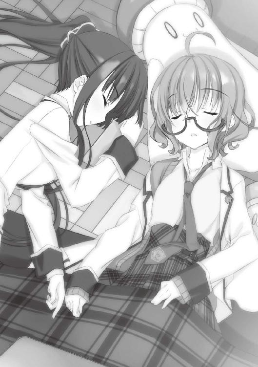
──こんな、あるいはささやかな幸運も僕にとっては奇跡に等しい。さしずめ、僕にとってのサンタクロースはこの二人だったってことか。葉村千代さんにとってのサンタクロースが祖父江静一さんだったように。
日常の中に訪れる、現実離れした出来事の贈り手。ありうべくもない一事が、凝り固まった世界を見直すとば口になる。
静一さんのような「スター」は、まさにその典型なんだろう。僕には彼のように多くの人を魅了することはできないけれど、せめて特定の誰かに何かを贈れる人間になりたいとは、思う。
いろいろなものをくれている仙波や佐々原に、僕は何を返せるだろう。
改めて二人の寝顔を眺めると、これに報いるプレゼントなんて現世に存在するのだろうかと不安になってくる。
窓外の雪は僕の悩みとは無縁にせっせと学校を白く染める作業に没頭している。
コタツのある資料室はただ黙然と僕を見下ろしていて、棚に並んだ数々の本も助けてくれそうにない。
こればっかりは子ひつじの会に相談するわけにもいかないだろう。
僕は、唸った。
サンタクロースを目指すのも、なかなかどうして楽じゃない。
あとがき
最近すぐ隣の家が建て直し工事をしていて昼寝ができなくて困っていると書こうとしたら「夜寝ろ」の一言で話が完結することに気付いたのでなんでもないです玩具堂です。
主人公（の一人）が作中時間で半年以上もヒロイン（の一人）に触れなかった当代無類の健全図書『子ひつじは迷わない』。発売が九月なのに冬のお話の６ぴき目です。
今回は４巻に続いての長編。バランス的にはもう一冊くらいオムニバスにするべきかと思ったんですが、編集さんから「６巻の次は新シリーズ書いてみましょう」と打診があったので、ある程度まとまりのある話にしてみました。なので『子ひつじ』は一区切り、次巻未定になります（いつもの予告がないのもそのせい）。
さて今回、あとがきのスペースが異様に長いです。従来は２ページで書かせていただいていたのですが、ここに来てまさかの７ページ。しかし本読んでるかゲームしてるか仕事してるかの生活に、そんな大長編を成せる豪儀な近況などあるはずもなく。
というわけで、今までほとんどしてこなかった各巻の著者解題と言うか思い出話と言うかをしていきます。１巻とか二年近く前の発売なのでお忘れだったりお手元にない方も多いかと思いますが、お暇な方は飛ばし飛ばしでも読んでやって下さるとうれしいです。
○走るひつじが１ぴき
未だに大賞受賞には違和感の凄いデビュー作。いや、自分では死ぬほど恥ずかしいながらも嫌いではないんですが。なんの後腐れもない小刻みなトンチ話が好きなので、そのまんまなのを自分で書いてみようというのが出発点だった記憶があります。
アイザック・アシモフの『黒後家蜘蛛の会』が意識の隅にあったように思いますが、やってることは「探偵！ナイトスクープ」（関西を中心に大人気の長寿テレビ番組）に近いような気がしないでもありません。
ちなみに受賞当時は「迷わない子ひつじの会」という名称はなく、単なる生徒会相談室でした。と言うか文庫より全体的に地味でした。......ただでさえ野暮ったい話なのにさらに垢抜けなかったという......
各エピソードはとにかくいろんなパターンを試した感じですが、読み返してみると成田がいちいち最低すぎますね。
○回るひつじが２ひき
「回る」は第二話の巡り巡る因果とか、第三話のソフトボールの試合で塁を回ったりすることから。あまり壊れてない頃の佐々原さん（問題発言）が表紙の第２巻です。
事実上のレギュラーになったサトウが席巻する巻。本名が出ないのは特に意味はありません。そういう扱いのキャラです。イラストでは仙波のアホ毛のポジションが定まってきてますね。あとオム神様。あんなのを美味しそうに描けてしまう籠目先生の画業はいずれ極みに至るものと確信してやみません。
ちなみに、この巻の第一話『ＶＳかぐやテスト』が今のところ自己評価が一番高い一編です。作中作の象を量る話は中国の史書『三国志』にあるエピソードのアレンジ。曹冲称象という古典童話として本場中国では有名な話なのだそうです。
また、第三話で仙波が言及している洞庭神君の物語は『聊斎志異』という中国の怪奇物語集から採っています。ただし洞庭神君が鬼の面を着けていたという話は特定の底本にのみある注釈で、平凡社ライブラリーの物などで和訳が読めます。
○泳ぐひつじが３びき
会長が表紙ですがあんまり出番のない回ですね。ごめんなさい。当初はエピローグで会長と松宮が戦うシーンがあったんですが、ページ数の都合で全カットになりました。
レギュラーキャラの非・子ひつじの会な日常も書かねばと第二話をＥＸ扱いにしてみた３冊目。第一話の校章盗難事件が我ながら強引でリライトしたい感じです。
他は......割りと本文で語ってしまっているので補足はあんまりないでしょうか。あ、ぱやきのさんの鳴き声は「みゅ～」です。
○うつるひつじが４ひき
「うつる」と平仮名にしたのは「映る」とも「写る」とも「移る／感染る」とも取れるように。表紙の体裁リニューアルで、１巻より落ち着いた感じの仙波がカバーです。ごく自然な理由で表紙になり損ねるサトウ。
長編なんでいつもと方向の違う番外編をやろうと思ったら、ちょっと別方向すぎる感じにぶっ飛んでしまった４冊目。鏡と言語について、いろんな理屈をクロスさせたら......というような仮想譚ですが、本格ミステリーとか期待して下さっていた皆様にはすみませんでした。『子ひつじ』は割りとノンジャンルです。
あと、６巻もですが三国志ネタを入れ損ねたのが微妙に無念。
○騒ぐひつじが５ひき
メイド服姿で珍しい表情をした佐々原さんの表紙が眩しい５冊目。あの服を作った手芸部員は頑張りすぎですね。カラー扉絵でまさかの梁井先生。
５巻のあとがきでも書きましたが今まで出たキャラの後日談の多い話。１巻以来のキャラも多かったことを考えるとやっぱり登場人物の一覧は付けるべきでしたね。すみません。
第一話の時代劇は原作とかなく、ほぼ即興でそれっぽく話をこしらえました。いつもと違う文体やセリフ回しが楽しかったです。ちなみに作中劇『古十郎刀暦』の登場人物の名前は、久生十蘭の『顎十郎捕物帳』並びに日影丈吉のハイカラ右京シリーズの主要人物の名前をもじっています。内容には関係ないですが。
第二話の『々人事件』に出てくる「帆場さん」は最初「矢羽さん」でしたが、どうしても劇場版パトレイバーが頭をちらついて帆場さんになりました。やっぱり内容には関係ありません。この話のギミックは、素直で善良な人ほど共感できないものだったかも......（作中で言うと佐々原あたりは説明を聞いてもよく解らなかったと思います）。イラストの話をすると、１４９ページの左上で見切れてる屋台店員が松宮疑惑。
○贈るひつじが６ぴき
この本です。表紙はまさかの仙波サンタ。レアなカラーすっぴんです。
脱稿前にサブタイトル（○○ひつじが×ひき）が決まってたのは初めてだったり。４巻ほどではないですが、重厚なミステリーを期待してしまった人はごめんなさい。『子ひつじ』はこんな感じです。ここまで崩すならいっそ怪しげな中国人でも出そうかと思いましたがページ数の都合で断念。
長編にした理由は前述の通りですが、いろんな意味で５巻と対でバランスが取れるようなところのある構成なので、このタイミングで良かったとも思います。
各幕のタイトルはシェイクスピア『ハムレット』の原文から抽出（第三幕だけちょっと変えてます）。
......と、こんなところで、次は新作でお目にかかれるかと思います。内容は本決まりでないのでなんとも言えませんが、子ひつじとはだいぶ路線の違う物になりそうです。いえまぁ、所詮玩具堂なので暗い話にはならないと思いますが。
そちらもお見限りなくフォローしていただければと思います（と土下座）。
最後に謝辞を。
懲りることなく拙作を取り扱って下さる全国店舗の皆様に（たまに売れてるのを見かけるのが人生最高のイベントです）、新作の打ち合わせなどで御迷惑をかけている新担当Ｏさん始めスニーカー編集部の御一同に（本当お世話かけます......）、制作関係者各位に（悪文に加え毎回チェック事項の多いシリーズに付き合っていただき、心の底から感謝しております）、自室の扇風機に（冷房使う時も効率アップに一役買うナイスガイ）、ハイグレードかつ作品に沿ったイラストを提供して下さった籠目先生に（ホームページ等にアップなされていた某キャラのイラストは家宝です......）。
そして、ここまでお読み下さった全ての読者に、万斛の感謝を捧げます。
二〇一二年七月 玩具堂 拝
子ひつじは迷わない
贈るひつじが６ぴき
玩具堂
角川スニーカー文庫
平成24年10月1日 発行
発行者 新名 新
発行所 株式会社角川書店
〒102-8078 東京都千代田区富士見2-13-3
http://www.kadokawa.co.jp/
(C) 2012 Gangdo, Kagome
本電子書籍は下記にもとづいて制作しました
角川スニーカー文庫『子ひつじは迷わない 贈るひつじが６ぴき』平成24年9月1日初版発行